← กลับแผนที่มหาวิทยาลัย · ย่านหลังมหาวิทยาลัยภาพจริงที่ใช้ปรับรายละเอียด
ปรับปรุง 18 ต.ค. 2569 · ภาพจากมหาวิทยาลัย ผู้ออกแบบ และหน่วยงานราชการ ภาพหลายภาพไม่ระบุวันถ่าย สภาพปัจจุบันอาจเปลี่ยนไป
รูปทรง สี และองค์ประกอบที่เห็นในภาพใช้เป็นแนวทางสร้างโมเดล ขนาดและตำแหน่งบางส่วนเป็นค่าประมาณ
41
สถาปัตย์: ผนังขาว แนวกระจกยาว ฐานกระจกสูง กรอบหลังคา
สร้างเปลือกอาคารใหม่; เอกสารรับสมัครปี 2566 ยืนยันมีชั้น 9
เปิดภาพต้นฉบับ ↗43
ไทย–ฝรั่งเศส: แถบส้ม กระจกดำแนวตั้ง กันสาดโค้งเฉพาะทางเข้า
สร้างเปลือกอาคารใหม่; จำนวน 9 ชั้นในโมเดลเป็นค่าประมาณจากภาพ; ภาพอัปโหลดปี 2569 ไม่ระบุวันถ่าย
เปิดภาพต้นฉบับ ↗88
ผนังขาว ช่องเปิดแนวนอน แผงบังแดดด้านล่าง สีชมพูช่วงบน
สร้างเปลือกอาคารใหม่; ความสูงยังเป็นค่าประมาณเดิม
เปิดภาพต้นฉบับ ↗89
กรอบแดง กริดสีเงิน กระจกดำ ป้ายเลข 89
สร้างเปลือกอาคารใหม่; ความสูงยังเป็นค่าประมาณเดิม
เปิดภาพต้นฉบับ ↗90
กล่องกระจกแดงยื่น ผนังขาวและเสารองรับ
สร้างเปลือกอาคารใหม่
เปิดภาพต้นฉบับ ↗63
กระจกเขียว โครงเหล็กและแผงบังแดด
ปรับองค์ประกอบทางเข้า; ภาพอัปโหลดปี 2564
เปิดภาพต้นฉบับ ↗78A
ป้ายหินแดง ตัวอักษรขาว บันไดกว้างและครีบสีส้ม
ปรับสีและรายละเอียดทางเข้า; ภาพอัปโหลดปี 2566
เปิดภาพต้นฉบับ ↗11 / 44 / 47
ป้ายชื่ออาคาร แนวสีชมพู และโครงบนหลังคาตามส่วนที่มองเห็น
อ้างอิงภาพมุมกว้าง เห็นเพียงบางด้าน; 22 และ 77 ใช้เทียบบริบท
เปิดภาพต้นฉบับ ↗Subscribe Rama7
ป้ายเฉียง ซุ้มเหล็กซ้อนลึก เส้นไฟอุ่น บันไดหน้าร้าน
สร้างช่องทางเข้าใหม่จากภาพเผยแพร่ ม.ค. 2568
เปิดภาพต้นฉบับ ↗MOON RAMA7
ป้ายวงกลมสีเขียวอ่อน ตัวอักษรสีน้ำเงิน
ปรับหน้าร้านจากภาพเผยแพร่ ม.ค. 2568
เปิดภาพต้นฉบับ ↗BESTBAR
หน้าร้านดำ ตัวอักษรป้ายไฟขาว
ปรับหน้าร้านจากภาพเผยแพร่ ม.ค. 2568
เปิดภาพต้นฉบับ ↗96
ผนังขาวมีรอยต่อแผ่น ช่องเปิดสูงแคบ กระจกมุมกรอบม่วง ป้ายส้ม และระแนงขาวทางเข้า
2 July 2020 · เปลือกอาคารใหม่; มิติและระดับความสูงใช้แบบจำลองเดิม ยังไม่ใช่แบบสำรวจ; ภาพอีกด้านใช้เทียบ: https://static.where-e.com/Thailand/Nonthaburi_Province/Bang_Yai_District/King-Mongkuts-University-Of-Technology-North-Bangkok-Kmutnb_c1c3d671473d4ed99c38877198af56bc.jpg
เปิดภาพต้นฉบับ ↗ · แหล่งเผยแพร่ ↗Poonpun2016, CC BY-SA 4.0 https://creativecommons.org/licenses/by-sa/4.0/
99
กรอบขาวเฉียง กระจกแนวนอน แผงบังแดดน้ำตาลแดง กรอบทางเข้าบรอนซ์และป้าย 99
ไม่ระบุวันถ่าย · ใช้ส่วนภาพถ่ายจริงในแบนเนอร์ ไม่ใช้ภาพเรนเดอร์เก่า; รูปทรงและมิติประมาณจากภาพ
เปิดภาพต้นฉบับ ↗ · แหล่งเผยแพร่ ↗92 / 93
หอพักคู่สีขาว แถบส้ม–เหลือง ช่องหน้าต่างซ้ำและระเบียง
ไม่ระบุวันถ่าย · เปลือกอาคารใหม่; 13 ชั้นตามข้อมูลเดิม; รายละเอียดด้านที่ไม่เห็นยังประมาณ
เปิดภาพต้นฉบับ ↗ · แหล่งเผยแพร่ ↗Seekr Coffee
ป้ายดำ ตัวอักษรขาวและสัญลักษณ์ถ้วยฟ้า กระจกหน้าร้าน
เส้นทางไฟล์ภาพระบุ 3 ก.พ. 2569 ไม่ยืนยันวันถ่าย · ภาพยืนยันหน้าร้านเท่านั้น ตำแหน่งอาคารยังใช้ข้อมูลแผนที่เดิม
เปิดภาพต้นฉบับ ↗ · แหล่งเผยแพร่ ↗Commu Rooftop Cafe & Chill
ดาดฟ้าไม้ยกระดับ ร่มครีม พื้นเขียวบางส่วนและโครงหลังคาเหล็ก
เส้นทางไฟล์ภาพระบุ 18 พ.ค. 2566 ไม่ยืนยันวันถ่าย · ตำแหน่งเฟอร์นิเจอร์และขนาดพื้นที่ดาดฟ้าประมาณให้พอดีกับโมเดลเดิม
เปิดภาพต้นฉบับ ↗ · แหล่งเผยแพร่ ↗ป้ายหน้ามหาวิทยาลัย / ทางเท้าด้านหน้าป้าย
ผนังหินเทาแผ่นใหญ่ อักษรทอง ตรากลางเหนือข้อความ พุ่มเตี้ย และอิฐตัวหนอนเทา
เผยแพร่ ก.ค. 2567 ไม่ยืนยันวันถ่าย · ปรับป้ายและพื้นใกล้ป้ายตามภาพ; ตำแหน่งทางเข้าและแนวถนนใช้โมเดลเดิม; ตรามหาวิทยาลัยจาก https://www.kmutnb.ac.th/KMUTNB/media/kmutnb/images/kmutnb_index_Logo.png แสดงเป็นวัสดุทองในโมเดล
เปิดภาพต้นฉบับ ↗ · แหล่งเผยแพร่ ↗ส่วนที่ยังต้องมีภาพเพิ่มเติม
อาคารอื่นนอกเหนือรายการนี้ หน้าร้านส่วนใหญ่ เส้นจราจร เสาและสายสาธารณูปโภค รวมถึงภายในอาคาร ยังต้องอาศัยภาพหน้างานเพิ่มเติม รายละเอียดทั่วไปในโมเดลเป็นภาพจำลอง
ตึก 22 และ 77 มีเพียงภาพบริบทมุมกว้าง ส่วน 23 และ 95 ใช้แหล่งอ้างอิงจากรอบก่อน เก็บไว้ใน LANDMARK-REFERENCES.json
ภาพเรนเดอร์ Techno Park และภาพโลโก้ไม่ได้ใช้ยืนยันรูปลักษณ์อาคารจริง
แหล่งชุดภาพ: Geodesic Design · ชุดภาพหน้าร้าน ม.ค. 2568 · เอกสารชั้น 9 คณะสถาปัตย์
สถานะรายอาคาร
ภาพบางส่วนไม่ได้ยืนยันครบทุกด้าน และโมเดลยังมีมิติประมาณ
| อาคาร | ขอบเขตภาพอ้างอิง |
|---|
| 11 | ภาพบริบทมุมกว้าง เห็นบางส่วน |
| 13 | ยังขาดภาพภายนอกเฉพาะจุดในรอบค้นหานี้ |
| 21 | ยังขาดภาพภายนอกเฉพาะจุดในรอบค้นหานี้ |
| 22 | ภาพบริบทมุมกว้าง เห็นบางส่วน |
| 23 | มีภาพเฉพาะอาคาร / ปรับส่วนที่เห็นในภาพ |
| 41 | มีภาพเฉพาะอาคาร / ปรับส่วนที่เห็นในภาพ |
| 42 | ยังขาดภาพภายนอกเฉพาะจุดในรอบค้นหานี้ |
| 43 | มีภาพเฉพาะอาคาร / ปรับส่วนที่เห็นในภาพ |
| 44 | ภาพบริบทมุมกว้าง เห็นบางส่วน |
| 46 | ยังขาดภาพภายนอกเฉพาะจุดในรอบค้นหานี้ |
| 47 | ภาพบริบทมุมกว้าง เห็นบางส่วน |
| 52 | ยังขาดภาพภายนอกเฉพาะจุดในรอบค้นหานี้ |
| 62 | ยังขาดภาพภายนอกเฉพาะจุดในรอบค้นหานี้ |
| 63 | มีภาพเฉพาะอาคาร / ปรับส่วนที่เห็นในภาพ |
| 64 | ยังขาดภาพภายนอกเฉพาะจุดในรอบค้นหานี้ |
| 65 | ยังขาดภาพภายนอกเฉพาะจุดในรอบค้นหานี้ |
| 66 | ยังขาดภาพภายนอกเฉพาะจุดในรอบค้นหานี้ |
| 67 | ยังขาดภาพภายนอกเฉพาะจุดในรอบค้นหานี้ |
| 68 | ยังขาดภาพภายนอกเฉพาะจุดในรอบค้นหานี้ |
| 69 | ยังขาดภาพภายนอกเฉพาะจุดในรอบค้นหานี้ |
| 72 | ยังขาดภาพภายนอกเฉพาะจุดในรอบค้นหานี้ |
| 71 | ยังขาดภาพภายนอกเฉพาะจุดในรอบค้นหานี้ |
| 73 | ยังขาดภาพภายนอกเฉพาะจุดในรอบค้นหานี้ |
| 75 | ยังขาดภาพภายนอกเฉพาะจุดในรอบค้นหานี้ |
| 76 | ยังขาดภาพภายนอกเฉพาะจุดในรอบค้นหานี้ |
| 77 | ภาพบริบทมุมกว้าง เห็นบางส่วน |
| 78A | มีภาพเฉพาะอาคาร / ปรับส่วนที่เห็นในภาพ |
| 78B | ยังขาดภาพภายนอกเฉพาะจุดในรอบค้นหานี้ |
| 79 | ยังขาดภาพภายนอกเฉพาะจุดในรอบค้นหานี้ |
| 81 | ยังขาดภาพภายนอกเฉพาะจุดในรอบค้นหานี้ |
| 82 | ยังขาดภาพภายนอกเฉพาะจุดในรอบค้นหานี้ |
| 83 | ยังขาดภาพภายนอกเฉพาะจุดในรอบค้นหานี้ |
| 84 | ยังขาดภาพภายนอกเฉพาะจุดในรอบค้นหานี้ |
| 85 | ยังขาดภาพภายนอกเฉพาะจุดในรอบค้นหานี้ |
| 86 | ยังขาดภาพภายนอกเฉพาะจุดในรอบค้นหานี้ |
| 88 | มีภาพเฉพาะอาคาร / ปรับส่วนที่เห็นในภาพ |
| 89 | มีภาพเฉพาะอาคาร / ปรับส่วนที่เห็นในภาพ |
| 90 | มีภาพเฉพาะอาคาร / ปรับส่วนที่เห็นในภาพ |
| 91 | ยังขาดภาพภายนอกเฉพาะจุดในรอบค้นหานี้ |
| 92 | มีภาพเฉพาะอาคาร / ปรับส่วนที่เห็นในภาพ |
| 93 | มีภาพเฉพาะอาคาร / ปรับส่วนที่เห็นในภาพ |
| 95 | มีภาพเฉพาะอาคาร / ปรับส่วนที่เห็นในภาพ |
| 96 | มีภาพเฉพาะอาคาร / ปรับส่วนที่เห็นในภาพ |
| 98 | ยังขาดภาพภายนอกเฉพาะจุดในรอบค้นหานี้ |
| ลาน | ยังขาดภาพภายนอกเฉพาะจุดในรอบค้นหานี้ |
| P | ยังขาดภาพภายนอกเฉพาะจุดในรอบค้นหานี้ |
| สะพาน | ยังขาดภาพภายนอกเฉพาะจุดในรอบค้นหานี้ |
| ป้อม | ยังขาดภาพภายนอกเฉพาะจุดในรอบค้นหานี้ |
| ศาล | ยังขาดภาพภายนอกเฉพาะจุดในรอบค้นหานี้ |
| 7-11 | ยังขาดภาพภายนอกเฉพาะจุดในรอบค้นหานี้ |
| พัก | ยังขาดภาพภายนอกเฉพาะจุดในรอบค้นหานี้ |
| 97 | ยังขาดภาพภายนอกเฉพาะจุดในรอบค้นหานี้ |
| สปอ | ยังขาดภาพภายนอกเฉพาะจุดในรอบค้นหานี้ |
| 99 | มีภาพเฉพาะอาคาร / ปรับส่วนที่เห็นในภาพ |
| ? | ยังขาดภาพภายนอกเฉพาะจุดในรอบค้นหานี้ |
ขอบทาง รางระบายน้ำ และรอยต่อพื้นในซอยประตูหลังเป็นรายละเอียดประมาณตามแนวแผนที่ ประตูหลังและทางเดินกระจกอิงภาพสถานที่ Google Maps ปี 2025–2026; มิติและตำแหน่งใช้แผนที่เดิม
แหล่งอ้างอิงรอบก่อน (v69–v76)
รายการจากหน้าภาพอ้างอิงเดิม รวมไว้ที่นี่เพื่อไม่ให้หาย
ลานสวนปาล์มและหลังคาพักคอย
ข่าว 24 มิ.ย. 2569

พื้นเทาคาดแนวเข้ม หลังคาสีอ่อน เสาเขียวเอียง ปาล์มสูง; ขอบเขตและสัดส่วนในโมเดลยังประมาณ
เปิดแหล่งอ้างอิงกิจกรรมเปิดเทอมใหม่ที่ลานสวนปาล์ม
ข่าว 3 ต.ค. 2569 / กิจกรรม 30 ก.ย.–1 ต.ค. 2569

ตรวจว่าพื้นที่มีสวน ปาล์ม โต๊ะหินและหลังคาเสาเขียว ไม่สร้างเต็นท์กิจกรรมชั่วคราวเป็นวัตถุถาวร
เปิดแหล่งอ้างอิงโครงหลังคาและอัฒจันทร์สนามกีฬา
ข่าว 19 ก.ค. 2569

เพิ่มเหล็กค้ำยันตามช่วงเสาเดิม 22 ชิ้น ไม่ใช้ภาพเดียวเปลี่ยนรูปทรงอัฒจันทร์ทั้งหมด
เปิดแหล่งอ้างอิงพิกัดอาคาร ถนน และจุดบริการ แก้ไขปี 2026
พิกัดที่เลือกแก้ไข 2026; ดาวน์โหลด 16 ต.ค. 2026
เลือกเฉพาะข้อมูลและจุดพิกัดที่วันที่แก้ไขไม่เก่ากว่า 2024 วันที่แก้ไขแผนที่ไม่ใช่วันสำรวจจริง ดู coordinate-update-manifest.json
เปิดแหล่งอ้างอิงผังอาคาร 44 และ 52 ฉบับปัจจุบัน
อัปเดต 20 เม.ย. 2569
ยืนยันช่องเปิดกลางอาคาร 52 ผ่านหลายชั้น; ตำแหน่งช่องเปิดในโมเดลยังประมาณ ภาคตัดและความสูงจริงยังไม่ยืนยัน
เปิดแหล่งอ้างอิงv81 · ประตูหลังและทางเดินกระจก
ประตูเหล็กช่องแคบในผนังขาว บันไดเทา ราวจับ ตาข่ายด้านบน และกระถางปูน อิงภาพสถานที่ ก.ค. 2026 ทางเดินมีกระจกยาวแบ่งกริดและระแนงแดงอีกฝั่ง อิงภาพ ส.ค. 2025
แทนซุ้มสีชมพูเดิม เพิ่มกระจกสะท้อนฉากจริงแบบ planar reflection; ไม่ใส่รูปบุคคลลงในโมเดล ขนาด ตำแหน่งผนัง และความยาวทางเดินประมาณให้เข้ากับพิกัดเดิม พื้นซอยคอนกรีตอิงภาพ แต่ตำแหน่งรอยต่อประมาณ
ภาพสถานที่ ประตูหลัง มจพ. ↗
v81 · Bubbles Laundromat cafe · ม.พระนครเหนือ
หน้าจั่วสีพีช ร่องแนวตั้ง ขอบหลังคาเทา ป้าย Bubbles สีเขียวอมฟ้า พื้นขาวลายวงกลมฟ้า–ชมพู รูปแร็กคูน และสะพานไม้หน้าร้าน อิงภาพ ก.ย. 2020 โดย Akkarin Thanalertworawongse ใน Google Maps
ภาพเก่า ไม่ยืนยันสภาพล่าสุด ป้ายวาดใหม่ตามภาพ เครื่องซักผ้าเป็นรูปทรงประกอบประมาณ ตัวอาคารใช้จุดเดิมใน D ซึ่งห่างจากจุด POI ประมาณ 25 เมตร จึงยังไม่ถือว่าตำแหน่งอาคารถูกต้องตามการสำรวจ
ภาพ Bubbles สาขานี้ ↗
v81 · เรือนชอุ่ม / Slow bar coffee
ผนังไม้ครีมแนวนอน ป้ายผ้าเขียวอักษรขาว ประตูกระจกกรอบดำ กันสาดเมทัลชีทโครงเหล็ก พื้นกระเบื้องแดงเป็นกลุ่มสลับปูน โต๊ะเล็กและเก้าอี้พับ อิงภาพหน้าร้าน 3 ก.ค. 2023 โดย one more ใน Wongnai
มิติ จำนวนเฟอร์นิเจอร์ และด้านที่ไม่ปรากฏในภาพเป็นค่าประมาณ รูปอาคารเดิมใช้เฉพาะส่วนบนและด้านหลัง
ภาพมุมกว้าง ↗ · ภาพป้ายและพื้น ↗v82 · ความลึกและรอยต่อโครงสร้างทั้งแผนที่
เพิ่มกรอบหน้าต่างสามมิติ ขอบธรณี เงาร่อง เสามุม รอยต่อพื้น ขอบเชิงชายและสันหลังคา รางน้ำ ท่อน้ำฝน และรอยยึดกันสาด โดยยึดตำแหน่งและรูปทรงอาคารเดิม
อาคารที่เทียบภาพเฉพาะไว้คงช่องเปิดและเงาร่างเดิม รายละเอียดมาตรฐานที่เพิ่มกับอาคารทั่วไปเป็นภาพจำลองให้โครงสร้างอ่านได้ชัดขึ้น ไม่ใช่หลักฐานว่ารูปแบบ ขนาด หรือวัสดุนั้นตรงสถานที่จริงทุกหลัง ไม่ใช้สีหรือข้อมูลโครงสร้างใหม่แทนการสำรวจ
ภาพอาคารและบริบทเดิม: Geodesic Design · ภาพประตูอาคาร 44 / 52 ของคณะครุศาสตร์อุตสาหกรรม
v83 · ภาพจริงเพิ่มเติมและรายละเอียดรายสถานที่
ปรับโถงและปีกยื่นอาคาร 81, หน้าต่างบานกระทุ้งและแนวแผงอาคาร 52, หลังคาจั่วและเสาคู่เกรซเรสซิเดนซ์, ระเบียงลึกและแนวผนังเดอะคาริสม่าเฮาส์ ตำแหน่งและจำนวนชั้นยังคงจากแผนที่เดิม ไม่ใช่แบบสำรวจครบทุกด้าน
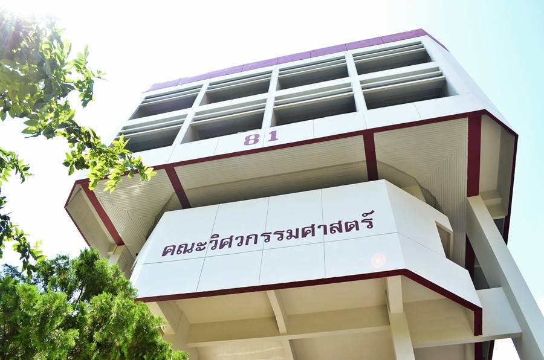
81 · อาคาร 81 · เสาขาว โถงเปิด ปีกยื่นและขอบสีแดงอมม่วง · อัปโหลด พ.ศ. 2559 · ไม่ระบุวันถ่าย · U-Review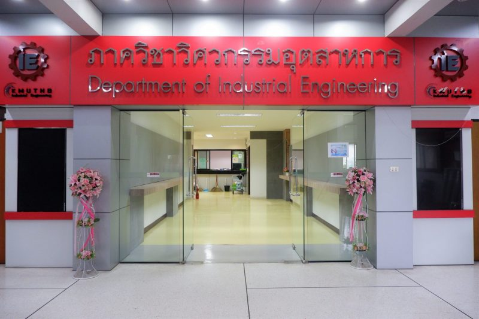
81 · ภาพภายใน: ทางเข้าสำนักงานภาควิชาวิศวกรรมอุตสาหการ ไม่ใช่ผิวอาคารภายนอก · อัปโหลด เม.ย. 2563 · คณะวิศวกรรมศาสตร์ มจพ.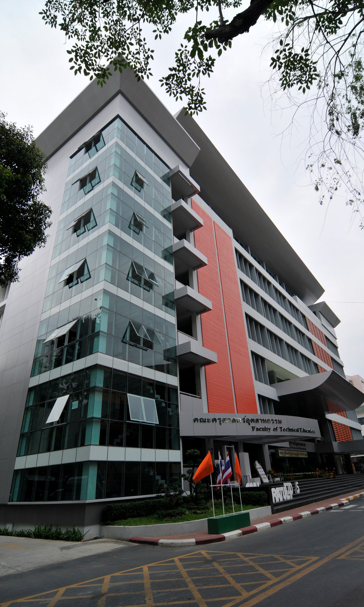
52 · กระจกมุมสีเขียว แผงส้มแดง กันสาดโค้ง และป้ายคณะครุศาสตร์อุตสาหกรรม · ภาพข่าวครบรอบคณะ · ไม่ระบุวันถ่าย · มหาวิทยาลัยเทคโนโลยีพระจอมเกล้าพระนครเหนือ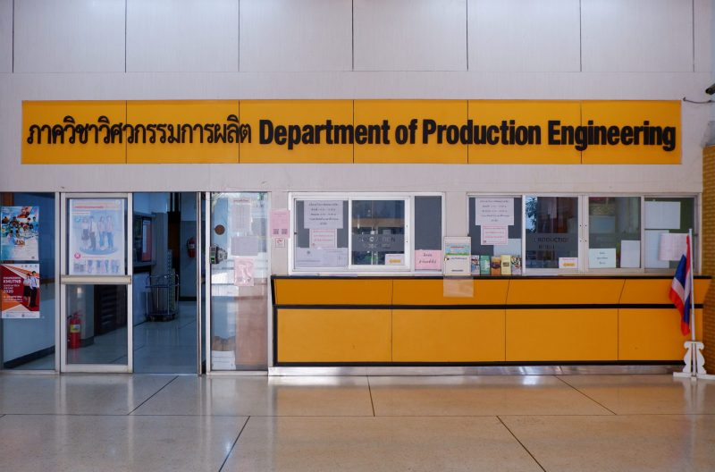
82 · ภาพสำนักงาน/ทางเข้าหน่วยงานภายในอาคาร 82 · ใช้ประกอบรายละเอียดสถานที่ ไม่ใช้แทนภาพเต็มด้านนอก · อัปโหลด เม.ย. 2563 · คณะวิศวกรรมศาสตร์ มจพ.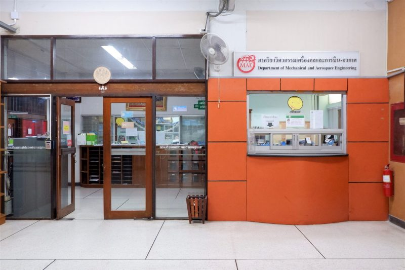
83 · ภาพสำนักงาน/ทางเข้าหน่วยงานภายในอาคาร 83 · ใช้ประกอบรายละเอียดสถานที่ ไม่ใช้แทนภาพเต็มด้านนอก · อัปโหลด เม.ย. 2563 · คณะวิศวกรรมศาสตร์ มจพ.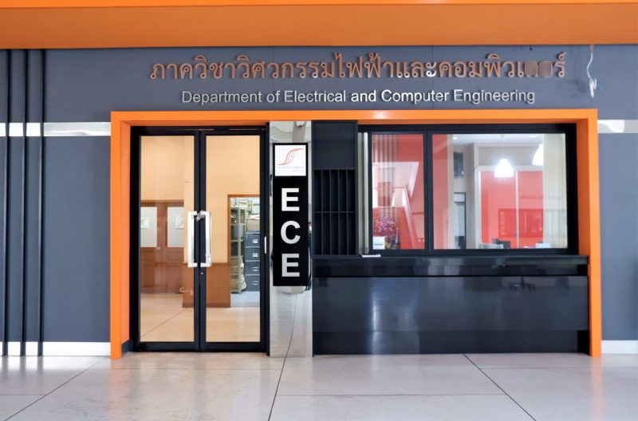
84 · ภาพสำนักงาน/ทางเข้าหน่วยงานภายในอาคาร 84 · ใช้ประกอบรายละเอียดสถานที่ ไม่ใช้แทนภาพเต็มด้านนอก · อัปโหลด เม.ย. 2563 · คณะวิศวกรรมศาสตร์ มจพ.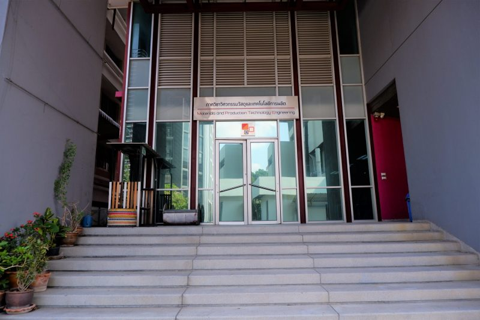
86 · ภาพสำนักงาน/ทางเข้าหน่วยงานภายในอาคาร 86 · ใช้ประกอบรายละเอียดสถานที่ ไม่ใช้แทนภาพเต็มด้านนอก · อัปโหลด เม.ย. 2563 · คณะวิศวกรรมศาสตร์ มจพ.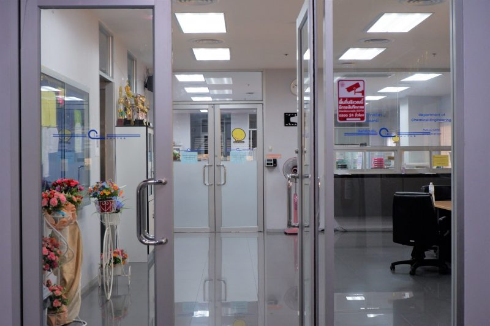
86 · ภาพภายในสำนักงานภาควิชาวิศวกรรมเคมี ชั้น 13 · อัปโหลด เม.ย. 2563 · คณะวิศวกรรมศาสตร์ มจพ.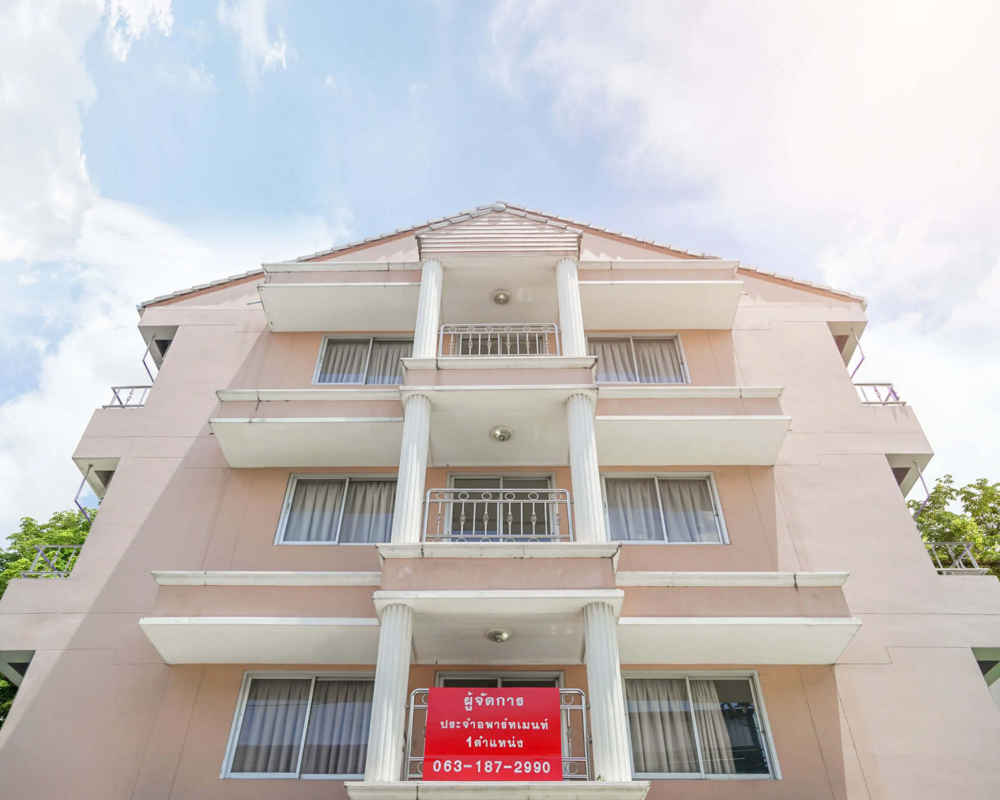
19 · Grace Residence · ผนังชมพูอ่อน เสากลมคู่สีขาว ระเบียงราวโปร่ง และหน้าจั่วหลังคา · เว็บไซต์เจ้าของอาคาร · ไม่ระบุวันถ่าย · The Grace and Charisma Apartment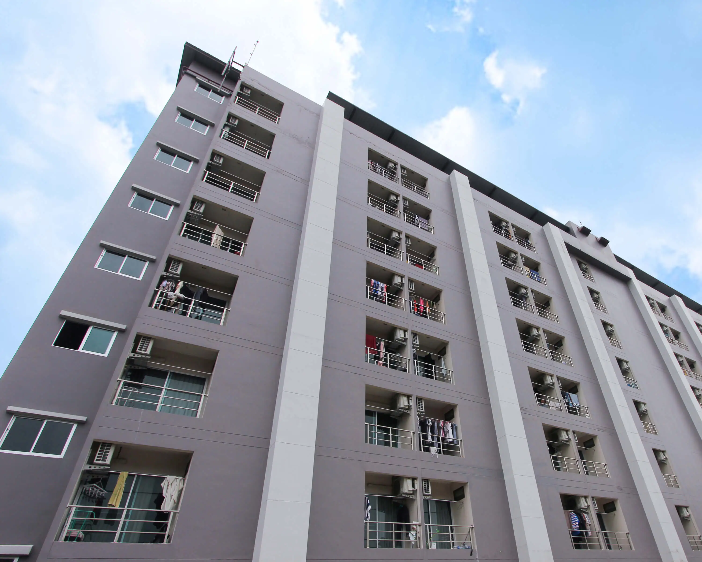
17 · The Charisma House · ผนังเทาอมม่วง แนวเสาผนังขาว ระเบียงลึก ราวโลหะ และหลังคาแผ่นบางยื่น · เว็บไซต์เจ้าของอาคาร · ไม่ระบุวันถ่าย · The Grace and Charisma Apartment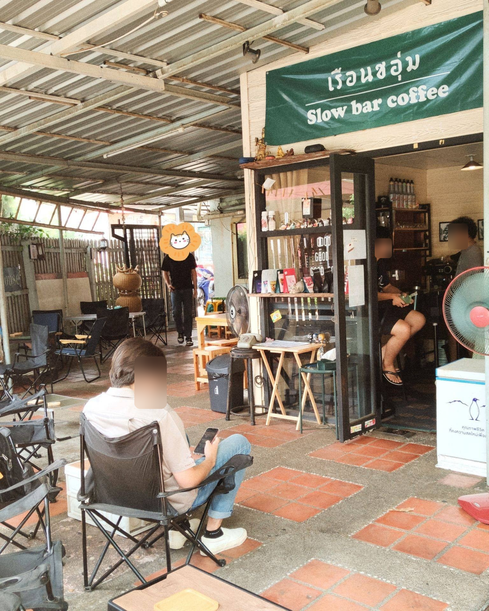
13 · ป้ายเรือนชอุ่ม Slow bar coffee ประตูกระจกและกระเบื้องแดงสลับคอนกรีต · เผยแพร่ 3 ก.ค. 2566 · ภาพผู้ใช้ Wongnai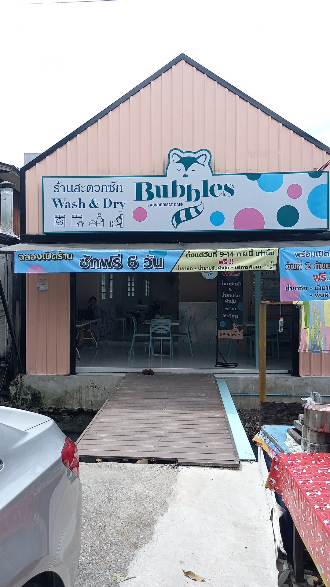
27 · หน้าจั่วพีช ป้าย Bubbles และสะพานไม้เข้าร้าน · ก.ย. 2563 · ภาพสถานที่ Google Maps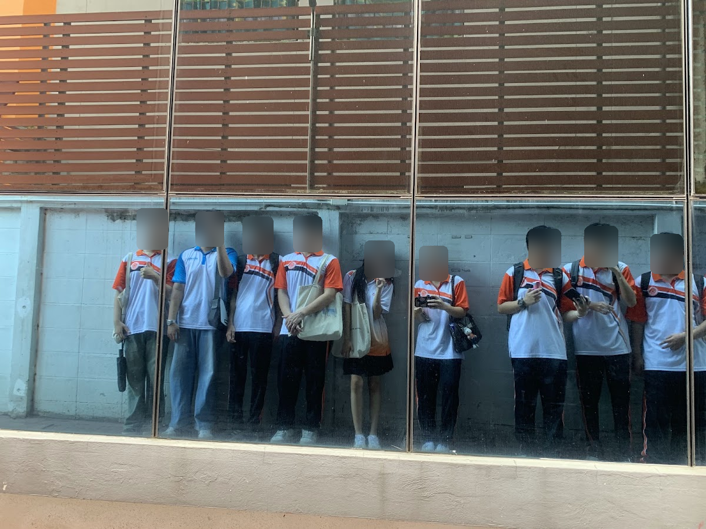
0 · ภาพจริงทางเดิน: กระจกแนวตั้ง ระแนงแดงและพื้นทางเดิน ไม่ใช่ภาพเต็มประตูเหล็ก · ไม่ระบุวันถ่าย · ภาพสถานที่ Google Mapsรูปทั้งหมดเป็นภาพถ่ายจริงจากแหล่งที่ระบุ ภาพสำนักงานอาคาร 81–86 เป็นภาพภายใน ไม่ได้นำไปสร้างรูปทรงภายนอก ส่วนข้อมูลและมิติที่ยังไม่ยืนยันระบุในแผงรายละเอียด
v84 · อาคาร 62, U Life Prime และ The Curve
ปรับรูปทรงเพิ่มเติมจากภาพเฉพาะสถานที่: ระเบียงเปิดและผนังกันตกเซาะร่องอาคาร 62; ผนังครีมสลับพีชและระเบียงลึก U Life Prime; หน้าทางเข้า The Curve พร้อมผนังน้ำตาลเข้ม กรอบขาว และป้าย สัดส่วนด้านที่ไม่เห็นยังประมาณ
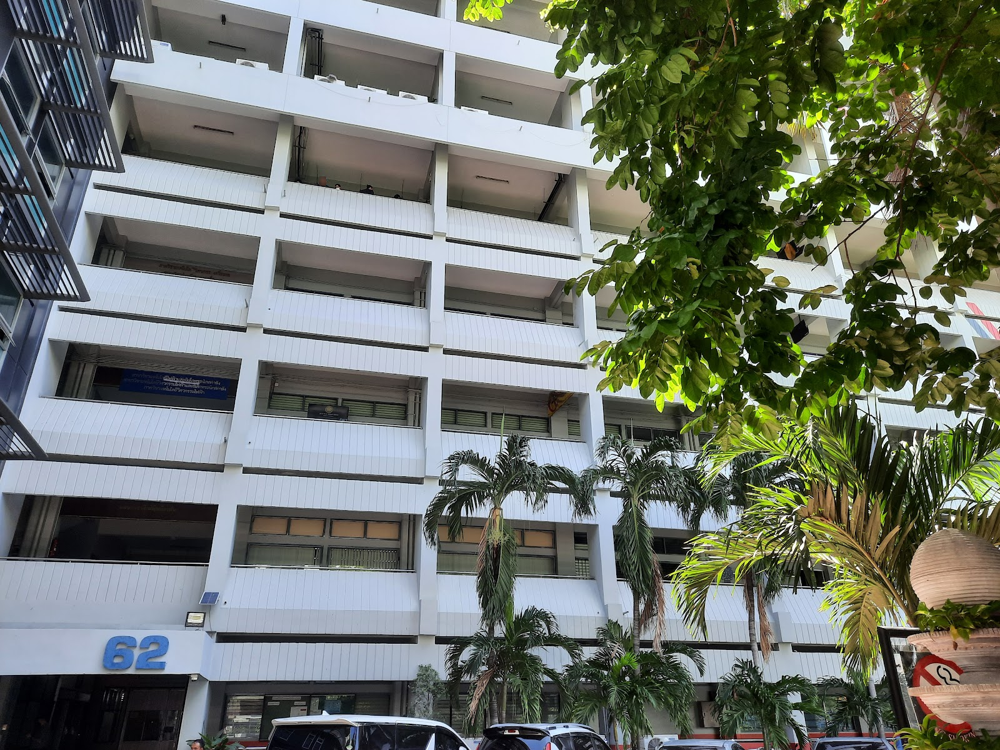
อาคาร 62: กริดเสาขาว ช่องระเบียงเปิดลึก ผนังกันตกเซาะร่อง และเลข 62 สีฟ้าที่ชั้นล่าง · ภาพเดือน ก.ค. 2566 · PT / Google Mapsรูปถ่ายเห็นเพียงบางด้านและไม่ครบหลังคา มิติและรูปด้านที่ไม่เห็นประมาณตามกรอบแผนที่เดิม ข้อมูลกิจกรรมไม่ใช้ยืนยันตำแหน่งสำนักงานถาวร
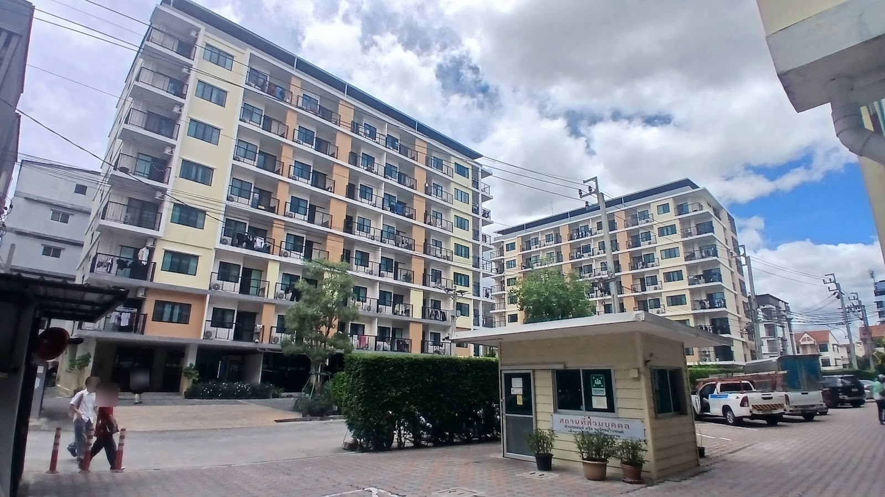
ภาพจริง U Life Prime: ผนังครีมสลับแถบพีช ระเบียงราวโลหะ ชายคาแผ่นบาง และพื้นที่หน้าอาคาร · ภาพเดือน ส.ค. 2569 · ภาพผู้ใช้ Google Mapsคงกรอบอาคารและจำนวนชั้นเดิม ระยะระเบียง จำนวนช่อง ตำแหน่งป้าย และด้านที่ไม่เห็นในภาพยังประมาณ ยังไม่ได้ยืนยันการจับคู่ทุกปีกกับเลขตึกย่อย
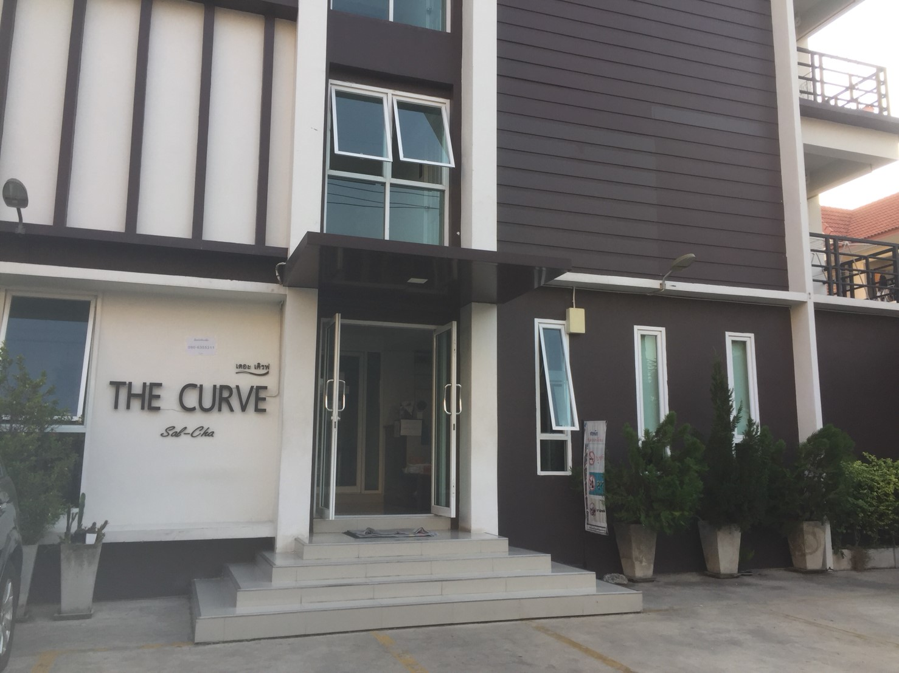
หน้าทางเข้า The Curve: ผนังน้ำตาลเข้ม กรอบขาวแนวตั้ง กระจกกลาง ป้าย THE CURVE / Sal-Cha บันได และกันสาดแบน · ภาพเดือน ก.ค. 2563 · The curve / Google Maps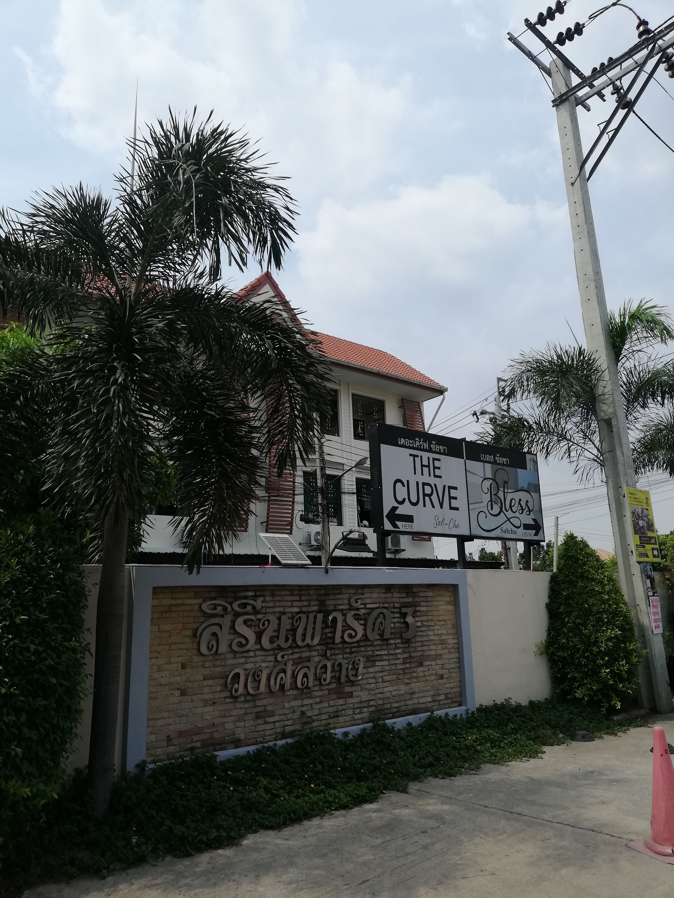
ป้าย THE CURVE และ Bless ที่ทางเข้าโครงการสิรีนพาร์ค · ภาพบริบท ไม่ใช่รูปตัวหอพัก · ไม่ระบุวันถ่ายในไฟล์ที่บันทึก · ภาพสถานที่ Google Mapsภาพทางเข้าปี 2563 เห็นชั้นล่างและช่วงผนังใกล้ทางเข้าเป็นหลัก รูปแบบชั้นบน ด้านหลัง หลังคา และมิติที่ไม่เห็นยังประมาณจากกรอบอาคารเดิม
v85 · อาคาร 65, 76, สวนปาล์ม และทางเข้าหอพัก
ภาพจริง 6 ภาพเพิ่มใหม่ แยกขอบเขตที่เห็นในภาพกับส่วนที่ประมาณไว้ในแต่ละรายการ
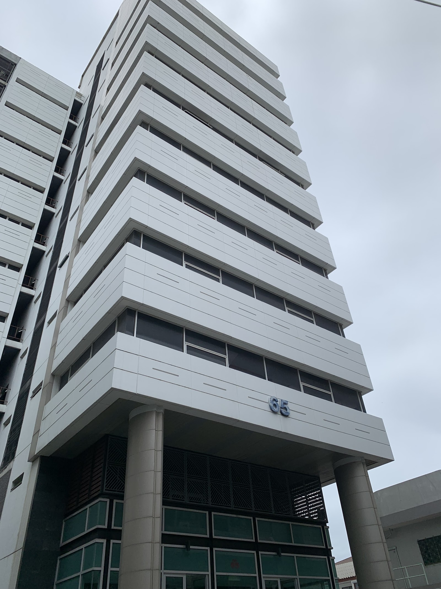
ภาพมุมอาคาร 65 เห็นแถบผนังขาวรอบมุม ช่องกระจกแนวยาว เสากลมชั้นล่าง และเลข 65 · ก.ค. 2566 · RAWIWAN POTIKUL / Google Mapsอาคาร 65 ของวิทยาลัยเทคโนโลยีอุตสาหกรรม เอกสารสาขาการจัดการกระบวนการผลิตและสารสนเทศระบุสำนักงานชั้น 2 และห้องปฏิบัติการคอมพิวเตอร์ 301–302 ภาพภายนอกใช้เทียบรูปด้าน ไม่ใช้ยืนยันการจัดห้องปัจจุบัน
คงผังและ 11 ชั้นตามข้อมูลเดิม สัดส่วนแถบผนังและจำนวนช่องประมาณจากภาพ หลังคาและด้านที่ไม่เห็นยังประมาณ
แผ่นพับสาขา IPTM: ชั้น 2 และห้องคอมพิวเตอร์ 301–302
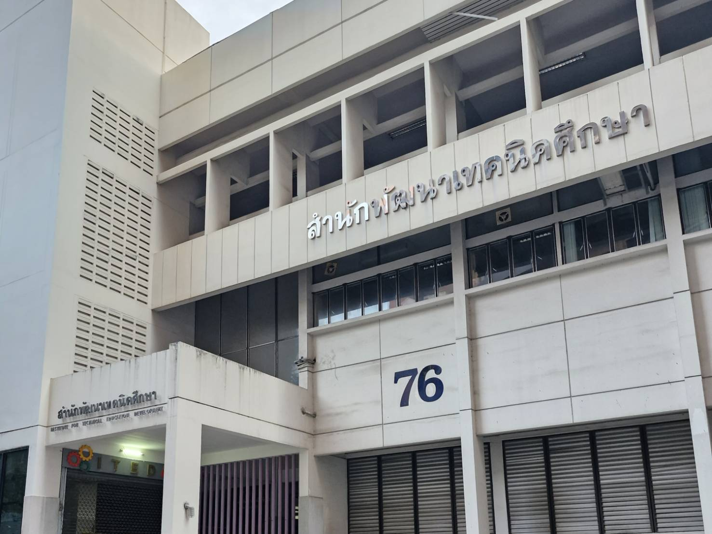
ด้านหน้าสำนักพัฒนาเทคนิคศึกษา เห็นเลข 76 ช่องเปิดชั้นบน แผงช่องลมและซุ้มทางเข้า · ม.ค. 2567 · Nopachote Nirojsuwan / Google Mapsสำนักพัฒนาเทคนิคศึกษา (ITED) อยู่ที่อาคาร 76 ทำงานด้านการพัฒนาการเรียนการสอนและเทคนิคศึกษา หน้าติดต่อหน่วยงานระบุที่ตั้ง 1518 ถนนประชาราษฎร์ 1 ภายใน มจพ. และโทรศัพท์ส่วนกลาง 02-555-2000 ต่อ 2311
คงกรอบและ 4 ชั้นเดิม ภาพถ่ายเห็นเพียงช่วงหน้าตึก จำนวนช่วงเสา สัดส่วนช่องลม ด้านหลังและหลังคายังประมาณ
ที่ตั้งและการติดต่อสำนักพัฒนาเทคนิคศึกษา
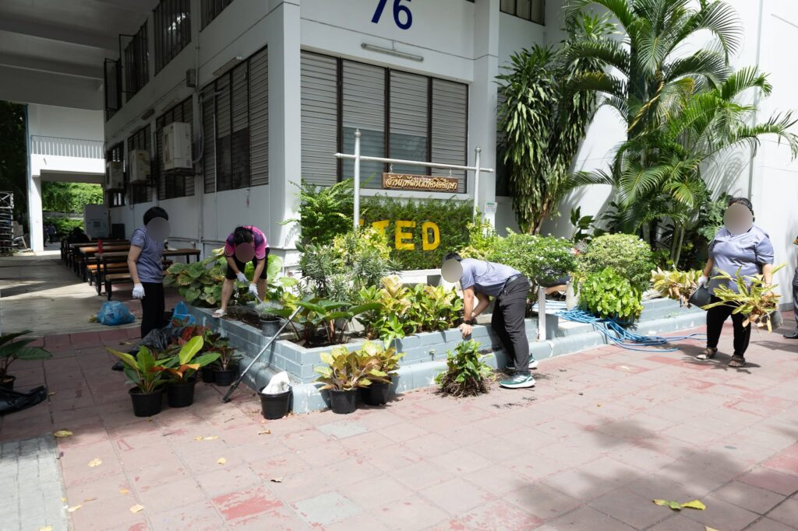
มุมสวนอาคาร 76: พื้นกระเบื้องแดง ขอบแปลงสีฟ้าอ่อนและป้าย ITED · เบลอเฉพาะใบหน้าแล้ว · กิจกรรม 14 ส.ค. 2569 ตามข่าวเผยแพร่ 20 ส.ค. 2569; ไม่ยืนยันวันถ่ายแยกรายภาพ · สำนักพัฒนาเทคนิคศึกษา มจพ. / ศูนย์ส่งเสริมเทคโนโลยีการศึกษาเพิ่มภาพมุมสวนอาคาร76จากข่าวกิจกรรม14ส.ค.2569 เห็นเลข76 พื้นกระเบื้องแดง ขอบแปลงสีฟ้าอ่อนและป้ายITED ภาพเป็นช่วงเคลื่อนย้ายต้นไม้ระหว่างทำความสะอาด จึงไม่ใช้กระถางที่วางชั่วคราวยืนยันตำแหน่งถาวร ยังไม่ปรับขอบแปลง ถนน ทางเดินหรือต้นไม้ในโมเดลจนกว่าจะเทียบตำแหน่งกับผังได้
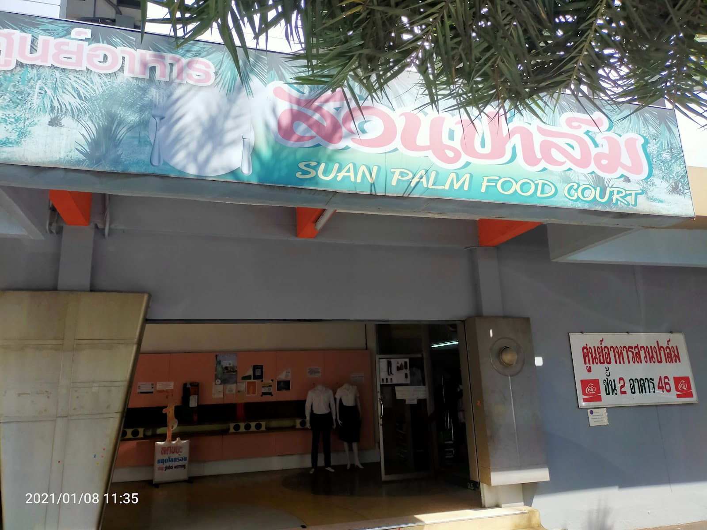
ป้ายสวนปาล์มและทางเข้า พร้อมป้ายชั้น 2 อาคาร 46 ด้านขวา · ม.ค. 2564 · อ้ายเอิ้น อิหลี / Google Mapsศูนย์อาหารสวนปาล์มอยู่ชั้น 2 อาคาร 46 ตามป้ายในภาพ ส่วนหน้าร้านในเครือ Swhite ระบุตำแหน่งชั้น 1 อาคาร 46A ติด Coffee Milk จึงแยกข้อมูลศูนย์อาหารกับร้านชั้นล่างไว้ ไม่ใช้ชื่อร้านในเครือแทนป้ายที่เห็นจริง
ปรับเฉพาะป้ายและช่วงทางเข้าจากภาพ ภาพนี้ไม่ยืนยันหน้าร้านทุกร้านหรือรูปทรงชั้นบน คงอาคารส่วนที่เหลือตามเดิม
ร้านในเครือ Swhite: ที่ตั้งชั้น 1 อาคาร 46A
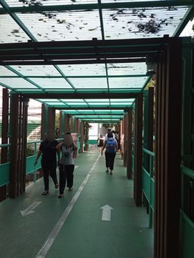
ภาพทางเดินบนสะพานในข่าวทางเชื่อมอาคาร 46–สะพานข้ามคลองบางเขนใหม่ · เบลอเฉพาะใบหน้า 3 บริเวณ · ข่าวเผยแพร่ 20 ต.ค.2563 · ไม่ระบุวันถ่าย · ตรวจ 26 ต.ค.2569 · Green KMUTNB · มหาวิทยาลัยเทคโนโลยีพระจอมเกล้าพระนครเหนือข่าว Green KMUTNB วันที่ 20 ต.ค.2563 ระบุหลังคาคลุมทางเดินเชื่อมอาคาร 46 กับสะพานข้ามคลองบางเขนใหม่ ภาพประกอบเป็นช่วงสะพาน ไม่ใช่รูปด้านอาคาร 46 และไม่ยืนยันทิศ ระยะ พิกัดแนวหลังคาหรือสภาพปัจจุบัน จึงยังไม่ปรับแนวทางเดินหรือขยายพื้นที่นอกมหาวิทยาลัยจากภาพนี้
รุ่น143เพิ่มหลังคาโปร่งสีเขียว โครงสีน้ำตาลและแผงข้างเฉพาะช่วงกลางของสะพานที่มีอยู่ตามลักษณะภาพข่าว2563 ตำแหน่ง ความยาว ความกว้าง ระดับหลังคาและระยะเสายังประมาณ ความโค้งพื้นและทางขึ้นเดิมยังไม่ยืนยันจากภาพนี้ จึงยังคงไว้ ไม่เพิ่มแนวทางเดินหรือตำแหน่งต้นไม้
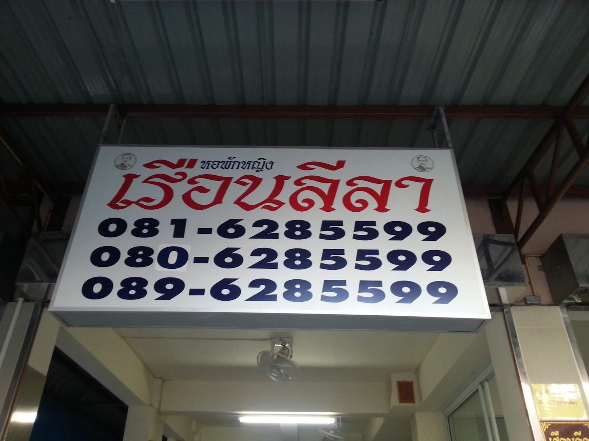
ป้ายหอพักหญิงเรือนลีลาใต้กันสาดโลหะ ภาพเห็นเฉพาะป้ายและทางเข้า · ธ.ค. 2556 · Google Street View / Google Mapsเรือนลีลาเป็นหอพักหญิงใกล้ประตูหลัง มจพ. ป้ายในภาพระบุชื่อเรือนลีลาและหมายเลข 081-628-5599 รายการสถานที่ระบุที่อยู่ 133 ซอยวงศ์สว่าง 11
ภาพเก่าปี 2556 เห็นเฉพาะทางเข้า ไม่ยืนยันสภาพปัจจุบัน ชั้นบน 5 ชั้นและหลังคาประมาณตามกรอบเดิม
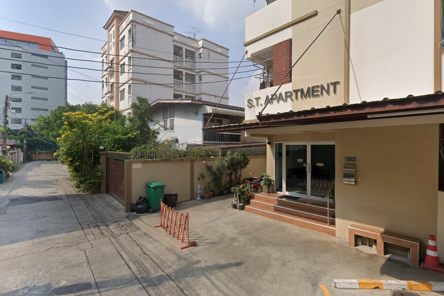
S.T.APARTMENT ด้านทางเข้า: ป้ายตัวเข้ม กันสาดลอน บันไดสีน้ำตาลและผนังครีม · ก.พ. 2567 · Google Street View / Google MapsS.T. Apartment เป็นอพาร์ตเมนต์ใกล้ มจพ. รายการสถานที่ระบุที่อยู่ 202 และภาพถนนแสดงทางเข้าที่มีเลข 202 ติดข้างประตูกระจก รายการสถานที่ระบุหมายเลขติดต่อ 098-854-9374
ภาพเห็นทางเข้าและชั้นล่างเป็นหลัก คง 5 ชั้นและกรอบอาคารเดิม ชั้นบน ด้านหลัง และแนวหลังคาส่วนใหญ่ยังประมาณ
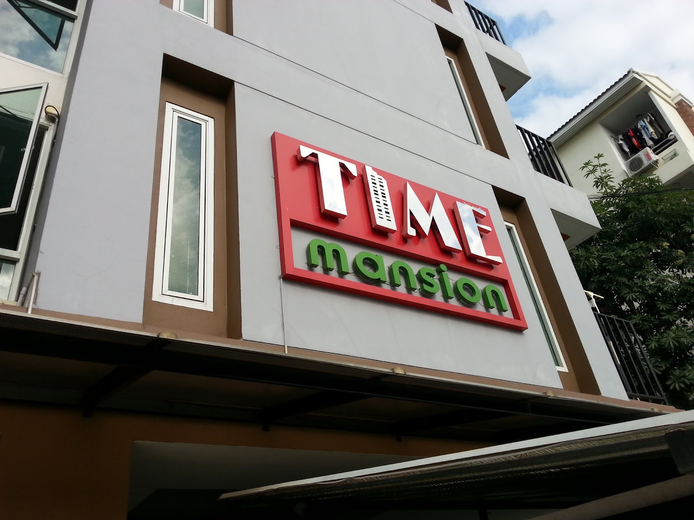
ป้าย TIME สีขาวบนพื้นแดง และ mansion สีเขียว ผนังเทาและช่องหน้าต่างแคบสีน้ำตาล · ธ.ค. 2556 · Google Street View / Google MapsTime Mansion อยู่ที่ 318/1 ซอยวงศ์สว่าง 11 รายการสถานที่แสดงหมายเลข 081-336-3002 ภาพทางเข้ามีป้าย TIME mansion ซึ่งใช้เป็นจุดสังเกตในโมเดล
ภาพเก่าปี 2556 เห็นหน้าตึกเพียงบางส่วน กรอบอาคารเดิมกว้าง 4.33 เมตรอาจเป็นเพียงส่วนย่อย จึงไม่ขยายหรือย้ายพิกัดเพื่อให้ตรงภาพ ชั้นบนและด้านที่ไม่เห็นยังประมาณ
v86 · อาคาร 84, 88, MIXUE, OWL CHA และภาพภายใน Waiting Floor
ปรับโมเดลภายนอก 4 จุดจากภาพจริง เพิ่มภาพและข้อมูล 5 สถานที่ ภาพภายในระบุแยกจากภาพภายนอก
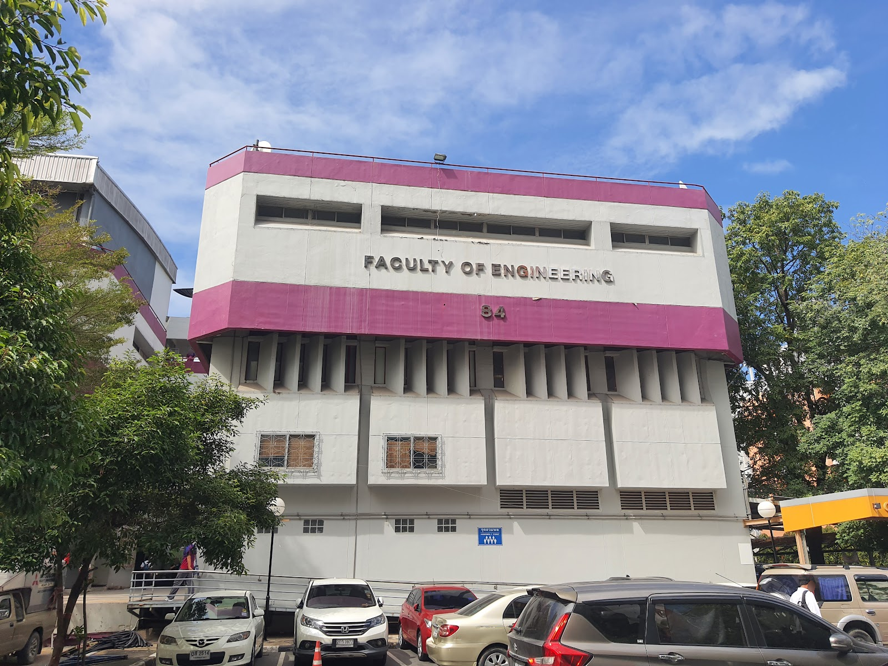
รูปด้านอาคาร 84: แถบชมพูบน–ล่าง ช่องหน้าต่างแนวยาว กล่องชั้นบนยื่น และครีบคอนกรีตถี่ · ธ.ค. 2567 ตามหัวข้อภาพในรายการ · VORAVICH DEEANUNLARP / Google Mapsอาคาร 84 เป็นส่วนหนึ่งของคณะวิศวกรรมศาสตร์ สารบบของคณะระบุสำนักงานภาควิชาวิศวกรรมไฟฟ้าและคอมพิวเตอร์ (ECE) ที่ชั้น 2 แกลเลอรีมีทั้งภาพภายนอกและภาพทางเข้าสำนักงานเดิม แยกคำบรรยายแต่ละประเภทไว้
คงผังและ 4 ชั้นเดิม รูปด้านในภาพเห็นเฉพาะด้านหนึ่ง สัดส่วนหน้าตึกในกรอบแผนที่ จำนวนครีบ มิติหลังคา และด้านที่ไม่เห็นยังประมาณ
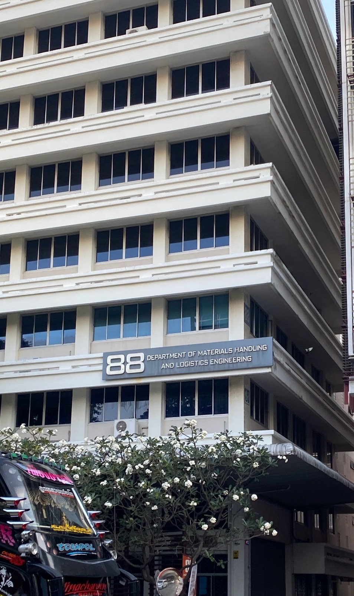
อาคาร 88 เห็นขอบระเบียงยื่น ช่องกระจกลึก เสาครีม และป้ายภาควิชาสีเทา · ก.ค. 2569 · Jirapat Sriwongrak / Google Mapsอาคาร 88 ใช้โดยภาควิชาวิศวกรรมขนถ่ายวัสดุและโลจิสติกส์ (MHLE) คณะวิศวกรรมศาสตร์ ตามสารบบของคณะ ป้ายในภาพแสดงชื่อภาควิชาภาษาอังกฤษ ส่วนข้อมูลสอบสัมภาษณ์ปี 2568 ระบุห้อง 601-2 ชั้น 6 ซึ่งเป็นข้อมูลกิจกรรม ไม่ใช้ยืนยันที่ตั้งสำนักงานถาวร
คงกรอบและ 7 ชั้นเดิมตามแผนที่ ภาพไม่ครอบคลุมจำนวนชั้นทั้งหมดและหลังคา จำนวนช่วงเสา ร่องขอบระเบียง ความลึกและด้านหลังยังประมาณ
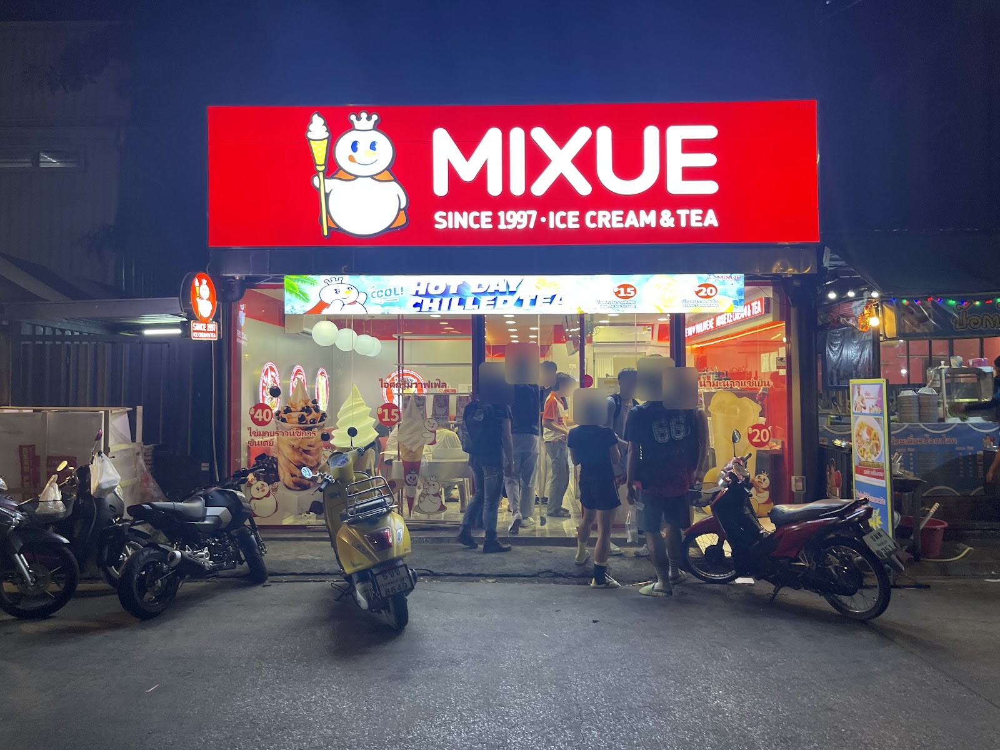
ภาพถ่ายหน้าร้าน MIXUE ตอนค่ำ: ป้ายแดงขนาดใหญ่ กรอบประตูแดง กระจกและแถบเมนูใต้ป้าย · มี.ค. 2567 ตามหัวข้อภาพในรายการ · MIXUE KMUTNB — มี่เสวี่ย มจพ วงศ์สว่าง 11 / Google MapsMIXUE-KMUTNB เป็นร้านไอศกรีมและเครื่องดื่มในซอยหมู่บ้านสิรีนพาร์ค ย่านวงศ์สว่าง 11 รายการสถานที่ระบุที่อยู่ 2 ซอยหมู่บ้านสิรีนพาร์ค และหมายเลข 081-900-7831 ใช้ภาพถ่ายหน้าร้านจริงเทียบโมเดล แยกจากภาพกราฟิกที่เป็นภาพแรกของรายการ
ภาพเห็นเฉพาะหน้าร้านและกันสาด คงหมุดและกรอบเดิม แต่ปรับความสูงที่แสดงเป็นหน้าร้านเตี้ยประมาณ 4.35 ม. พร้อมป้ายสูงราว 5 ม. ข้อมูลเดิมระบุ 2 ชั้นโดยยังไม่ยืนยัน จึงไม่ใช้จำนวนชั้นเดิมกำหนดรูปด้านจริง โลโก้ในโมเดลวาดขึ้นใหม่เพื่อสื่อรูปทรง ส่วนหลังคาด้านหลังและมิติยังประมาณ
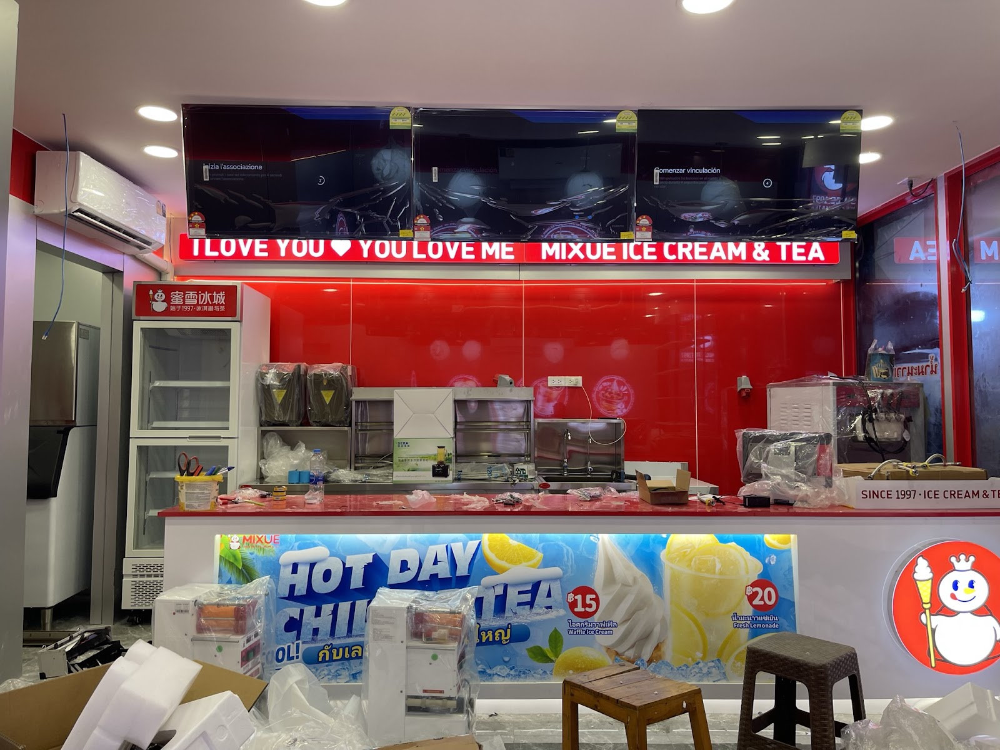
ภาพเคาน์เตอร์จริง ผนังแดง จอเมนูสามจอและตู้เก็บของ ภาพนี้เป็นภายในร้าน · ก.พ. 2567 ตามหัวข้อภาพในรายการ · MIXUE KMUTNB — มี่เสวี่ย มจพ วงศ์สว่าง 11 / Google MapsMIXUE-KMUTNB เป็นร้านไอศกรีมและเครื่องดื่มในซอยหมู่บ้านสิรีนพาร์ค ย่านวงศ์สว่าง 11 รายการสถานที่ระบุที่อยู่ 2 ซอยหมู่บ้านสิรีนพาร์ค และหมายเลข 081-900-7831 ใช้ภาพถ่ายหน้าร้านจริงเทียบโมเดล แยกจากภาพกราฟิกที่เป็นภาพแรกของรายการ
ภาพเห็นเฉพาะหน้าร้านและกันสาด คงหมุดและกรอบเดิม แต่ปรับความสูงที่แสดงเป็นหน้าร้านเตี้ยประมาณ 4.35 ม. พร้อมป้ายสูงราว 5 ม. ข้อมูลเดิมระบุ 2 ชั้นโดยยังไม่ยืนยัน จึงไม่ใช้จำนวนชั้นเดิมกำหนดรูปด้านจริง โลโก้ในโมเดลวาดขึ้นใหม่เพื่อสื่อรูปทรง ส่วนหลังคาด้านหลังและมิติยังประมาณ
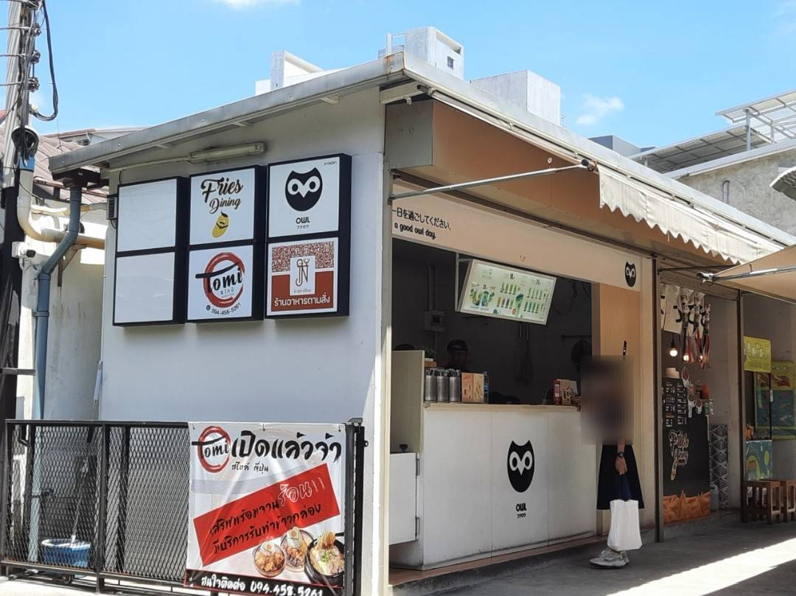
OWL CHA หลัง มจพ. ช่องขายเปิด เคาน์เตอร์ขาว ป้ายรูปนกฮูก กระดานหกช่อง และกันสาดผ้าใบชายหยัก · ก.ค. 2566 · PT / Google MapsOWL CHA สาขาวงศ์สว่าง 11 อยู่บริเวณหลัง มจพ. เป็นร้านเครื่องดื่ม รายการสถานที่ระบุที่อยู่ 278/1 และหมายเลข 086-333-6321 ภาพถ่ายยังเห็นป้ายร้านอื่นบนกระดานร่วมกัน จึงแสดงเป็นอาคารร้านค้าร่วม ไม่เหมารวมทุกช่องเป็น OWL CHA
ภาพปี 2566 เห็นด้านหน้าและมุมบางส่วน รูปแบบป้ายร้านอื่นไม่ใช้ยืนยันว่าปัจจุบันยังเปิดอยู่ หลังคาด้านหลัง ขนาดช่องและระยะร่นยังประมาณ โลโก้นกฮูกเป็นภาพวาดรูปทรงใหม่เพื่อสื่อเอกลักษณ์
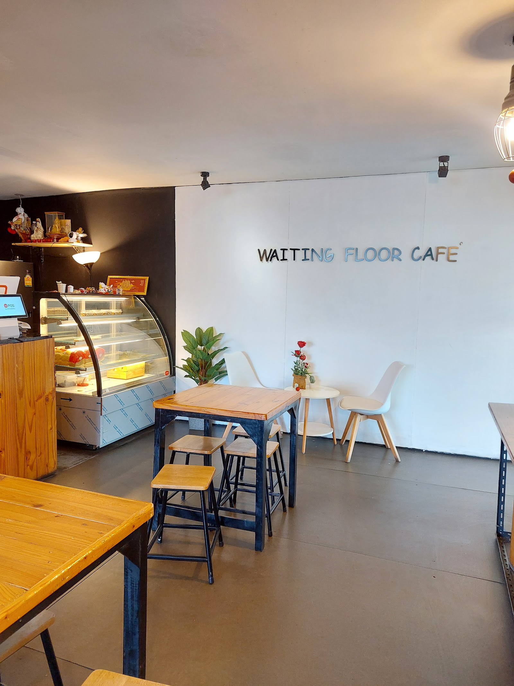
ภายใน Waiting Floor: ผนังขาวชื่อร้าน โต๊ะไม้ขาเหล็ก ตู้ขนมกระจกและเคาน์เตอร์ไม้ · ต.ค. 2567 ตามหัวข้อภาพในรายการ · Give Worada / Google MapsWaiting Floor เป็นคาเฟ่และร้านของหวานใกล้ทางเข้าหลังมหาวิทยาลัย รายการสถานที่ระบุที่อยู่ 218 และหมายเลข 085-113-2893 ภาพที่ยืนยันได้รอบนี้เป็นภายในร้าน จึงเพิ่มภาพและบรรยากาศในรายละเอียดโดยคงรูปทรงภายนอกเดิมไว้
มีเฉพาะหลักฐานภายใน ยังไม่ใช้ภาพนี้ปรับรูปด้าน หลังคา หรือป้ายภายนอก จำนวนชั้นและตัวอาคารในแผนที่เดิมยังไม่ได้ยืนยันจากภาพ
v87 · อาคาร 82, กันสาด 83, Oza และป้ายบริการเซเว่น
แยกภาพเต็มรูปด้านออกจากรายละเอียดบางส่วนและภาพเก่า
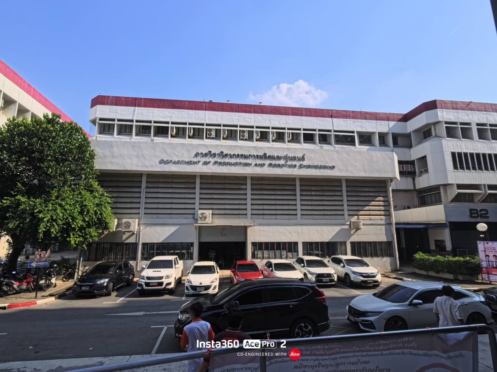
ภายนอกอาคาร 82: บานเกล็ดแนวนอน ป้ายภาควิชาและมุขด้านขวา · ธ.ค. 2568 ตามหัวข้อภาพ · napat Wongsuwan / Google Mapsอาคาร 82 คณะวิศวกรรมศาสตร์ สารบบของคณะระบุสำนักงานภาควิชาวิศวกรรมการผลิตและหุ่นยนต์ที่ชั้น 2 และศูนย์คอมพิวเตอร์ทางวิศวกรรม (ECC) ที่ชั้น 3 ภาพภายนอกเห็นชื่อภาควิชาอยู่เหนือแผงบานเกล็ดขนาดใหญ่
ปรับรูปด้านหลักจากภาพหนึ่งมุม คงผังและข้อมูล 5 ชั้นเดิม สัดส่วนบานเกล็ด ความสูง จำนวนช่อง หลังคาและด้านที่ไม่เห็นยังประมาณ ภาพไม่ยืนยันจำนวนชั้นครบทั้งอาคาร
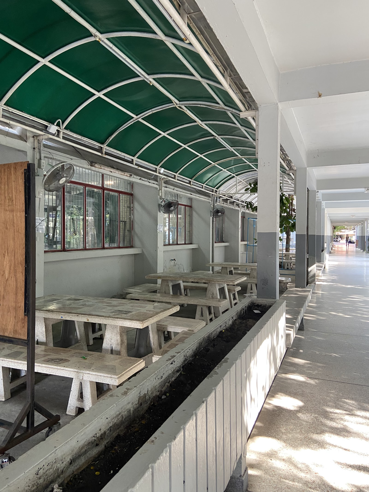
กันสาดโค้งสีเขียวและพื้นที่นั่งชั้นล่างอาคาร 83 · ธ.ค. 2565 ตามหัวข้อภาพ · pongsakarn sumonsart / Google Mapsอาคาร 83 เป็นที่ตั้งสำนักงานภาควิชาวิศวกรรมเครื่องกลและการบิน-อวกาศ ชั้น 3 ตามสารบบคณะ ภาพนี้แสดงพื้นที่นั่งและทางเดินชั้นล่าง มีโต๊ะคอนกรีตหน้าห้องและโครงหลังคาโค้ง เว็บไซต์ภาควิชาระบุโทรศัพท์ 02-555-2000 ต่อ 8304, 8307, 8308 และ 8315
เพิ่มเฉพาะรายละเอียดพื้นที่นั่งและกันสาดชั้นล่าง ภาพไม่เห็นอาคารทั้งหลัง ตำแหน่งช่วงกันสาด ความยาวและมิติยังประมาณ คงโมเดลชั้นบนเดิมซึ่งยังไม่ยืนยันจากภาพนี้ มุมเทียบแสดงเฉพาะส่วนที่เพิ่ม
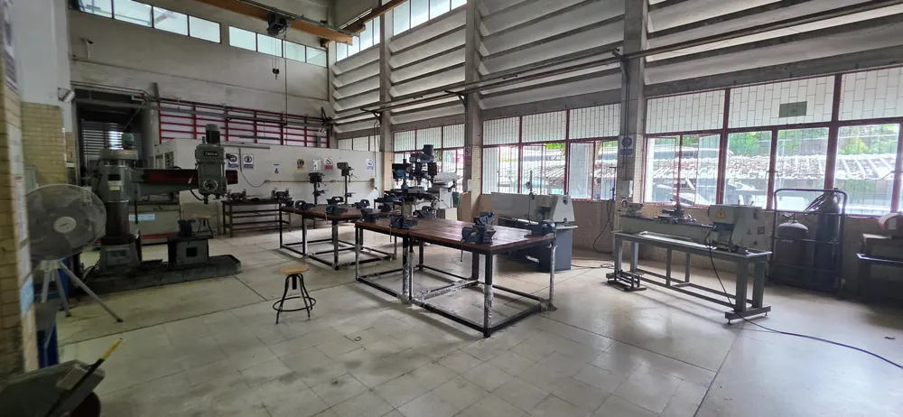
ภาพภายในโรงประลอง (Mechanical Workshop) อาคาร 83 ชั้น 1 ตามหน้าแหล่งข้อมูล · ไม่ระบุวันถ่าย · ไม่ระบุวันถ่าย/วันอัปเดต · ตรวจ 26 ต.ค. 2569 · ภาควิชาวิศวกรรมเครื่องกลและการบิน-อวกาศ มจพ. (MAE)เว็บไซต์ MAE ระบุโรงประลอง (Mechanical Workshop) ที่ชั้น 1 และห้องปฏิบัติการกระจายชั้น 1–4 อาคาร 83 แต่ไม่ระบุเลขห้องหรือตำแหน่งรายห้อง ภาพไม่ระบุวันถ่าย จึงไม่ยืนยันสภาพปัจจุบัน ผังห้องหรือตำแหน่งเครื่องจักรบนแมพ
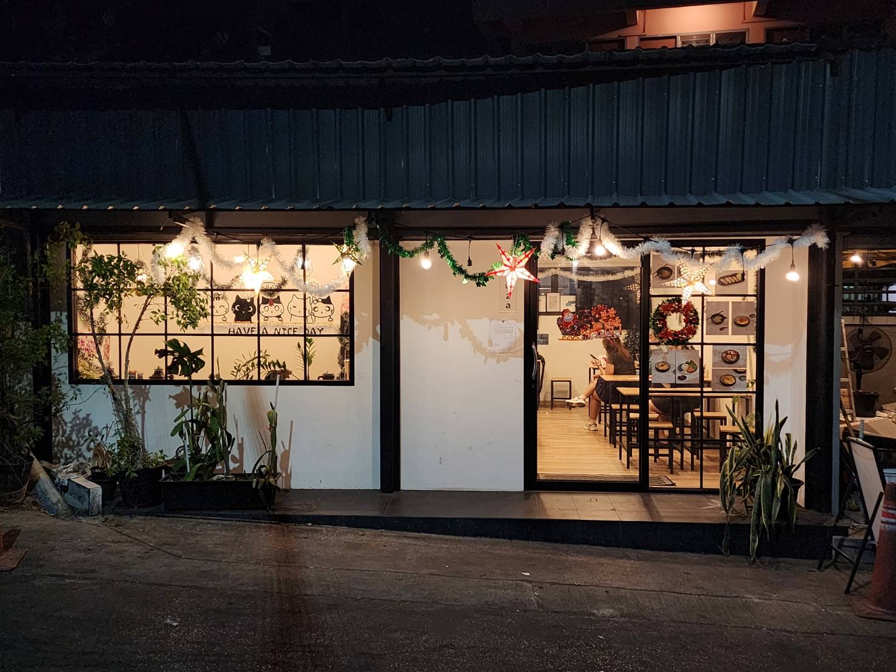
หน้าร้าน Oza Donburi ตอนค่ำ: หลังคาน้ำเงิน กระจกดำและลายแมว · ม.ค. 2568 ตามหัวข้อภาพ · KASAMAR KAEWSANG / Google MapsOza Donburi เป็นร้านอาหารญี่ปุ่นในย่านวงศ์สว่าง 11 รายการสถานที่จัดเป็นร้านอาหารญี่ปุ่น ภาพหน้าร้านจริงเห็นพื้นที่รับประทานอาหารด้านใน กระจกหน้าร้านมีลายแมวกับข้อความ HAVE A NICE DAY และแผ่นเมนูบนประตูกระจกฝั่งขวา
ภาพไม่เห็นป้ายชื่อ Oza ขนาดใหญ่ จึงไม่เพิ่มป้ายที่ไม่มีหลักฐาน ปรับความสูงที่แสดงเป็นร้านเตี้ยประมาณ 4.1 ม. ตามภาพ แต่คงข้อมูล D เดิมที่ระบุ 3 ชั้นและกรอบเดิมไว้ หมุดกับกรอบอาคารเดิมต่างกันราว 15.6 ม. ตำแหน่ง ช่องหน้าร้านและความลึกหลังคาจึงยังประมาณ ลายแมววาดรูปทรงใหม่ หน้าร้านที่แสดงกว้างประมาณ 8 ม. เพื่อเทียบสัดส่วนจากภาพ ความกว้างนี้เป็นค่าประมาณแยกจากกรอบข้อมูลเดิม
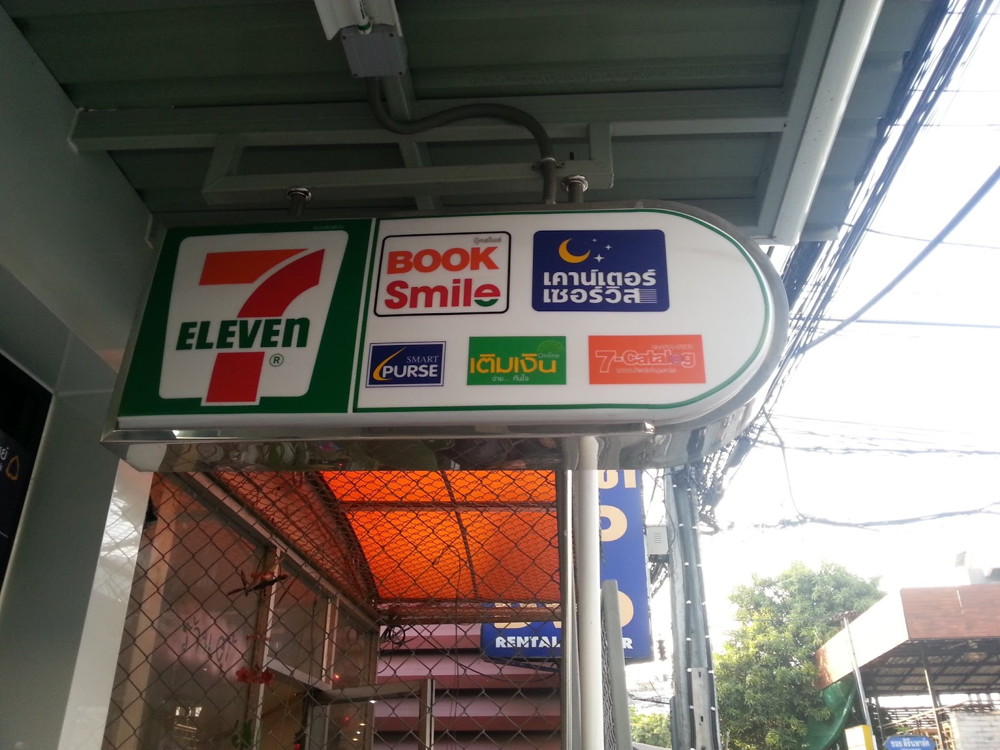
ภาพเก่าป้ายบริการแขวนใต้กันสาดเซเว่น ใกล้ประตูหลัง · ธ.ค. 2556 ตามรายการภาพ · Google Street View / Google Mapsรายการสถานที่ระบุเซเว่นสาขาวงศ์สว่าง 11 จุด 2 แยก 1 ที่อยู่ 13 ซอยวงศ์สว่าง 11 ภาพที่ตรวจสอบได้รอบนี้เป็นภาพเก่าของป้ายบริการแขวน เห็น BOOK Smile เคาน์เตอร์เซอร์วิส เติมเงินและ 7Catalog จึงใช้เป็นข้อมูลลักษณะป้ายในเวลานั้น
ภาพเก่าปี 2556 เห็นเฉพาะป้ายและกันสาด ไม่ยืนยันบริการหรือป้ายปัจจุบัน เพิ่มเฉพาะรายละเอียดป้ายและโครงกันสาด คงอาคารหลักเดิม รูปด้านทั้งหลังและชั้นบนยังไม่มีหลักฐาน มุมเทียบแสดงเฉพาะส่วนที่เพิ่ม โลโก้วาดรูปทรงใหม่
v88 · อาคาร 86, 89, Seekr, Subscribe และดาดฟ้า Commu
ปรับจากภาพถ่ายจริง 5 ไฟล์ พร้อมแยกขอบเขตที่ภาพเห็นและส่วนที่ยังประมาณ
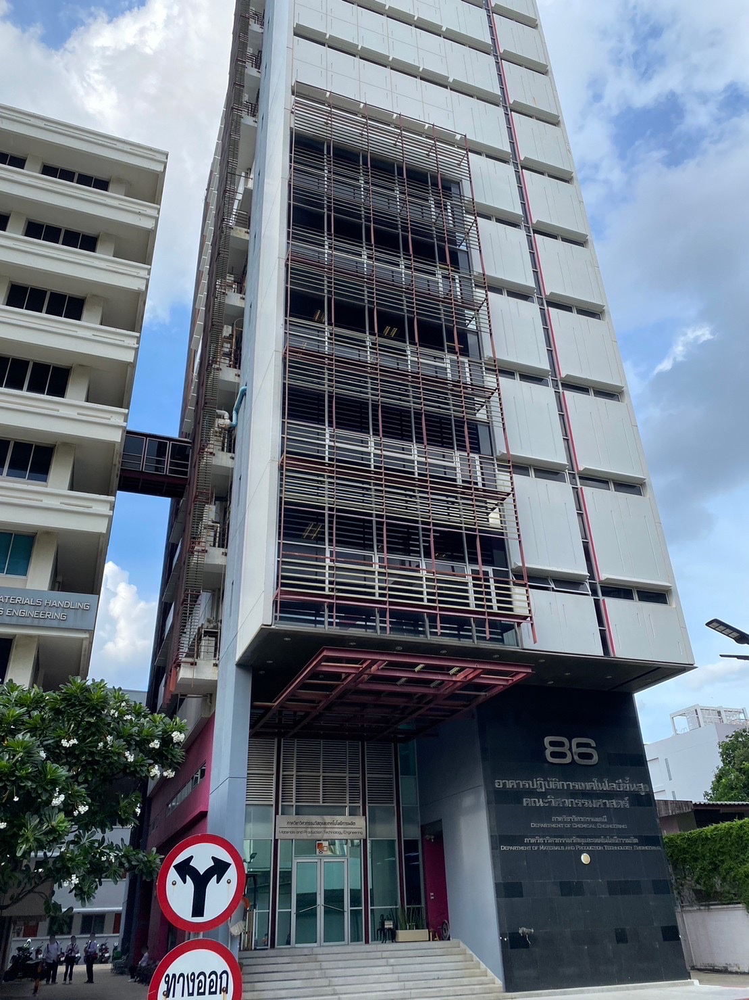
ภายนอกอาคาร 86: แผงบังแดด โครงแดงและฐานอาคารสีเข้ม · ก.ค. 2566 ตามหัวข้อภาพ · Panitta Saengngam / Google Mapsอาคาร 86 เป็นอาคารปฏิบัติการเทคโนโลยีขั้นสูงของคณะวิศวกรรมศาสตร์ ป้ายด้านหน้าระบุภาควิชาวิศวกรรมเคมี และภาควิชาวิศวกรรมวัสดุและเทคโนโลยีการผลิต สารบบคณะระบุสำนักงาน MPTE ชั้น 1 และ CHE ชั้น 13 จึงควรดูเลขห้องหรือประกาศของภาควิชาก่อนติดต่อ
ภาพเห็นส่วนล่างและกลางของรูปด้านหนึ่ง ยอดอาคารถูกตัดออก โมเดลปัจจุบันแสดงอย่างน้อย 13 ชั้นตามสารบบที่ระบุสำนักงานชั้น 13 แต่ภาพตัดยอดอาคารจึงไม่ยืนยันชั้นสูงสุด มิติแผงบังแดด ด้านหลังและหลังคายังประมาณ
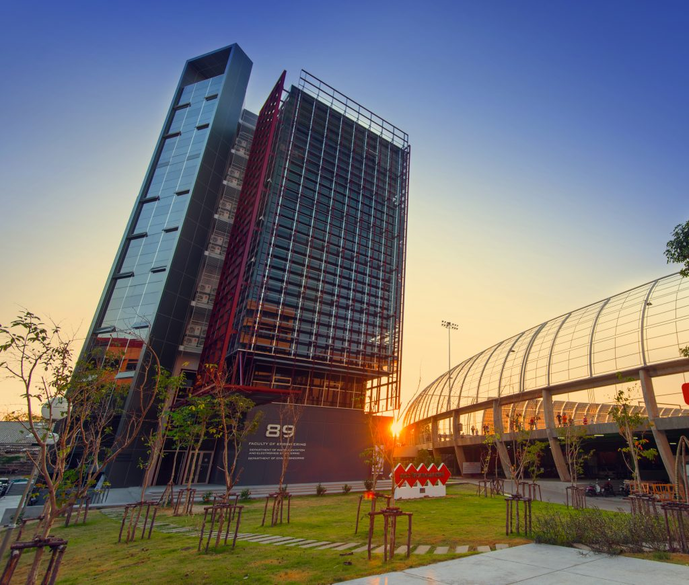
ภายนอกอาคาร 89: หอแนวตั้งและแผงบังแดดโครงแดง · ส.ค. 2567 ตามหัวข้อภาพ · Trinnamet Sungkapat / Google Mapsอาคาร 89 คณะวิศวกรรมศาสตร์ สารบบคณะระบุสำนักงานภาควิชาวิศวกรรมโยธาที่ชั้น 2 และภาควิชาวิศวกรรมเครื่องมือวัดและอิเล็กทรอนิกส์ที่ชั้น 8 ป้ายในภาพด้านหน้าแสดงเลข 89 และชื่อคณะ โดยมีทางเดินเชื่อมอยู่ข้างอาคาร
ปรับรูปด้านแคบหลักจากภาพภายนอกหนึ่งมุม คงผังและข้อมูล 11 ชั้นเดิม จำนวนช่อง ความสูง ระยะยื่นและรูปด้านที่ไม่เห็นยังประมาณ ทางเดินข้างอาคารในภาพใช้เป็นบริบท ไม่ได้อ้างว่าปรับโครงทางเดินทั้งหมดแล้ว
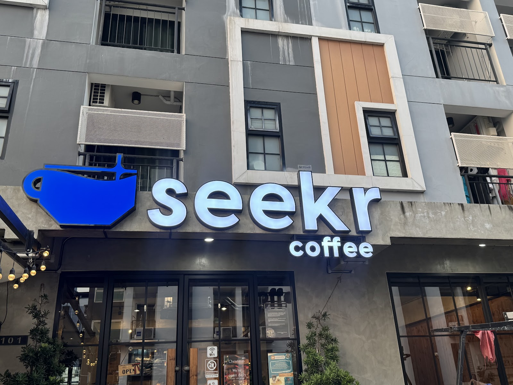
หน้าร้าน Seekr Coffee และรูปด้านอาคารร่วม · ก.พ. 2569 ตามหัวข้อภาพ; ส่วนท้ายระบุ ม.ค. 2569 · Seekr Coffee / Google MapsSeekr Coffee เป็นร้านกาแฟบริเวณ Soul dormitory ที่อยู่ในรายการสถานที่คือ 35/9 ซอยพิบูลสงคราม 22 แยก 11 ตำบลบางเขน นนทบุรี หมายเลขติดต่อที่แสดงคือ 098-652-3714 ภาพจากบัญชีร้านเห็นป้ายแก้วสีน้ำเงิน กรอบประตูกระจกและรูปด้านของอาคารร่วมชัดเจน
ภาพเห็นหน้าร้านและอาคารร่วมเพียงบางชั้น คงข้อมูล 3 ชั้นเดิม แต่ความสูง ช่องระเบียงและหลังคาด้านที่ไม่เห็นยังประมาณ หมุดกับกรอบอาคารเดิมห่างราว 35 ม. จึงไม่ถือเป็นพิกัดสำรวจ ป้ายแก้ววาดรูปทรงใหม่ แยกเดือนตามหัวข้อภาพกับส่วนท้ายไว้เพราะไม่ตรงกัน
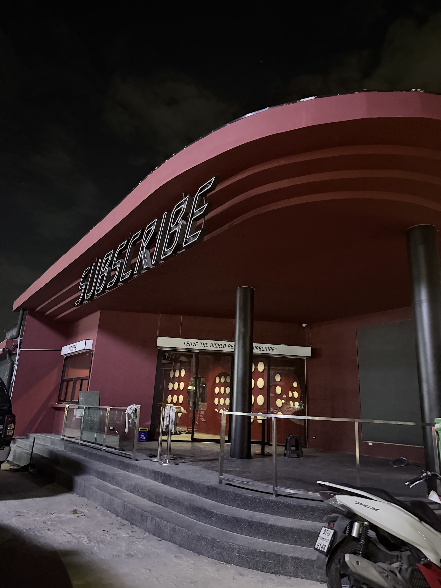
ทางเข้า Subscribe: ชายคาโค้งสีแดงหม่น เสาดำและประตูลายวงกลม · ส.ค. 2569 ตามหัวข้อภาพ · Alice / Google Maps (ภาพประกอบรีวิว)Subscribe Rama7 อยู่ที่ 41/1 ซอยพิบูลสงคราม 22 แยก 24 ตำบลบางเขน นนทบุรี รายการสถานที่จัดเป็นบาร์และระบุหมายเลข 064-669-7478 ภาพทางเข้าที่ตรวจสอบรอบนี้แสดงโครงชายคาโค้งและประตูชัดกว่าภาพเดิม จึงใช้ปรับโมเดลทางเข้าใหม่
ภาพยืนยันเฉพาะโถงทางเข้า ไม่ยืนยันอาคารทั้งหลังหรือสถานะเปิดในวันที่เข้าชม ปรับความสูงที่แสดงประมาณ 5.35 ม. โดยคงข้อมูล D เดิมที่ระบุ 2 ชั้น หมุดกับกรอบเดิมห่างราว 27 ม. ส่วนโถงด้านหลัง ขนาดชายคาและหลังคารวมยังประมาณ รูปตัวอักษรและลายประตูวาดใหม่
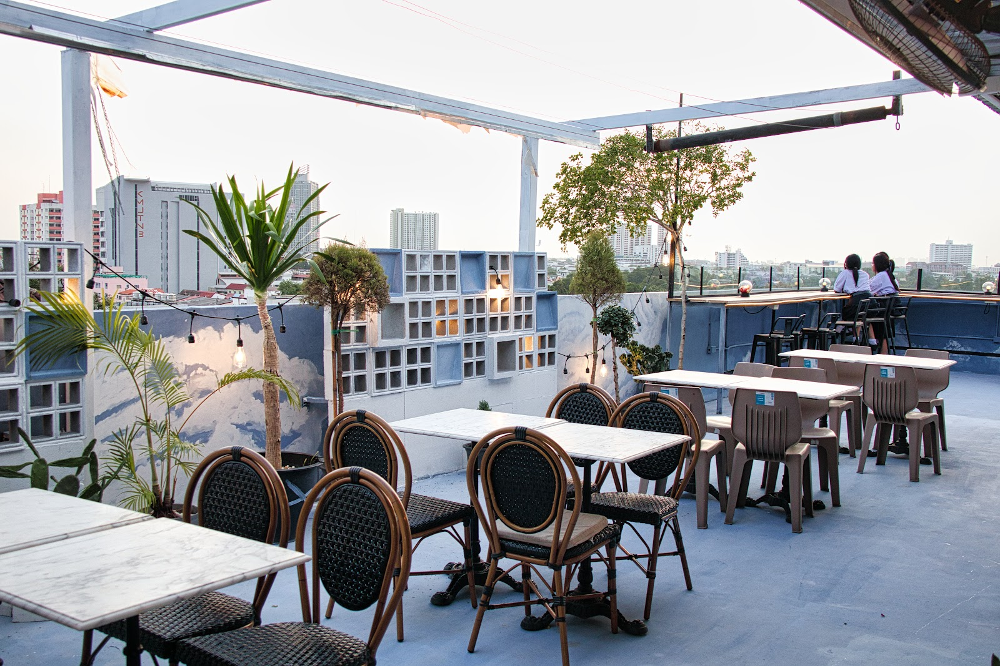
พื้นที่ดาดฟ้า Commu: ผนังช่องลม โต๊ะและเก้าอี้หวาย · มิ.ย. 2568 ตามหัวข้อภาพ · COMMU Rooftop Cafe / Google MapsCommu Rooftop Cafe & Chill ตั้งอยู่ชั้น 9 ของ Grove residences เลขที่ 318/8 ซอยวงศ์สว่าง 11 ตามรายการสถานที่ หมายเลขติดต่อ 083-164-0212 ภาพจากบัญชีร้านแสดงโซนดาดฟ้าเปิดโล่ง มีโต๊ะ เก้าอี้ ผนังช่องลมและพื้นที่มองวิว
เพิ่มเฉพาะโซนดาดฟ้าที่เห็นในภาพ ไม่ใช้ภาพนี้ยืนยันรูปทรงหอพักทั้งหลัง ขนาดพื้นที่และตำแหน่งโซนบนหลังคายังประมาณ วางที่ระดับดาดฟ้าตามอาคารเดิม มุมเทียบแยกเฉพาะส่วนที่เพิ่ม ไม่เพิ่มร่มหรือระเบียงไม้ที่ไม่มีในภาพนี้
v89 · อาคาร 41, 90, เกรทส์เฮ้าส์ และ WASHENJOY
ภาพจริง 5 ภาพ พร้อมขอบเขตการปรับและแหล่งที่มา
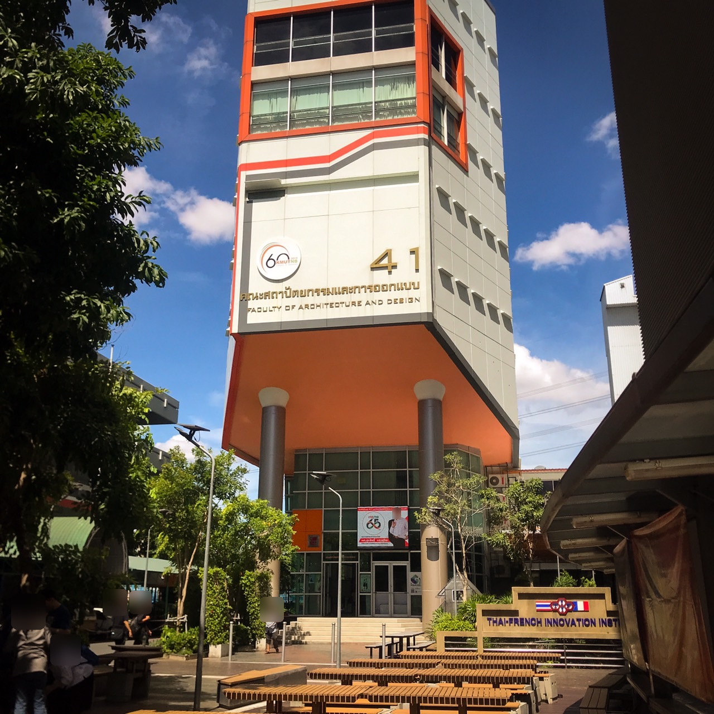
รูปด้านอาคาร 41: โถงลึก เสากลมและส่วนยื่นสีส้ม · ก.ค. 2566 ตามหัวข้อภาพ · PAKIN KORNKRAI / Google Mapsอาคาร 41 เป็นที่ตั้งคณะสถาปัตยกรรมและการออกแบบ มจพ. แหล่งข้อมูลคณะระบุที่อยู่ 1518 ถนนประชาราษฎร์ 1 แขวงวงศ์สว่าง เขตบางซื่อ กรุงเทพฯ รายละเอียดห้องให้ตรวจสอบจากสารบบและประกาศของคณะก่อนติดต่อ
ภาพตัดส่วนบนออก ปรับเฉพาะลักษณะรูปด้านที่เห็น คงผังและจำนวนชั้นที่แสดงเดิม (โมเดล 9 ชั้น) แนวหันของรูปด้าน มิติส่วนยื่น หลังคาและรูปด้านที่ไม่เห็นยังประมาณ ไม่ใช้ป้ายสถาบันไทย-ฝรั่งเศสของอาคารข้างเคียงเป็นชื่ออาคารนี้
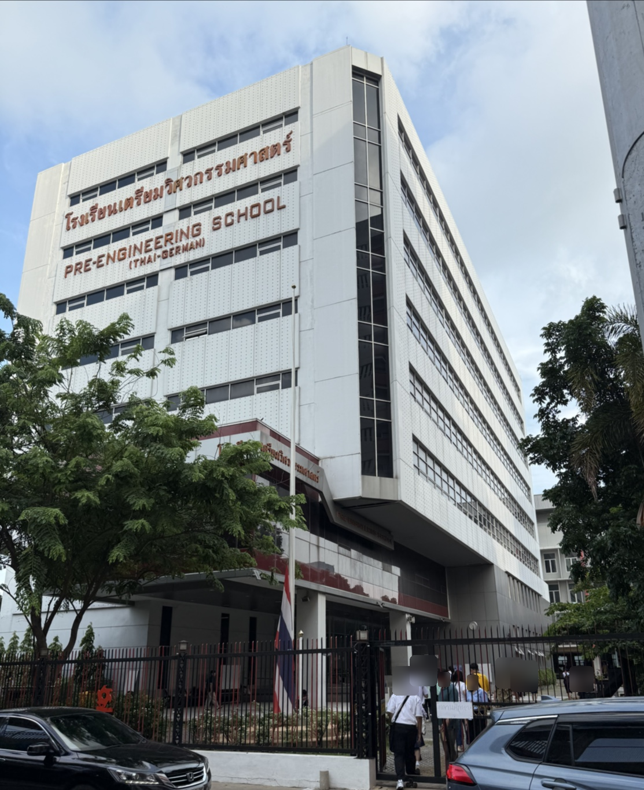
อาคาร 90: แผงขาว ช่องกระจกยาวและชื่อโรงเรียน · ก.ย. 2569 ตามหัวข้อภาพ · pako Jan / Google Mapsอาคาร 90 เป็นที่ตั้งโรงเรียนเตรียมวิศวกรรมศาสตร์ ไทย-เยอรมัน สังกัดวิทยาลัยเทคโนโลยีอุตสาหกรรม มจพ. หลักสูตรระดับประกาศนียบัตรวิชาชีพมีสายเครื่องกล ไฟฟ้าและอิเล็กทรอนิกส์ และโยธา ควรตรวจสอบหลักสูตรและการรับสมัครจากวิทยาลัยโดยตรง
คงผังและจำนวนชั้นที่แสดงเดิม ปรับรูปด้านหลักและช่องกระจกจากภาพมุมเดียว จำนวนช่อง มิติ หลังคาด้านบนและรูปด้านที่ภาพไม่เห็นยังประมาณ
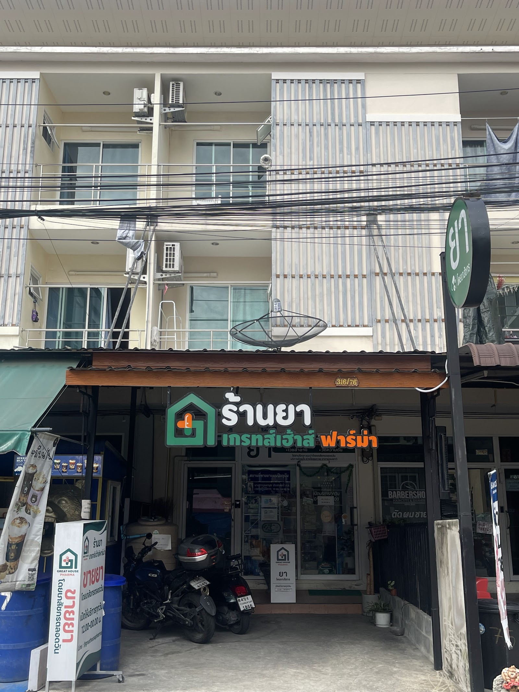
หน้าร้านยาเกรทส์เฮ้าส์และสองชั้นพักอาศัยที่มองเห็น · หัวข้อ พ.ย. 2567; ส่วนท้าย มิ.ย. 2567 ไม่ยืนยันเดือนถ่าย · ร้านยาเกรทส์เฮ้าส์ฟาร์ม่า / Google Mapsร้านยาเกรทส์เฮ้าส์ฟาร์ม่า (GreatHouse Pharma) อยู่ที่ 316/76 ซอยวงศ์สว่าง 11 เขตบางซื่อ กรุงเทพฯ 10800 รายการสถานที่จัดหมวดร้านขายยา ภาพจากบัญชีร้านแสดงหน้าร้านชั้นล่างของอาคารพักอาศัยร่วม
ภาพยืนยันหน้าร้านและสองชั้นบนที่เห็นเท่านั้น แสดงความสูงประมาณ 9.35 ม. โดยคงข้อมูลผัง D เดิม 2 ชั้น ไม่ยืนยันจำนวนชั้นทั้งหลัง ด้านหลัง หลังคารวม มิติและตำแหน่งเดิมยังประมาณ ป้ายวาดขึ้นใหม่ตามรูปทรงที่เห็น
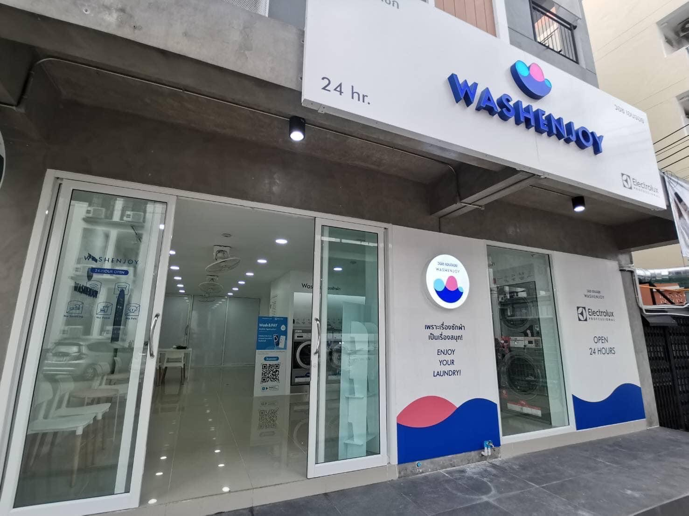
หน้าร้าน WASHENJOY: ป้ายยื่น ประตูกระจกและลายคลื่น · ม.ค. 2566 ตามหัวข้อภาพ · Jiraglit Nonchayagorn / Google Maps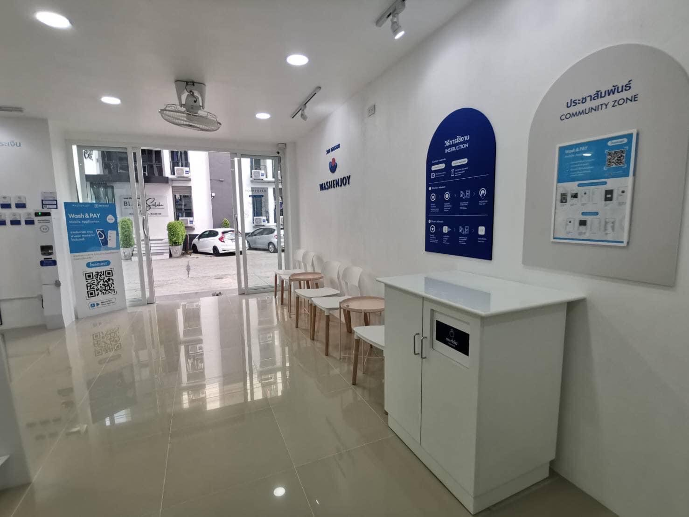
ภายใน WASHENJOY: เครื่องซักผ้าและพื้นที่นั่งรอ · ม.ค. 2566 ตามหัวข้อภาพ · Jiraglit Nonchayagorn / Google MapsWASHENJOY เป็นร้านสะดวกซักที่รายการสถานที่ระบุเลขที่ 35/9 ซอยพิบูลสงคราม 22 แยก 11 ตำบลบางเขน นนทบุรี 11000 ภาพภายนอกและภายในแสดงเครื่องซักผ้าฝาหน้า ตู้บริการและที่นั่งรอ ข้อความ 24 ชั่วโมงปรากฏในภาพปี 2566 จึงไม่ใช้ยืนยันเวลาเปิดปัจจุบัน
ภาพยืนยันหน้าร้านชั้นล่างและบางส่วนภายใน คงตำแหน่งและข้อมูล 3 ชั้นเดิม ขยายหน้าร้านที่แสดงเป็น 6.4 ม. โดยประมาณเพื่อสัดส่วนภาพ ไม่แก้ข้อมูล D รูปด้านชั้นบน หลังคา มิติและตำแหน่งเครื่องภายในยังประมาณ
v90 · TGGS ทางเข้าหอสมุด Otteri Grove และ Room 34
ภาพจริง 4 ภาพ พร้อมแหล่งที่มาและขอบเขตที่ภาพยืนยัน
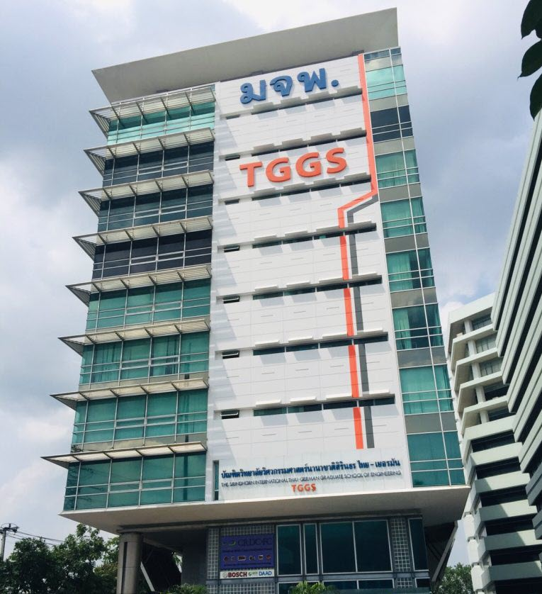
TGGS: กระจกเขียว แผงชื่อกลาง แถบแดงและชั้นบังแดดยื่น · หน้าแหล่งภาพไม่ระบุวันถ่าย · กองคลัง สำนักงานอธิการบดี มจพ.อาคาร TGGS อยู่ด้านซ้ายเมื่อเข้าประตูหลัก มจพ. หน้าแนะนำการเดินทางระบุอาคาร 10 ชั้น คู่มือนักศึกษา TGGS ปี 2025 ระบุชั้น 1 บริการการเงิน ชั้น 2 งานทะเบียน และชั้น 3–10 พื้นที่ TGGS รายละเอียดห้องให้ดูข้อมูลติดต่อของหน่วยงาน
ปรับรูปด้านหลักตามภาพกองคลัง คงผังและ 10 ชั้นเดิม รูปด้านข้าง ความลึก ชั้นบังแดดและหลังคาที่ยืนยันไม่ได้ครบยังประมาณ ป้ายวาดใหม่จากข้อความในภาพ ไม่ใช้ภาพนี้เป็นแบบรังวัด
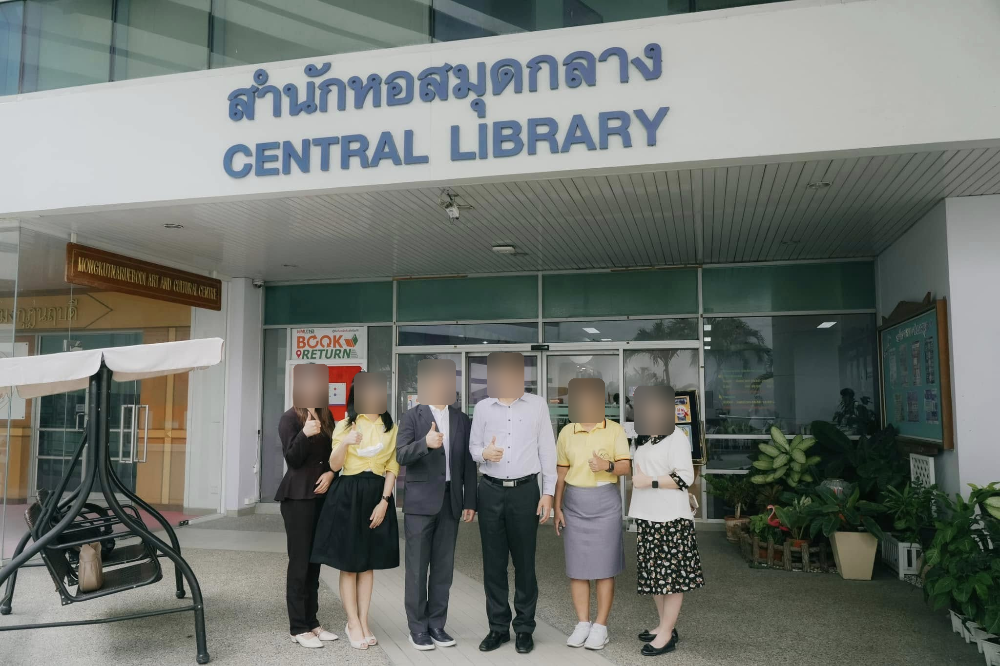
ทางเข้าสำนักหอสมุดกลาง: ป้ายสองภาษา โถงกระจกและตู้คืนหนังสือ · กิจกรรมวันที่ 22 ม.ค. 2567 ตามข่าวต้นทาง · สำนักหอสมุดกลาง มจพ.สำนักหอสมุดกลางให้บริการค้นทรัพยากร ฐานข้อมูลออนไลน์ ยืมต่อและจองหนังสือ รวมถึงจองห้องติวเตอร์ หมายเลขที่เว็บไซต์ระบุคือ 0-2555-2000 ต่อ 2147 และอีเมล info@lib.kmutnb.ac.th ภาพนี้มาจากข่าวต้อนรับคณะเยี่ยมชมวันที่ 22 มกราคม 2567
เพิ่มเฉพาะรายละเอียดทางเข้าที่เห็นในภาพ ใช้รหัสอาคาร 23 ตามแมพเดิม ไม่ใช้เลขอาคารต่างระบบในหน้าเก่ามาเปลี่ยนตำแหน่ง ตัวอาคารและชั้นบนเดิมคงอยู่ ตำแหน่งโถง ความกว้าง ระดับพื้นและส่วนหลังคาที่ไม่เห็นยังประมาณ
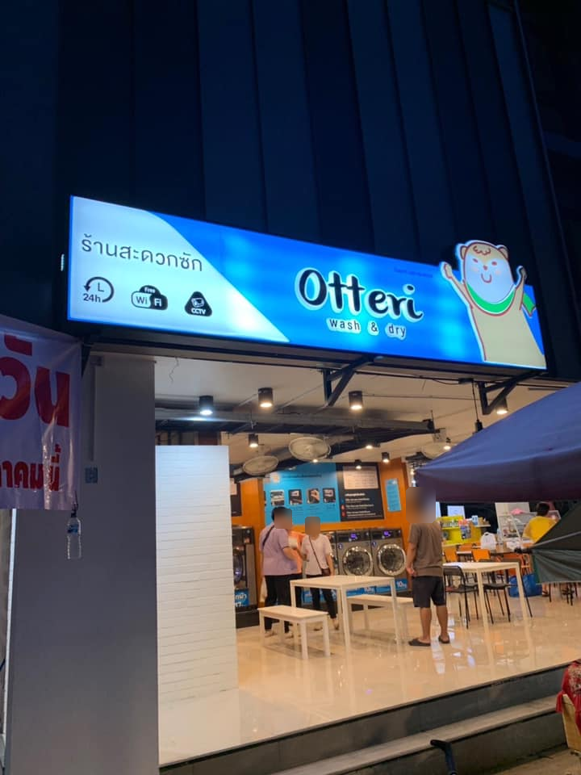
Otteri สาขา Grove Residence: ป้ายฟ้าและช่องร้านเปิด · พ.ค. 2562 ตามหัวข้อและส่วนท้ายภาพ · Otteri Wash and Dry / Google MapsOtteri Wash and Dry สาขานี้อยู่ใต้หอพัก Grove Residence เลขที่ 318/8 ซอยวงศ์สว่าง 11 เขตบางซื่อ กรุงเทพฯ รายการสถานที่ระบุโทรศัพท์ 081-949-3597 และเพจ OtteriKmutnb ภาพเห็นพื้นที่ซักอบ โต๊ะพับผ้าและเครื่องฝาหน้า ร้านอยู่ในอาคารร่วมเดียวกับจุด Grove และ Commu บนแมพ
ภาพปี 2562 ใช้ยืนยันลักษณะที่เห็นในเวลานั้น ไม่รับรองหน้าร้านปัจจุบัน เพิ่มเฉพาะโซนร้านชั้นล่างโดยคงอาคาร Grove และดาดฟ้า Commu เดิม ความกว้าง 8 ม. ความลึก 4 ม. และตำแหน่งบนรูปด้านประมาณ จำนวนเครื่องและโต๊ะเป็นตัวแทนภาพ ไม่ใช่ผังติดตั้งจริง
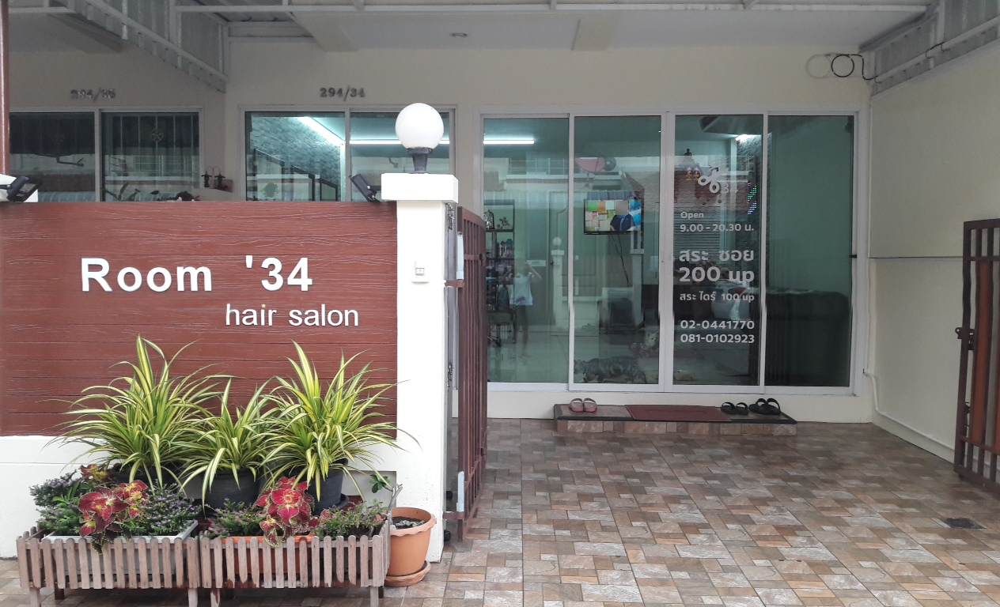
Room '34 hair salon: ป้ายไม้หน้าสวนและลานกระเบื้อง · เม.ย. 2560 ตามหัวข้อและส่วนท้ายภาพ · Chailai Borivat / Google MapsRoom 34 hair salon เป็นร้านทำผมที่รายการสถานที่ระบุเลขที่ 294/34 หมู่บ้านสิรินพาร์ค 2 ซอยวงศ์สว่าง 11 กรุงเทพฯ 10800 โทรศัพท์ 081-010-2923 ภาพหน้าร้านเห็นป้าย Room ’34 hair salon บนรั้วไม้และประตูกระจกที่ถอยเข้าไปหลังลานหน้าร้าน
ภาพปี 2560 ไม่ยืนยันการตกแต่งปัจจุบัน ใช้ปรับโซนหน้าร้านกว้างประมาณ 6.8 ม. บนกรอบอาคารร่วมเดิม ไม่เปลี่ยนอาคารทั้งหลังให้เป็นร้านเดียว ป้ายราคาและเวลาในภาพเก่าไม่นำมาใช้เป็นข้อมูลปัจจุบัน ชั้นบนและหลังคารวมยังไม่มีภาพยืนยัน
v91 · ในมหาวิทยาลัย: TFII 43 วิทยาลัยนานาชาติ 95 และ Techno Park 99
รูปจริงเพิ่ม 4 ภาพ พร้อมขอบเขตและเครดิตต้นทาง
อาคาร 43: ช่องหน้าต่างแถบแดง กระจกแนวตั้งและป้าย TFII · หัวข้อ พ.ย. 2567; ส่วนท้าย ต.ค. 2567 ไม่ยืนยันเดือนถ่าย · Karl Tombre / Google Mapsรูปด้านสูงอาคาร TFII และโถงทางเข้าในภาพเว็บไซต์หน่วยงาน · ไฟล์อยู่ในโฟลเดอร์อัปโหลด มี.ค. 2569; ไม่ระบุวันถ่าย · TFII มจพ.สถาบันนวัตกรรมเทคโนโลยีไทย-ฝรั่งเศส (TFII) ใช้อาคาร 43 ตามสารบบมหาวิทยาลัย เป็นหน่วยงานด้านนวัตกรรมและบริการเทคโนโลยี รายการสถานที่ระบุเว็บไซต์ tfii.kmutnb.ac.th และโทรศัพท์กลาง 0-2555-2000 ต่อ 2501 ตรวจสอบรายละเอียดบริการและห้องก่อนติดต่อหน่วยงาน
ภาพ Google Maps ตัดส่วนบน จึงเสริมภาพรูปด้านสูงจากเว็บไซต์ TFII คงผังและจำนวนชั้นที่โมเดลเดิมแสดง (9 ชั้น เป็นค่าประมาณ) ไม่ใช้เลข 42 ของอาคารข้างเคียงเป็นเลขอาคารนี้ รูปด้านหลัง หลังคาเต็มหลัง แนวหันและขนาดกันสาดยังประมาณ เดือนของภาพในหัวข้อกับส่วนท้ายไม่ตรงกันจึงแสดงทั้งสองค่า
อาคาร 95: กรอบทางเข้าโค้งสีเข้ม ป้ายวิทยาลัยนานาชาติและผิวแผงขาว · ข่าวเยี่ยมชมวันที่ 6 ธ.ค. 2565; ไม่ยืนยันวันถ่ายแยกของรูปอาคาร · TGGS มจพ.วิทยาลัยนานาชาติ มจพ. ใช้อาคาร 95 เว็บไซต์วิทยาลัยมีข้อมูลหลักสูตรด้านการค้าระหว่างประเทศและธุรกิจโลจิสติกส์ รวมถึงการจัดการธุรกิจและบริการการบินในยุคดิจิทัล พร้อมข้อมูลการรับสมัครและความร่วมมือหลักสูตรสองปริญญา ให้ตรวจรายละเอียดหลักสูตรปัจจุบันจากวิทยาลัยโดยตรง
ภาพมองเงยและตัดยอดอาคาร ปรับกรอบทางเข้ากับรูปด้านที่เห็น คงผังและ 4 ชั้นเดิม รัศมีโค้ง ความลึกและความสูงแผงรวมยังประมาณ ส่วนหลังคาด้านบนและรูปด้านที่ไม่เห็นยังไม่มีภาพยืนยัน
Techno Park 99: ผนังเฉียง กระจกสูง ช่องหน้าต่างแนวนอนและบันไดหน้า · หน้าโครงการระบุเริ่ม 2565 กำหนดเสร็จ 2566; ไม่ระบุวันถ่ายภาพ · KPY Development — ผลงานอาคารอุทยานเทคโนโลยี มจพ.Techno Park: ทางเข้าเว้าลึกใต้กันสาดสีส้ม · ภาพประกอบข่าวในเว็บไซต์ทางการ; ชื่อไฟล์ลงวันที่ 8 มิ.ย. 2567 ไม่ใช้แทนวันถ่ายที่ยืนยัน · อุทยานเทคโนโลยี มจพ.รุ่น147เพิ่มเพดานแผงสีส้มและไฟเส้นสองดวงที่มองเห็นในภาพทางเข้าเดิม ไม่ยืนยันสถานะเปิดใช้ไฟปัจจุบัน ความกว้าง ความลึก ระยะไฟและรอยต่อแผงยังประมาณ คงบันได ราว พิกัด ถนน ทางเดินและต้นไม้เดิม ไม่อนุมานภายในที่ภาพไม่เห็น
อุทยานเทคโนโลยี มจพ. (KMUTNB Techno Park) มีงานบริการวิชาการ ฝึกอบรม งานทรัพย์สินทางปัญญา และการประสานสหกิจศึกษา/การศึกษาเชิงบูรณาการกับการทำงาน (CWIE) หน้าโครงการของผู้ก่อสร้างระบุอาคาร 10 ชั้นพร้อมที่จอดรถใต้ดิน 1 ชั้น ใช้ประกอบรูปด้าน ไม่ถือเป็นผังหน่วยงานแยกชั้น
คงผังและ 10 ชั้นเดิม ปรับรูปด้านหลักกับทางเข้าจากภาพภายนอกสองมุม เส้นเฉียง ความกว้างกระจกและมิติชิ้นส่วนยังประมาณ ภาพแรกตัดยอดบางส่วน หลังคาและรูปด้านที่ไม่เห็นจึงไม่ยืนยันครบ
v92 · อาคาร 40 ปี วิทยาศาสตร์ประยุกต์ และทางเข้าอาคาร 96
รูปจริงเพิ่ม 3 ภาพ พร้อมขอบเขตและเครดิตต้นทาง
อาคาร 96: ป้ายคณะ กรอบกระจกและซุ้มระแนงสีขาว · 2 ก.ค. 2563 ตามข้อมูลไฟล์ · Poonpun2016 / Wikimedia Commons · CC BY-SA 4.0คณะพัฒนาธุรกิจและอุตสาหกรรม มจพ. ใช้อาคาร 96 จัดการศึกษาด้านบริหารธุรกิจและการพัฒนาอุตสาหกรรม เว็บไซต์คณะระบุหมายเลขติดต่อ 0-2555-2000 ต่อ 3808 และ info@bid.kmutnb.ac.th รายละเอียดหลักสูตรและงานติดต่อให้ตรวจสอบจากคณะโดยตรง
เพิ่มรูปด้านส่วนบนและกระจกเข้ามุมจากภาพที่เห็นเลข96ชัดเจน คงผังเดิมและ7ชั้นที่แสดงในแมพ รวมโถง ป้าย บันไดและซุ้มระแนงเดิมจากภาพ2ก.ค.2563 จำนวนช่อง แผงยื่น ระยะลึก ความสูงและด้านที่ไม่เห็นยังประมาณ ภาพใหม่ไม่ระบุวันถ่าย จึงไม่ใช้เรียงเวลากับภาพเดิมหรือรับรองสภาพล่าสุด หลังคาดาดฟ้าส่วนที่ไม่ปรากฏยังไม่ยืนยัน ไม่ใช้ภาพนี้ยืนยันผังห้องแต่ละชั้น
อาคาร 40 ปี: ระเบียงลึก ครีบส้ม ฐานอาคารและแถวปาล์ม · ก.ค. 2566 ตามหัวข้อและส่วนท้ายภาพ · EKKALAK SAMRUENG / Google Mapsภาพลานสวนปาล์มอีกทิศจากข่าวกองกิจการนักศึกษา24มิ.ย.2569 เห็นลำต้นส่วนล่างทาสีขาวและมีแถบเข้ม จึงเพิ่มลักษณะสีบนต้นปาล์มเดิมของโมเดลเท่านั้น จำนวน ตำแหน่ง ความสูงและสัดส่วนแถบสียังประมาณ ไม่ใช่ทะเบียนต้นไม้หรือการสำรวจ ไม่เปลี่ยนผังพื้น ถนน ทางเดินและเฟอร์นิเจอร์ ภาพสีลำต้น · กองกิจการนักศึกษา
ดูสีลำต้นปาล์มในโมเดล →
อาคาร 40 ปี มจพ. หรืออาคาร 77 เป็นอาคารบริการและกิจกรรมนักศึกษา มีโรงอาหารกลางและพื้นที่กีฬา ข้อมูลรายชั้นที่มีหลักฐานอยู่ในสารบบด้านล่าง ภาพเดือนกรกฎาคม 2566 เห็นธนาคารกรุงเทพที่ฐานอาคาร ใช้เป็นจุดสังเกตจากภาพ ไม่รับรองสถานะบริการธนาคารในปัจจุบัน
ปรับรูปด้านหลักจากภาพหนึ่งมุม คงผังและ 11 ชั้นที่แสดงเดิม ภาพไม่ได้ยืนยันการใช้ทุกชั้นหรือผังสนามกีฬา การจัดชั้นภายในยังอ้างสารบบเดิม ไม่สรุปจากช่องระเบียง ขนาดระเบียง ผิวหลังคา รูปด้านที่ไม่เห็นและตำแหน่งต้นไม้ยังประมาณ
อาคาร 78: กริดบังแดด ครีบส้มเหลืองและป้ายหินแดงหน้าทางเข้า · ธ.ค. 2565 ตามหัวข้อและส่วนท้ายภาพ · Om Singlelady / Google Mapsคณะวิทยาศาสตร์ประยุกต์ มจพ. ใช้กลุ่มอาคารวิทยาศาสตร์ซึ่งแมพนี้แยกอาคาร 78 เป็นโซน A และ B ภาพนี้เห็นรูปด้านป้ายเลข 78 กับชื่อคณะชัดเจน จึงใช้ปรับฝั่งทางเข้าโซน A ข้อมูลภาควิชาและห้องที่มีแหล่งยืนยันแสดงในสารบบด้านล่าง ติดต่อข้อมูลปัจจุบันผ่านเว็บไซต์คณะ
ภาพหน้าคณะระบุเลข 78 ไม่แยกชื่อโซน A/B จึงผูกกับทางเข้าฝั่ง A ตามแผนที่เดิมและยังไม่ใช้ยืนยันโซน B คงผังและจำนวนชั้นเดิม จำนวนครีบและเครื่องปรับอากาศเป็นตัวแทนภาพ มิติ ส่วนหลังคาที่ภาพไม่เห็นและรูปด้านข้างยังประมาณ
v93 · โถงกระจกทางเข้าอาคาร 44
รูปจริงเพิ่ม 1 ภาพ พร้อมขอบเขตและเครดิตต้นทาง
อาคาร 44: โถงกระจกมุมตัด กรอบเงิน ป้ายเลข 44 และเสาขาวภายใน · เบลอใบหน้าในภาพจัดแสดงเพื่อความเป็นส่วนตัว · ธ.ค. 2563 ตามหัวข้อและส่วนท้ายภาพ · KITAENG / Google Mapsอาคารปฏิบัติการและประลองรวม (อาคาร 44) อยู่ในความดูแลของคณะครุศาสตร์อุตสาหกรรม มีพื้นที่เรียนและปฏิบัติการ สำนักงานอาคารสถานที่ระบุรับผิดชอบอาคาร 44 และ 52 และมีห้องประชุมใหญ่ชั้น 8 รายละเอียดห้องและผังที่มีหลักฐานแสดงในสารบบเดิมด้านล่าง
ภาพ ธ.ค. 2563 ยืนยันเฉพาะโถงกระจกและป้ายอาคาร 44 จึงเพิ่มเฉพาะทางเข้าที่เห็น ไม่ใช้ภาพนี้ยืนยันรูปด้านเต็มอาคารหรือหลังคา คงอาคารชั้นบนเดิมและข้อมูลชั้นจากผังเดิม มิติ ตำแหน่งโถงและความลึกในโมเดลยังประมาณ
v94 · อเนกประสงค์และสำนักงานอธิการบดี
รูปจริงเพิ่ม 2 ไฟล์ ใช้ประกอบสองจุด พร้อมขอบเขตและเครดิตต้นทาง
สำนักงานอธิการบดี: แถบขาวดำ หอนาฬิกา และโถงกระจกข้างกัน · ก.พ. 2567 ตามส่วนท้ายภาพ; หัวข้อระบุ มี.ค. 2567 · POMSAN AI Daily / Google Mapsโถงในกลุ่มอาคารอเนกประสงค์ด้านหน้ามหาวิทยาลัย ภาพเห็นผนังกระจกมืดและกรอบขาวขนาดใหญ่พร้อมแนวสีแดงเทา หน้าเว็บมหาวิทยาลัยกล่าวถึงหอประชุมประดู่แดงโดยใช้เลข 24 ซึ่งต่างจากเลขที่ได้รับในแมพนี้ รายละเอียดภายในจึงคงข้อจำกัดการเทียบเลขอาคาร
ภาพแสดงกลุ่มอาคารสำนักงานอธิการบดีและโถงข้างกัน แมพใช้เลข 21/22 แต่หน้าเว็บมหาวิทยาลัยใช้ 24/25 จึงคงเลขแมพเดิมและไม่ย้ายผังห้องข้ามเลขโดยอัตโนมัติ มิติ ตำแหน่งองค์ประกอบ หลังคาที่มองไม่เห็นและรูปด้านอื่นยังประมาณ ภาพเป็นหลักฐานสภาพในปี 2567 ไม่ใช่การรับรองบริการปัจจุบัน
สำนักงานอธิการบดี: แถบขาวดำ หอนาฬิกา และโถงกระจกข้างกัน · ก.พ. 2567 ตามส่วนท้ายภาพ; หัวข้อระบุ มี.ค. 2567 · POMSAN AI Daily / Google Mapsภาพภายใน: ป้ายสำนักงาน ICIT ไม่ใช่รูปด้านนอกอาคาร · ไฟล์อัปโหลด พ.ค. 2559 · ไม่ระบุวันถ่าย · สำนักคอมพิวเตอร์และเทคโนโลยีสารสนเทศ มจพ.กลุ่มอาคารอเนกประสงค์เป็นที่ตั้งสำนักงานอธิการบดีและหน่วยงานบริการหลายส่วน เว็บไซต์ ICIT ระบุพื้นที่บริการกรุงเทพฯ ที่ชั้น 3, 4 และ 5 และติดต่อ 0-2555-2000 ต่อ 2205 เว็บไซต์มหาวิทยาลัยใช้เลข 25 สำหรับอาคารอเนกประสงค์ ส่วนแมพที่ได้รับใช้เลข 22 จึงแสดงความต่างนี้ไว้ก่อนนำทางห้องรายชั้น
ภาพแสดงกลุ่มอาคารสำนักงานอธิการบดีและโถงข้างกัน แมพใช้เลข 21/22 แต่หน้าเว็บมหาวิทยาลัยใช้ 24/25 จึงคงเลขแมพเดิมและไม่ย้ายผังห้องข้ามเลขโดยอัตโนมัติ มิติ ตำแหน่งองค์ประกอบ หลังคาที่มองไม่เห็นและรูปด้านอื่นยังประมาณ ภาพเป็นหลักฐานสภาพในปี 2567 ไม่ใช่การรับรองบริการปัจจุบัน คงจำนวนชั้นและหอนาฬิกาเดิม ปรับรายละเอียดขีดนาฬิกาและฐานทางเข้า ภาพ ICIT เป็นภาพภายในเท่านั้น
v95 · ลักษณะร่วมของกลุ่มหอพักนักศึกษา
รูปจริงเพิ่ม 3 ไฟล์ พร้อมข้อจำกัดการแยกตึก พร้อมขอบเขตและเครดิตต้นทาง
กลุ่มหอพักกรุงเทพฯ: ระเบียงส้ม เสาขาว กันสาดโครงสามเหลี่ยมและบันได · ส่วนท้ายภาพ ม.ค.2555; หัวข้ออัปโหลด เม.ย.2561 · หอพักนักศึกษา มจพ. กรุงเทพฯ / Google Mapsป้ายศูนย์ที่พักเพื่อการเรียนรู้และสันทนาการ ไม่ได้ยืนยันว่าเป็นทางเข้าตึกชายหรือหญิง · ส่วนท้ายภาพ มี.ค.2559; หัวข้ออัปโหลด เม.ย.2561 · หอพักนักศึกษา มจพ. กรุงเทพฯ / Google Mapsภาพภายใน: ห้องพักและเตียงสองชั้นจากเว็บหอพัก ไม่ใช้ยืนยันรูปด้านนอก · ไม่ระบุวันถ่ายหรือวันเผยแพร่ · ศูนย์ที่พักเพื่อการเรียนรู้และสันทนาการ มจพ. กรุงเทพฯศูนย์ที่พักเพื่อการเรียนรู้และสันทนาการ หรือหอพักนักศึกษา มจพ. กรุงเทพฯ ให้บริการที่พักและพื้นที่ส่วนกลาง เว็บไซต์ทางการระบุรองรับผู้พักรวม 960 คน และแสดงบริการซ่อมบำรุง ร้านสะดวกซื้อ ห้องพยาบาล ซักผ้า ลิฟต์ กล้องวงจรปิดและรักษาความปลอดภัย รายละเอียดการสมัครและการให้บริการปัจจุบันให้ตรวจเว็บหอพัก ภาพที่เพิ่มเป็นภาพระดับกลุ่มอาคาร ยังไม่ระบุเลขตึกชาย/หญิงโดยตรง
ใช้ภาพกลุ่มหอพักปรับองค์ประกอบร่วมของเลขแมพ92/93 ไม่อ้างว่าภาพระเบียง ป้ายศูนย์และห้องพักเป็นตึกชายหรือหญิงโดยเฉพาะ ภาพเก่าระบุเวลาถ่ายกับอัปโหลดต่างกัน คงผังและ13ชั้นเดิม ไม่ใช้ภาพนี้ยืนยันจำนวนชั้นทั้งหมด หลังคาที่ไม่เห็น รูปด้านอื่น มิติและตำแหน่งกันสาดยังประมาณ ป้ายศูนย์เพิ่มเป็นรูปประกอบ ไม่ใส่ซ้ำบนทุกตึกโดยไม่มีหลักฐานตำแหน่ง
กลุ่มหอพักกรุงเทพฯ: ระเบียงส้ม เสาขาว กันสาดโครงสามเหลี่ยมและบันได · ส่วนท้ายภาพ ม.ค.2555; หัวข้ออัปโหลด เม.ย.2561 · หอพักนักศึกษา มจพ. กรุงเทพฯ / Google Mapsป้ายศูนย์ที่พักเพื่อการเรียนรู้และสันทนาการ ไม่ได้ยืนยันว่าเป็นทางเข้าตึกชายหรือหญิง · ส่วนท้ายภาพ มี.ค.2559; หัวข้ออัปโหลด เม.ย.2561 · หอพักนักศึกษา มจพ. กรุงเทพฯ / Google Mapsภาพภายใน: ห้องพักและเตียงสองชั้นจากเว็บหอพัก ไม่ใช้ยืนยันรูปด้านนอก · ไม่ระบุวันถ่ายหรือวันเผยแพร่ · ศูนย์ที่พักเพื่อการเรียนรู้และสันทนาการ มจพ. กรุงเทพฯศูนย์ที่พักเพื่อการเรียนรู้และสันทนาการ หรือหอพักนักศึกษา มจพ. กรุงเทพฯ ให้บริการที่พักและพื้นที่ส่วนกลาง เว็บไซต์ทางการระบุรองรับผู้พักรวม 960 คน และแสดงบริการซ่อมบำรุง ร้านสะดวกซื้อ ห้องพยาบาล ซักผ้า ลิฟต์ กล้องวงจรปิดและรักษาความปลอดภัย รายละเอียดการสมัครและการให้บริการปัจจุบันให้ตรวจเว็บหอพัก ภาพที่เพิ่มเป็นภาพระดับกลุ่มอาคาร ยังไม่ระบุเลขตึกชาย/หญิงโดยตรง
ใช้ภาพกลุ่มหอพักปรับองค์ประกอบร่วมของเลขแมพ92/93 ไม่อ้างว่าภาพระเบียง ป้ายศูนย์และห้องพักเป็นตึกชายหรือหญิงโดยเฉพาะ ภาพเก่าระบุเวลาถ่ายกับอัปโหลดต่างกัน คงผังและ13ชั้นเดิม ไม่ใช้ภาพนี้ยืนยันจำนวนชั้นทั้งหมด หลังคาที่ไม่เห็น รูปด้านอื่น มิติและตำแหน่งกันสาดยังประมาณ ป้ายศูนย์เพิ่มเป็นรูปประกอบ ไม่ใส่ซ้ำบนทุกตึกโดยไม่มีหลักฐานตำแหน่ง
v96 · อาคาร63และข้อมูลFINN Spaceใต้อาคาร79
รูปจริงเพิ่ม 3 ไฟล์ พร้อมขอบเขตและเครดิตต้นทาง
ภาพอาคาร63จากเว็บผู้ออกแบบ: ครีบโค้ง บังแดดระแนง กระจกเขียวและป้ายวิทยาลัย · หน้าโครงการไม่ระบุวันถ่ายหรือวันเผยแพร่ · Geodesic Designภาพภายใน: ทางเข้าพื้นที่ Pi-Room ชั้น3 อาคาร63 ไม่ใช่รูปด้านนอก · ข่าวเปิดบริการ มิ.ย.2565 · ไม่ระบุวันถ่าย · วิทยาลัยเทคโนโลยีอุตสาหกรรม มจพ.อาคาร63 วิทยาลัยเทคโนโลยีอุตสาหกรรม มีพื้นที่เรียน หน่วยงานและพื้นที่เรียนรู้ร่วมกัน ข่าววิทยาลัยระบุ Pi-Room ที่ชั้น3 เริ่มเปิด13มิถุนายน2565 และหน้าแนะนำหลักสูตรอิเล็กทรอนิกส์ระบุภาควิชาที่ชั้น4 รายละเอียดห้องและหน่วยงานอื่นให้ตรวจสารบบและประกาศปัจจุบัน
ปรับเฉพาะโถงกระจกทางเข้าที่เว็บผู้ออกแบบระบุอาคาร63 คงปีกอาคาร ผังและ5ชั้นเดิม ภาพไม่ยืนยันหลังคาทั้งหลัง จำนวนชั้นของปีกอื่น มิติและรูปด้านที่ไม่เห็น ตำแหน่งโถงและรายละเอียดครีบยังประมาณ ภาพ Pi-Room เป็นภาพภายในชั้น3 ไม่ใช้ยืนยันผิวอาคารภายนอก
ภาพภายใน: โต๊ะทำงานร่วมกันและโคมไฟ FINN Space ใต้อาคาร79 ไม่ใช่รูปด้านนอก · ไฟล์อัปโหลด ก.พ.2564 · ไม่ระบุวันถ่าย · สำนักคอมพิวเตอร์และเทคโนโลยีสารสนเทศ มจพ.อาคารสโมสรบุคลากร มจพ. หรือเลข79 มีบริการและพื้นที่ส่วนกลางหลายประเภท เว็บไซต์ ICIT ระบุ FINN Space กรุงเทพฯ ใต้อาคาร79 ติดกับ U-Store สำหรับทำงานร่วมกัน ใช้คอมพิวเตอร์ และขอคำแนะนำบริการสารสนเทศ เช่น WiFi และ ICIT Account ข้อมูลห้องพยาบาลและครัวสโมสรจากแหล่งต่างช่วงเวลาอาจใช้ชั้นไม่ตรงกัน จึงควรตรวจหน่วยงานก่อนติดต่อ
เพิ่มข้อมูลและรูปภายในเท่านั้น ยังไม่มีรูปด้านนอกที่ยืนยันอาคาร79ครบ จึงคงโมเดลภายนอกเดิมและไม่ใช้ภาพโต๊ะภายในแต่งหลังคาหรือหน้าร้าน รูปเป็นภาพเก่า ไม่รับรองเวลาทำการหรือสภาพบริการปัจจุบัน
v97 · อาคาร94สนามลอยฟ้าและโครงรั้วโค้ง
รูปจริงเพิ่ม 2 ไฟล์ พร้อมขอบเขตและเครดิตต้นทาง
ภาพอาคารสนามกีฬาจากเว็บผู้ออกแบบ: โครงรั้วสูงโค้งเข้าด้านใน ภาพยังไม่มีหญ้าปู · ไม่ระบุวันถ่าย/เผยแพร่ · ภาพช่วงพื้นสนามยังไม่ปูหญ้า · Geodesic Designสนามหญ้าและรั้วอาคาร94ในข่าวเยี่ยมชมเทคโนโลยีเรดาร์ · กิจกรรม21พ.ย.2567 · เผยแพร่25พ.ย.2567 · อุทยานเทคโนโลยี มจพ.อาคารปฏิบัติการวิทยาศาสตร์การกีฬา หรืออาคาร94 มีสนามฟุตบอลและลู่วิ่งยกระดับ กลุ่มงานกิจกรรมนักศึกษาระบุชั้น1เป็นKMUTNB Fitness Center และชั้น2เป็นสนามฟุตบอล/ลู่วิ่ง ข่าวTechno Parkระบุการสาธิตเทคโนโลยีเรดาร์ที่สนาม94เมื่อ21พฤศจิกายน2567 ภาพแสดงพื้นสนามหญ้าและโครงรั้วจริง เงื่อนไขการใช้บริการปัจจุบันให้ตรวจหน่วยงานกิจกรรมนักศึกษา
เพิ่มเฉพาะโครงรั้วโค้งและตาข่ายบนขอบสนามตามผังเดิม ความสูง จำนวนช่วงและระยะตาข่ายยังประมาณ ภาพผู้ออกแบบเป็นสภาพก่อนปูหญ้า จึงไม่ใช้เปลี่ยนสนามหญ้าที่ภาพข่าวปี2567ยืนยัน คงพื้นสนาม ลู่วิ่ง อัฒจันทร์ หลังคาและค้ำยันเดิม มุมเปรียบเทียบแสดงรั้วใหม่กับพื้นเดิม ไม่ใช่การยืนยันอาคารทั้งหลังครบทุกด้าน
v98 · อาคาร73 CEM
ภาพถ่ายจริง2ไฟล์และแผนที่ทางการ1ไฟล์ พร้อมขอบเขตและเครดิตต้นทาง
หน้าอาคาร73จากหน้าสถานที่สอบของ DL@KMUTNB เห็นเลขอาคาร ป้ายเดิม กรอบส้ม-เหลืองและแถบกระจกฟ้า · ไฟล์ในโฟลเดอร์พ.ค.2569 · ไม่ระบุวันถ่าย · DL@KMUTNB · สำนักคอมพิวเตอร์และเทคโนโลยีสารสนเทศ มจพ.ห้องปฏิบัติการคอมพิวเตอร์ที่หน้า DL@KMUTNB ระบุชั้น1 อาคาร73 · ไฟล์ในโฟลเดอร์พ.ค.2569 · ไม่ระบุวันถ่าย · DL@KMUTNB · สำนักคอมพิวเตอร์และเทคโนโลยีสารสนเทศ มจพ.แผนที่เดินทางไปอาคาร73จากหน้าติดต่อ CEM เป็นแผนผัง ไม่ใช่ภาพถ่าย · ชื่อไฟล์Cem_MAP-2566 · ไม่ระบุวันเผยแพร่ · ศูนย์ทดสอบภาษาอังกฤษและพัฒนาพหุภาษา (CEM) มจพ.ศูนย์ทดสอบภาษาอังกฤษและพัฒนาพหุภาษา (CEM) สำนักงานอธิการบดี ตั้งอยู่ที่อาคาร73 มจพ. กรุงเทพฯ หน้าติดต่อของศูนย์ใช้ชื่อ Center for English Proficiency Assessment and Multilingual Growth และอีเมล cem@op.kmutnb.ac.th หน้า DL@KMUTNB ระบุห้องปฏิบัติการคอมพิวเตอร์สำหรับการสอบสมรรถนะดิจิทัลที่ชั้น1 อาคาร73 กรุณาตรวจประกาศรอบสอบกับหน่วยงานโดยตรง ป้ายที่เห็นในภาพใช้ชื่อเดิมด้านภาษาอังกฤษและสื่อดิจิทัล จึงแยกคำบนป้ายในภาพออกจากชื่อหน่วยงานปัจจุบัน
ปรับรูปด้านหลักจากภาพที่เห็นเลข73ชัดเจน คงขอบเขตผังและข้อมูลชั้นเดิมไว้ ความสูงอาคาร ความลึก ระยะบันได จำนวนแนวแผงและองศาหลังคาประมาณจากภาพ ด้านข้างและด้านหลังยังไม่มีหลักฐานครบ ภาพห้องใช้เพิ่มข้อมูลภายในเท่านั้น แผนที่ทางการไม่ใช้เป็นแบบสำรวจหรือรับรองเส้นทางและเวลาบริการปัจจุบัน
v99 · อาคาร64 ห้องปฏิบัติการและข้อมูลชั้น
ภาพเครื่อง Air Conditioning Unit ในชุดภาพห้องปฏิบัติการ REFRIMAC ตามคำบรรยายต้นฉบับ · หน้าPDF97 · เอกสารลงวันที่30มิ.ย.2565 · โฟลเดอร์เผยแพร่มี.ค.2568 · ไม่ระบุวันถ่าย · วิทยาลัยเทคโนโลยีอุตสาหกรรม มจพ. · เอกสารคำรับรองตนเอง เผยแพร่โดยสภาวิศวกรภาพเครื่อง Absorption ในชุดภาพห้องปฏิบัติการ REFRIMAC ตามคำบรรยายต้นฉบับ · หน้าPDF97 · เอกสารลงวันที่30มิ.ย.2565 · โฟลเดอร์เผยแพร่มี.ค.2568 · ไม่ระบุวันถ่าย · วิทยาลัยเทคโนโลยีอุตสาหกรรม มจพ. · เอกสารคำรับรองตนเอง เผยแพร่โดยสภาวิศวกรผังห้องปฏิบัติการ REFRIMAC พร้อมรายการเครื่องมือ เป็นผังห้องหนึ่งห้อง ไม่ใช่ผังทั้งชั้นหรือรูปถ่าย · หน้าPDF96 · เอกสารลงวันที่30มิ.ย.2565 · โฟลเดอร์เผยแพร่มี.ค.2568 · ไม่ระบุวันถ่าย · วิทยาลัยเทคโนโลยีอุตสาหกรรม มจพ. · เอกสารคำรับรองตนเอง เผยแพร่โดยสภาวิศวกรตาราง1-4 ระบุห้องเรียนและห้องปฏิบัติการในอาคาร64 เป็นหน้าเอกสาร ไม่ใช่รูปถ่าย · หน้าPDF161 · เอกสารลงวันที่30มิ.ย.2565 · โฟลเดอร์เผยแพร่มี.ค.2568 · ไม่ระบุวันถ่าย · วิทยาลัยเทคโนโลยีอุตสาหกรรม มจพ. · เอกสารคำรับรองตนเอง เผยแพร่โดยสภาวิศวกรเอกสารคำรับรองตนเองของหลักสูตรเทคโนโลยีวิศวกรรมการทำความเย็นและการปรับอากาศ ลงวันที่30มิถุนายน2565 ระบุการใช้พื้นที่อาคาร64: ห้องปฏิบัติการการปรับอากาศชั้น2 ห้องคอมพิวเตอร์ เทอร์โมไดนามิกส์ และกลศาสตร์ของไหลชั้น3 ห้องการทำความเย็นและไฟฟ้า/ระบบควบคุมชั้น4 และห้องเรียนรวม5ห้องในชั้น2–4 เอกสารยังแสดงเครื่องทดลองและผังห้อง REFRIMAC รายการเหล่านี้เป็นข้อมูลตามเอกสารช่วงนั้น การใช้งานปัจจุบันต้องตรวจหน่วยงานอีกครั้ง
เพิ่มภาพและข้อมูลภายในเท่านั้น คงรูปทรงภายนอกเดิม ไม่ใช้ภาพเครื่องมือหรือผังห้อง REFRIMAC เป็นหลักฐานผังทั้งอาคาร เอกสารไม่ผูกเครื่องทดลองแต่ละภาพกับเลขห้องหรือชั้นเฉพาะ จึงไม่แจกภาพลงชั้นเอง จำนวนชั้นสูงสุดและสถานะปัจจุบันยังไม่ยืนยัน แถวชั้น1ยังไม่มีข้อมูล
v100 · อาคาร96 รูปด้านส่วนบนและกระจกเข้ามุม
อ่านป้ายเลข96และชื่อคณะได้ เห็นกรอบกระจกมุมตึก เส้นแบ่งช่องกระจก กันสาดระแนงสีขาวและฐานเสา · บุคคลมุมขวาหันหลัง ไม่มีใบหน้าที่มองเห็น · ก.ค.2569 ตามหัวข้อและท้ายตัวดูภาพ · ตรวจ26ต.ค.2569 · peppe 10 / Google Mapsภาพpeppe10เดือนก.ค.2569อ่านป้าย96ได้ แม้ถูกแนบใต้หมุดGoogleMapsชื่อ97 จึงใช้ยืนยันเฉพาะอาคาร96 ปรับช่องกระจกมุมที่เห็นเป็น3ช่องด้านหน้าและ2ช่องด้านข้าง กับฐานเสากันสาดเดิมเท่านั้น มิติ จำนวนชั้น ตำแหน่งอาคารและรายละเอียดส่วนที่ภาพไม่เห็นยังประมาณ ภาพตัดส่วนบน จึงไม่ยืนยันพื้นหลังคาหรือด้านหลัง
ภาพที่เห็นเลข96และชื่อคณะ แสดงแผงขาว ช่องกระจกแนวตั้ง กรอบกระจกม่วงเข้ามุม และแนวแผงยื่นชั้นบน · ไม่ระบุวันถ่ายหรือวันเผยแพร่ · ไม่ใช้วันที่อัปเดตหน้ารีวิวแทนวันถ่าย · ภาพเผยแพร่ผ่าน Wheree · ไม่พบชื่อผู้ถ่ายในแหล่งที่เข้าถึงได้เพิ่มรูปด้านส่วนบนและกระจกเข้ามุมจากภาพที่เห็นเลข96ชัดเจน คงผังเดิมและ7ชั้นที่แสดงในแมพ รวมโถง ป้าย บันไดและซุ้มระแนงเดิมจากภาพ2ก.ค.2563 จำนวนช่อง แผงยื่น ระยะลึก ความสูงและด้านที่ไม่เห็นยังประมาณ ภาพใหม่ไม่ระบุวันถ่าย จึงไม่ใช้เรียงเวลากับภาพเดิมหรือรับรองสภาพล่าสุด หลังคาดาดฟ้าส่วนที่ไม่ปรากฏยังไม่ยืนยัน ไม่ใช้ภาพนี้ยืนยันผังห้องแต่ละชั้น
v101 · ลาน42และข้อมูลภายใน97
กิจกรรม CIT GREEN DAY ณ ลานหน้าอาคาร42 เห็นโครงหลังคาเหล็ก ผนังส้ม พื้นไม้และกระบะปลูกต้นไม้ · กิจกรรม12ม.ค.2559 · ไฟล์ในโฟลเดอร์เม.ย.2564 ไม่ใช่วันถ่าย · วิทยาลัยเทคโนโลยีอุตสาหกรรม มจพ.เอกสารยืนยันพื้นที่ถึงชั้น7ของอาคาร42: ห้อง42-509ชั้น5ตามประกาศปี2568 และห้อง42-705ชั้น7ตามเอกสารรับสมัครภาค1/2565 หน้าCITระบุสำนักงานภาควิชาที่ชั้น7 โมเดลเดิมเป็นรูปภายนอกบางส่วนที่ฟิตจากภาพลาน ไม่ใช้จำนวน3ชั้นในโมเดลยืนยันความสูงทั้งอาคาร ยังไม่มีภาพครบเพื่อเพิ่มรูปด้านชั้นบน ผัง ขนาดและตำแหน่งห้องยังไม่ยืนยัน
ป้าย42-306 ห้องประลองวิศวกรรมการทาง · ชั้นยังไม่ยืนยัน · หน้าเว็บไม่ระบุวันถ่ายหรือเผยแพร่; โฟลเดอร์2021/07ไม่ใช้แทนวันถ่าย · ภาควิชาเทคโนโลยีวิศวกรรมโยธาและสิ่งแวดล้อม วิทยาลัยเทคโนโลยีอุตสาหกรรม มจพ.เพิ่มภาพป้าย42-306 ห้องประลองวิศวกรรมการทาง และ42-107 ห้องประลองวิศวกรรมชลศาสตร์ รหัสกับชื่ออ่านได้จากภาพ แต่ยังไม่ระบุชั้น ไม่ใช้ตัวเลขรหัสอนุมานชั้นหรือผังภายใน วันถ่ายและสภาพปัจจุบันยังไม่ยืนยัน
ป้าย42-107 ห้องประลองวิศวกรรมชลศาสตร์ · ชั้นยังไม่ยืนยัน · เบลอใบหน้าในรูปติดผนังแล้ว · หน้าเว็บไม่ระบุวันถ่ายหรือเผยแพร่; โฟลเดอร์2021/07ไม่ใช้แทนวันถ่าย · ภาควิชาเทคโนโลยีวิศวกรรมโยธาและสิ่งแวดล้อม วิทยาลัยเทคโนโลยีอุตสาหกรรม มจพ.เพิ่มภาพป้าย42-306 ห้องประลองวิศวกรรมการทาง และ42-107 ห้องประลองวิศวกรรมชลศาสตร์ รหัสกับชื่ออ่านได้จากภาพ แต่ยังไม่ระบุชั้น ไม่ใช้ตัวเลขรหัสอนุมานชั้นหรือผังภายใน วันถ่ายและสภาพปัจจุบันยังไม่ยืนยัน
ป้ายหน้าห้อง42-109 ระบุเครื่องทดสอบกำลังวัสดุ / UNIVERSAL TESTING MACHINE · ยังไม่ยืนยันชั้น · หน้าเว็บไม่ระบุวันถ่ายหรือเผยแพร่; โฟลเดอร์2021/07ไม่ใช้แทนวันถ่าย · ภาควิชาเทคโนโลยีวิศวกรรมโยธาและสิ่งแวดล้อม วิทยาลัยเทคโนโลยีอุตสาหกรรม มจพ.เพิ่มภาพป้าย42-109และภาพภายในห้องเครื่องทดสอบกำลังวัสดุจากชุดภาพหน้าเว็บภาควิชา ป้ายยืนยันรหัสและชื่อที่เห็น แต่ไม่ระบุชั้น ไม่ตีความ109ว่าอยู่ชั้น1 ยังไม่ยืนยันขนาด ผัง ตำแหน่งเครื่องจักรหรือสถานะเปิดใช้งานปัจจุบัน
ภาพภายในจากชุดห้องเครื่องทดสอบกำลังวัสดุของเว็บภาควิชา · ไม่ใช่ผังห้องหรือภาพสภาพปัจจุบันที่ยืนยัน · หน้าเว็บไม่ระบุวันถ่ายหรือเผยแพร่; โฟลเดอร์2021/07ไม่ใช้แทนวันถ่าย · ภาควิชาเทคโนโลยีวิศวกรรมโยธาและสิ่งแวดล้อม วิทยาลัยเทคโนโลยีอุตสาหกรรม มจพ.เพิ่มภาพป้าย42-109และภาพภายในห้องเครื่องทดสอบกำลังวัสดุจากชุดภาพหน้าเว็บภาควิชา ป้ายยืนยันรหัสและชื่อที่เห็น แต่ไม่ระบุชั้น ไม่ตีความ109ว่าอยู่ชั้น1 ยังไม่ยืนยันขนาด ผัง ตำแหน่งเครื่องจักรหรือสถานะเปิดใช้งานปัจจุบัน
ป้ายภาควิชาเทคโนโลยีวิศวกรรมโยธาและสิ่งแวดล้อมบนแผงขาวและผนังส้ม ในกิจกรรมเดียวกัน · กิจกรรม12ม.ค.2559 · ไม่ยืนยันว่าสภาพปัจจุบันยังเหมือนภาพ · วิทยาลัยเทคโนโลยีอุตสาหกรรม มจพ.ภาควิชาเทคโนโลยีวิศวกรรมโยธาและสิ่งแวดล้อมอยู่ในวิทยาลัยเทคโนโลยีอุตสาหกรรม ข่าวของวิทยาลัยระบุจัดโครงการ CIT GREEN DAY ที่ลานหน้าอาคาร42 เมื่อ12มกราคม2559 เพื่อส่งเสริมการบำบัดน้ำเสียกลับมาใช้รดต้นไม้ ภาพแสดงลานมีหลังคา ป้ายภาควิชา พื้นไม้ และกระบะปลูกต้นไม้ ส่วนข้อมูลติดต่อของภาควิชาให้ตรวจจากเว็บหน่วยงานโดยตรง
ปรับเฉพาะลานมีหลังคาและแผงป้ายที่เห็นในภาพข่าวปี2559 คงตัวอาคารเดิม ขนาด มุมหลังคา จำนวนโครงถักและตำแหน่งบนขอบด้าน1ของผังยังประมาณ ไม่ใช้ภาพลานยืนยันจำนวนชั้น หลังคาหลัก หรือรูปด้านทั้งอาคาร ไม่ยืนยันว่าสภาพปัจจุบันเหมือนภาพเก่า
ภาพภายในพิธีเปิดศูนย์สะเต็มศึกษา ชั้น5 อาคาร97 จากสารประดู่แดงฉบับ134 หน้า5 · พิธีเปิด16มี.ค.2562 · ตามคำบรรยายข่าว · มหาวิทยาลัยเทคโนโลยีพระจอมเกล้าพระนครเหนือ · สารประดู่แดงฉบับ134อาคารปฏิบัติการฝึกฝีมือพื้นฐาน97 มีข้อมูลการใช้พื้นที่จากเอกสารมหาวิทยาลัย: สารประดู่แดงฉบับ134ระบุพิธีเปิดศูนย์สะเต็มศึกษาที่ชั้น5 เมื่อ16มีนาคม2562 และเอกสารรายวิชาเขียนแบบโยธา1 ภาคเรียน1/2564ระบุสถานที่เรียนห้อง97-405 ชั้น4 ข้อมูลนี้ยืนยันการใช้พื้นที่ตามช่วงเวลาของเอกสาร ยังไม่ยืนยันตารางเรียนหรือการให้บริการปัจจุบัน
เพิ่มภาพภายในและข้อมูลชั้น4–5เท่านั้น คงรูปทรงภายนอกเดิม ไม่ใช้ป้ายหรือผนังห้องในภาพเป็นหลักฐานหน้าต่าง หลังคา หรือรูปทรงภายนอกอาคาร ข้อมูลกิจกรรมและรายวิชาไม่ยืนยันห้องใช้งานปัจจุบัน
v102 · ภายในอาคาร72 ห้องSci-SPHERE
ภาพพิธีเปิด Packaging & Testing Semiconductor Bootcamp 2026 ซึ่งข่าวระบุจัดที่ห้อง Sci-SPHERE ชั้น6 อาคาร72 · พิธีเปิด21เม.ย.2569 · ข่าวเผยแพร่22มิ.ย.2569 · ศูนย์เครื่องมือวิทยาศาสตร์และถ่ายทอดเทคโนโลยี (SITT) คณะวิทยาศาสตร์ประยุกต์ มจพ.อาคาร72มีพื้นที่ของคณะวิทยาศาสตร์ประยุกต์ ประวัติภาควิชาเทคโนโลยีชีวภาพระบุใช้พื้นที่ชั้น5และ7 ส่วนห้องประชุม Sci-SPHERE อยู่ชั้น6 ข่าว SITT ระบุใช้จัดพิธีเปิดค่าย Packaging & Testing Semiconductor Bootcamp 2026 เมื่อ21เมษายน2569 ภาพนี้เป็นภาพห้องภายในจากข่าวดังกล่าว รายละเอียดการติดต่อและการใช้ห้องปัจจุบันให้ตรวจหน่วยงานโดยตรง
เพิ่มเฉพาะภาพภายในและหลักฐานห้อง Sci-SPHERE ชั้น6 คงรูปทรงภายนอกเดิม ภาพนี้ไม่ยืนยันหลังคา หน้าต่าง ทางเข้า จำนวนชั้น หรือการจับคู่รูปอาคารทั้งหลังในโมเดล ข้อมูลชื่อยิมเนเซียมและเลข80/72จากแหล่งเก่ายังต้องเทียบผัง ภาพการเยี่ยมชมบริษัทในแกลเลอรีข่าวเดียวกันไม่ใช้เป็นภาพอาคาร72
v103 · ภายนอกสำนักวิจัย STRI เลขแมพ47
ภาพภายนอกสำนักวิจัยวิทยาศาสตร์และเทคโนโลยี: กรอบส้ม แผงกันแดดเทา กระจกเขียว ป้าย STRI และแนวกระจกข้างอาคาร · หน้าเว็บไม่ระบุวันถ่าย · ตรวจ21ต.ค.2569 · สำนักวิจัยวิทยาศาสตร์และเทคโนโลยี มจพ. · เว็บไซต์ COEDสำนักวิจัยวิทยาศาสตร์และเทคโนโลยีสนับสนุนงานวิจัย บริการวิชาการและเครือข่ายศูนย์วิจัยเฉพาะทางของ มจพ. ข่าว STRI ปี2569ระบุสำนักงานคณะกรรมการจริยธรรมการวิจัยในมนุษย์ชั้น8 และห้องประชุม Cloud 9 ชั้น9 ภาพภายนอกจากเว็บไซต์ COED ของสำนักเห็นชื่อหน่วยงานสองภาษาและตัวอักษร STRI ชัดเจน เลข47อ้างอิงการจับคู่หน่วยงานในผังที่ใช้กับแมพ
ภาพยืนยันด้านหน้าของหน่วยงาน STRI ไม่ปรากฏเลข47ในภาพ ทิศทางด้านหน้าบนแมพยังประมาณตามผังเดิม คงข้อมูลอย่างน้อย9ชั้นที่มีอยู่แล้ว แถวแผงบนโมเดลเป็นจังหวะรูปด้านจากภาพ ไม่ใช่การยืนยันจำนวนชั้นหรือห้องเพิ่ม ความสูง มิติ แนวกระจกข้าง ส่วนหลังคาและด้านหลังที่ไม่เห็นยังประมาณ ไม่พบวันถ่ายหรือชื่อผู้ถ่ายในหน้าแหล่งภาพ
v104 · ตึก99 ภายนอกและพื้นรอบอาคาร
ภาพประกอบบทความทางการ: ด้านขวาเป็นภาพภายนอกอาคาร99ถึงขอบยอด เห็นกระจกสามเหลี่ยมด้านข้าง ผนังขาวเฉียง แถวหน้าต่างและบันได ภาพซ้ายเป็นงานมอบรางวัลและเกณฑ์ฉลากอาคาร · บทความกล่าวถึงรางวัล4ต.ค.2564 · ไม่ระบุวันถ่ายภาพอาคาร · อุทยานเทคโนโลยี มจพ. · บทความ Sustainableภาพและแผนผังในบทความทางการอธิบายการปรับพื้นถนนรอบอาคาร99บางส่วนเป็นบล็อกหญ้าซึมน้ำ พร้อมภาพช่องจอด EV CHARGE ไม่ใช่แบบสำรวจตำแหน่งที่ติดตั้งปัจจุบัน · หน้าแหล่งภาพไม่ระบุวันถ่าย · ชื่อโฟลเดอร์ไม่ใช้แทนวันถ่าย · อุทยานเทคโนโลยี มจพ. · บทความ Sustainableอุทยานเทคโนโลยี มจพ. ให้บริการวิชาการ งานวิจัยและนวัตกรรม ทรัพย์สินทางปัญญาและ CWIE ผู้ก่อสร้างระบุอาคาร10ชั้นพร้อมที่จอดรถใต้ดิน1ชั้น บทความทางการระบุอาคาร99ได้รับรางวัลฉลากแบบอาคารเพื่อการอนุรักษ์พลังงานระดับดีมากในงาน4ตุลาคม2564 และอธิบายการเปลี่ยนพื้นแข็งรอบตึกประมาณ34%เป็นบล็อกหญ้า พื้นที่ชั้น1มีศูนย์ปฏิบัติการเทคโนโลยีอากาศยานและการป้องกันประเทศ รวมทั้งศูนย์การเรียนรู้นวัตกรรมและเทคโนโลยีดิจิทัลตามข่าวเปิดศูนย์ ส่วนศูนย์เทคโนโลยีเรดาร์ระบุที่ตั้งชั้น8 ข้อมูลเหล่านี้ไม่ใช่ผังห้องทั้งชั้น
คงกรอบผังและ10ชั้นเดิม แยกด้านกระจกสามเหลี่ยมกับด้านหน้าต่างเป็นคนละระนาบตามภาพ เพิ่มแผงเฉียง รอยต่อผนัง กรอบทางเข้า ป้าย บันไดและพื้นบล็อกหญ้าบางช่วง ขนาด จำนวนช่อง ความสูง แนววางด้านอาคารและตำแหน่งแถบพื้นยังประมาณ ภาพใหม่เห็นขอบยอดแต่ไม่เห็นผิวหลังคาด้านใน จึงไม่ยืนยันอุปกรณ์บนหลังคาหรือด้านหลัง ภาพประกอบเดิมเก็บไว้ทั้งภาพ ไม่ดัดแปลงส่วนรางวัลหรือข้อความให้เป็นหลักฐานสภาพปัจจุบัน
v105 · ภายนอกอาคาร75 โถงและป้าย
ภาพทางเข้าอาคารที่ป้ายระบุคณะวิทยาศาสตร์ประยุกต์ และอาคารปฏิบัติการเฉพาะทางและห้องเรียนรวม เห็นเสาหินดำ กระจก บันได ราวเหล็ก และแผงบังแดดลึก · ธ.ค.2568 ตามหัวข้อและส่วนท้ายภาพ · Somsuk Sathinanen / Google Mapsอาคาร75ต่อจากป้ายชื่อทางเข้า เห็นแผงกันแดดสีเงินแนวนอนถึงส่วนบนและแนวกระจกมุมซ้าย อาคารกริดแนวตั้งสีส้มทางขวาคืออาคาร78ซึ่งไม่ใช้แทนรูปด้าน75 · เบลอใบหน้าในกระจกรถและขอบภาพแล้ว · ธ.ค.2568 ตามหัวข้อและส่วนท้ายตัวดูภาพ · ตรวจ26ต.ค.2569 · Ornicha Homkajorn / Google Mapsภาพเดือนธ.ค.2568เห็นส่วนบนด้านหน้าต่อจากป้ายอาคาร75และกระจกมุมซ้าย จึงต่อรายละเอียดแผงกันแดดขึ้นด้านบนและเก็บเฉพาะมุมด้านข้างที่เห็น ระยะ ความลึก จำนวนช่องย่อยและทิศวางยังประมาณ คง15ชั้นและพิกัดเดิม หลังตึก ด้านข้างที่เหลือ หลังคาด้านบนและอุปกรณ์บนหลังคายังไม่ยืนยัน
ภาพมุมบนบริเวณพิกัดอาคาร75รวมอาคารข้างเคียง ต่อกระเบื้องภาพ3×3โดยไม่แต่งพิกเซล อาคารสูงเอียงในภาพ จึงไม่ใช้ขอบหลังคาแทนขอบอาคารบนพื้นหรือแบ่งผังห้อง · 5มี.ค.2569 · SRC_RES0.5ม. / SRC_ACC8.47ม. ไม่ใช่ความแม่นยำรังวัด · Esri World Imagery · Vantor Vivid Advanced / WV02 · GIS User Communityผังประกอบงานเครือข่ายอาคาร75 · ยังไม่ใช่ผังห้องปัจจุบัน
ผังประกอบงานเครือข่ายแสดงอาคาร75ชั้นGและชั้น2–15 ยังไม่ระบุผังชั้น1โดยตรง ไม่ทราบวันที่สำรวจ จึงไม่ใช้ยืนยันผังห้องหรือทางหนีไฟปัจจุบัน
เพิ่มรอยต่อแผงกันแดดสามช่วงที่ทางเข้าตามภาพจริง มิติและระยะยังประมาณ ส่วนบนและด้านซ่อนยังรอภาพยืนยัน ภาพมุมบนมีความเอียงของอาคารสูง จึงไม่ใช้ขอบหลังคาแทนกรอบอาคารบนพื้น
อาคารปฏิบัติการเฉพาะทางและห้องเรียนรวมเป็นพื้นที่ของคณะวิทยาศาสตร์ประยุกต์ มจพ. ข่าวมหาวิทยาลัยเผยแพร่26มีนาคม2567ระบุใช้ห้อง75-1201จัดพิธีปิดและมอบเกียรติบัตรค่ายโอลิมปิกวิชาการเมื่อ22มีนาคม2567 ชื่ออาคารในข่าวตรงกับป้ายภายนอกในภาพ ส่วนป้ายเหนือประตูในภาพระบุ KMUTNB National Semiconductor Training Center ข้อมูลกิจกรรมและป้ายในภาพไม่ยืนยันผังหน่วยงานปัจจุบันทั้งอาคาร
ภาพธ.ค.2568เห็นส่วนบนด้านหน้าต่อจากป้ายชื่ออาคาร75และกระจกมุมซ้าย จึงปรับแผงกันแดดแนวนอนด้านบนและเฉพาะมุมข้างที่เห็น อาคารกริดแนวตั้งสีส้มด้านขวาคืออาคาร78 ไม่ใช้แทน75 คง15ชั้นและกรอบพิกัดเดิม มิติ ระยะช่อง ความลึกและทิศยังประมาณ หลังตึก ด้านข้างที่เหลือ ผิวหลังคาด้านบนและอุปกรณ์บนหลังคายังไม่ยืนยัน ผังTORเป็นแบบประกอบงานเครือข่าย ไม่ใช่ผังห้องใช้งานปัจจุบัน
v106 · โถง63 กระจกบนและกันสาด
อ่านเลข63ได้ เห็นช่องว่างระหว่างซี่กันสาด กรอบโลหะและค้ำยันข้างหอทางเข้า · ตรวจภาพเต็มและเงาสะท้อนแล้วไม่พบใบหน้าที่มองเห็น · ก.ย.2569 ตามหัวข้อและเวลาถ่ายภาพท้ายตัวดูภาพ · ตรวจ26ต.ค.2569 · Jaii / Google MapsภาพมุมเฉียงJaiiเดือนก.ย.2569อ่านเลข63ได้ ยืนยันกันสาดซี่โปร่งด้านข้างหอทางเข้า จึงแก้แผ่นทึบใต้ซี่ในโมเดลเดิมเป็นคานกรอบรอบช่อง คงซี่ ค้ำยัน ตำแหน่งและจำนวนชุดเดิม มิติและจำนวนซี่เป็นภาพแทนโดยประมาณ ไม่ใช่ข้อมูลรังวัด ไม่ยืนยันหลังคาทั้งผืน ด้านหลังหรือผังห้อง และไม่เพิ่มต้นไม้/ถนนจากมุมภาพที่ยังไม่ผูกตำแหน่ง
ภาพโถงทางเข้าวิทยาลัยเทคโนโลยีอุตสาหกรรม เห็นช่องกระจกบน4ชุด ผนังเทาเข้ม ครีบและแผงบังแดด กันสาดโลหะคลุมช่วงบน และป้ายชื่อสามบรรทัด · ก.ค.2569 ตามหัวข้อและส่วนท้ายภาพ · Niramon Polraksa / Google Mapsปรับโถงทางเข้าที่จับคู่กับภาพโครงการอาคาร63เดิม โดยใช้ภาพก.ค.2569เพิ่มรายละเอียดสี ช่องกระจกบนและกันสาดคลุมโค้ง คงผัง ปีกอาคารและ5ชั้นเดิม ภาพเห็นกันสาดหน้าโถง ไม่ใช่ผิวหลังคาทั้งหลัง ด้านหลัง จำนวนชั้นปีกอื่น ขนาดและตำแหน่งชิ้นส่วนยังประมาณ ภาพPi-Roomเป็นภายในชั้น3เท่านั้น ไม่ใช้แทนรูปด้านนอก
v107 · อาคาร79 ป้ายศูนย์บริการสุขภาพ
ภาพทางเข้าศูนย์บริการสุขภาพ อาคาร79: ป้ายพื้นขาวขอบเขียว กากบาทในวงกลม เสาสีชมพูอ่อนและประตูกระจกกรอบสีบรอนซ์ · ไม่ระบุวันถ่ายและผู้ถ่าย · ตรวจเอกสาร21ต.ค.2569 · International Cooperation Centre (ICC), KMUTNB · International Student Booklet หน้า39ปรับเฉพาะป้ายและประตูทางเข้าศูนย์บริการสุขภาพตามภาพในคู่มือICCหน้า39 คงตัวอาคารสองชั้นและบันไดเดิม ตำแหน่งบนรูปด้านและขนาดประมาณ ภาพไม่ยืนยันหลังคา รูปทรงทั้งหลังหรือด้านหลัง ภาพFINNเดิมเป็นภายใน แหล่งทางการเรียกชั้นต่างกัน: คู่มือICCระบุG floor ส่วนหน้าติดต่อมหาวิทยาลัยระบุชั้น2 จึงยังไม่ย้ายข้อมูลชั้นตามการคาดเดา
v108 · โถง78 รอยต่อหิน ฝ้า แผงตกแต่งและพื้นถนน
ป้ายคณะวิทยาศาสตร์ประยุกต์และเลข78 รอยต่อหินแดง ฝ้าใต้กันสาด แผงตกแต่งลายแนวตั้ง บันได ราวและขอบถนนแดงขาว · ไม่ระบุวันถ่ายหรือผู้ถ่าย · ตรวจ21ต.ค.2569 · ภาควิชาสถิติประยุกต์ คณะวิทยาศาสตร์ประยุกต์ มจพ.ภาพลานฝั่งตรงข้ามป้ายอาคาร78 เห็นลวดลายพื้นสีเทา แถบพื้นเข้ม กระบะต้นไม้และทางเข้าร้านข้างเคียง · เบลอใบหน้ารวมภาพบุคคลบนป้ายแล้ว · กิจกรรมและข่าว22ก.ย.2569 · ไม่ระบุวันถ่ายรายภาพ · ตรวจ26ต.ค.2569 · กองกิจการนักศึกษา มจพ.ภาพกิจกรรม22ก.ย.2569เห็นเลข78และลานฝั่งตรงข้าม ใช้เทียบสภาพแวดล้อมเท่านั้น ยังไม่ยืนยันตำแหน่งขอบพื้น แถบพื้น กระบะ ต้นไม้หรือเฟอร์นิเจอร์เป็นพิกัดสำรวจ จึงยังไม่เปลี่ยนผังพื้น ถนน ทางเดินและต้นไม้จากภาพนี้ ไม่ใช้ยืนยันโซนBหรือผังภายใน
ภาพหน้าคณะระบุเลข 78 ไม่แยกชื่อโซน A/B จึงผูกกับทางเข้าฝั่ง A ตามแผนที่เดิมและยังไม่ใช้ยืนยันโซน B คงผังและจำนวนชั้นเดิม จำนวนครีบและเครื่องปรับอากาศเป็นตัวแทนภาพ มิติ ส่วนหลังคาที่ภาพไม่เห็นและรูปด้านข้างยังประมาณ ภาพจากภาควิชาสถิติประยุกต์เพิ่มรายละเอียดโถงเดียวกับภาพเดิมเลข78 ไม่ใช้ตัวอาคารด้านหลังภาพยืนยันโซนB ไม่ยืนยันวัสดุหรือการทำงานของแผงตกแต่งลายแนวตั้ง และไม่ถือว่าหลังคาหรือรูปทรงทั้งสองโซนครบแล้ว
v109 · อาคาร44 รูปด้านและหลังคา
ภาพมุมสูงอาคาร44ทางซ้าย: เสาแนวตั้งเทา แถบระเบียงขาว กระจกมุมเขียว กันสาดเขียวชั้นล่าง และหลังคาโลหะลาดตื้นต่างระดับ; อาคาร52อยู่ฝั่งขวา · หัวข้อแสดงพ.ย.2565;ส่วนท้ายแสดงถ่ายพ.ย.2558 · วันถ่ายยังไม่ตรงกัน · Charlie Veerachet / Google Mapsเพิ่มรูปด้านปีกยาวและหลังคาที่เห็นในภาพมุมสูงของCharlie Veerachet ข้อมูลวันที่ในแหล่งไม่ตรงกัน:หัวข้อพ.ย.2565/ส่วนท้ายถ่ายพ.ย.2558 จึงไม่รับรองวันถ่ายแน่นอนและสภาพปัจจุบัน คงมวลหลัก8ชั้นกับชั้น9บางส่วนตามผังทางการและโถงทางเข้าเดิม ไม่ใช้หลังคาอนุมานชั้นเพิ่ม ขนาด จำนวนช่อง ทิศด้านหน้า ตำแหน่งและความลาดหลังคาในผังประมาณ ด้านที่ภาพไม่เห็นยังไม่ยืนยัน อาคาร52ในฝั่งขวาของภาพไม่นำมาใช้เป็นรูปด้าน44
v110 · บันไดภายนอกอาคาร81
เลข81 ป้ายคณะวิศวกรรมศาสตร์ ช่องเปิดกับครีบแนวนอน ขอบม่วงแดง และบันไดตรงปูกระเบื้องพร้อมผนังข้างทึบและราวโลหะ · ก.ค.2566 ตามหัวข้อและส่วนท้ายภาพ · Nithinan Chaiyanan / Google MapsภาพNithinan Chaiyanan เดือนก.ค.2566เห็นเลข81ชัด ใช้เพิ่มบันไดตรง กระเบื้อง ผนังข้างทึบ ราวโลหะและโครงฝ้าด้านทางเข้า คงมวลหลัก โถงเปิดและจำนวนชั้นเดิม ขนาด ตำแหน่ง จำนวนขั้นและช่องอาคารประมาณ ไม่ใช่แบบรังวัด ภาพไม่เห็นหลังคาด้านบนหรือด้านหลังครบ ไม่ใช้รายการชื่อภาควิชาไฟฟ้าเพื่อยืนยันอาคาร85 และไม่ยืนยันสภาพปัจจุบัน
v111 · อาคาร98ภายนอกและพื้นที่กีฬา
เลข98และชื่ออาคารโรงอาหารและสันทนาการ ผนังเทา–ส้ม กันสาดโลหะ บันไดภายนอกมีชานพัก ราวสีอ่อน และเสาเทา · เผยแพร่9ก.ย.2562 · ไม่ระบุวันถ่าย · กลุ่มที่14 · Intro to Eng. Term Projectภาพภายในที่รายงานระบุอาคาร98: พื้นสนามไม้ เสาและผนังสีพีช โครงหลังคาเหล็ก สนามแบดมินตันและโต๊ะปิงปอง ไม่ใช้ภาพนี้ยืนยันรูปด้านนอกหรือเลขชั้น · เผยแพร่9ก.ย.2562 · ไม่ระบุวันถ่าย · กลุ่มที่14 · Intro to Eng. Term Projectอาคาร98เป็นอาคารโรงอาหารและสันทนาการ ชื่อตรงทั้งป้ายในภาพและประกาศจัดจ้างของมหาวิทยาลัย รายงานสำรวจนักศึกษาปี2562ระบุอยู่หลังอาคาร96ใกล้โรงเรียนเตรียมวิศวกรรมศาสตร์90 พร้อมภาพพื้นที่แบดมินตันและปิงปอง ข้อมูลเป็นหลักฐานในอดีต ไม่รับรองเวลาเปิดหรือจำนวนอุปกรณ์ปัจจุบัน
ปรับเฉพาะด้านทางเข้าที่เห็นในภาพเผยแพร่ปี2562 ไม่ระบุวันถ่าย คงผังและมวล3ชั้นของโมเดลเดิม ไม่ใช้ภาพอนุมานเลขชั้นเพิ่ม ทิศของด้านที่นำมาวางในผัง ขนาด จำนวนขั้นและช่องผนังประมาณ หลังคาทั้งหลังและด้านที่ไม่เห็นยังไม่มีหลักฐาน ภาพภายในใช้ประกอบรายละเอียดเท่านั้น ไม่ยืนยันผังติดตั้งหรือเวลาใช้สนามปัจจุบัน
v112 · หน้าร้านเซเว่นโซนหอพัก
หน้าร้าน7-Elevenในหน้าคู่มือหอพัก มจพ.: ป้ายสามสี กรอบกระจกเข้ม แผงฝ้าช่วงล่าง กันสาดแผ่นโลหะขาว โครงค้ำแดง และพื้นยกกระเบื้อง · ไม่ระบุวันถ่ายและผู้ถ่าย · ICC KMUTNB · International Student Booklet หน้า34ภาพสกัดจากรูปต้นฉบับในPDFหน้า34 ไม่แต่งภาพ ไม่ทราบวันถ่าย ยืนยันหน้าร้านบริการหอพักตามบริบทคู่มือ แต่ไม่ยืนยันขอบเขตร้านstandaloneที่วาดไว้ในผัง คงพิกัดและผังเดิม ปรับเฉพาะหน้าร้านและกันสาดที่เห็น ขนาด ทิศและตำแหน่งในกรอบแผนที่ประมาณ หลังคาทั้งหลัง ด้านหลังและเวลาเปิดปัจจุบันยังไม่ยืนยัน
v113 · หลังคา66–69และศาลยีราฟ
ภาพถ่ายดาวเทียมบริเวณอาคาร66และอาคารข้างเคียง · ใช้ดูกรอบหลังคาและโทนผิว ไม่ใช่ภาพป้ายหรือหน้าร้าน · ถ่าย5มี.ค.2569 ตามmetadata · ความละเอียดต้นทาง0.5ม. ความคลาดเคลื่อน8.47ม. · Esri World Imagery · Vantor Vivid Advanced / WV02 · GIS User Communityอาคาร66อยู่ในกลุ่มวิทยาลัยเทคโนโลยีอุตสาหกรรมตามหน้าติดต่อมหาวิทยาลัย ใช้ภาพที่มีพิกัดเทียบกับกรอบแผนที่เดิมเพื่อปรับเฉพาะผิวหลังคา ไม่เพิ่มข้อมูลห้อง ภาควิชา หรือจำนวนชั้นจากภาพเหนือศีรษะ
ภาพเหนือศีรษะ256x256pxแต่ละแผ่นยังไม่แต่ง มีอาคารข้างเคียงในเฟรม การเทียบเลขอาคารใช้ตำแหน่งและกรอบเดิมร่วมกับข้อมูลมหาวิทยาลัย ไม่เห็นป้ายยืนยันจากพื้นดิน ภาพมีความคลาดเคลื่อน8.47ม.จึงไม่ใช้กำหนดขอบสำรวจใหม่ คงผังและจำนวนชั้นเดิม แทนขอบดาดฟ้าสูงทั่วไปด้วยผิวหลังคาเตี้ย โทนสีและแนวแบ่งแผ่นเป็นการประมาณ ยังไม่ยืนยันชนิดวัสดุ ความลาด สันหลังคา ผนัง หน้าต่าง และป้ายทั้งหมด
ภาพถ่ายดาวเทียมบริเวณอาคาร67และอาคารข้างเคียง · ใช้ดูกรอบหลังคาและโทนผิว ไม่ใช่ภาพป้ายหรือหน้าร้าน · ถ่าย5มี.ค.2569 ตามmetadata · ความละเอียดต้นทาง0.5ม. ความคลาดเคลื่อน8.47ม. · Esri World Imagery · Vantor Vivid Advanced / WV02 · GIS User Communityภาพถ่ายดาวเทียมบริเวณอาคาร67และอาคารข้างเคียง · ใช้ดูกรอบหลังคาและโทนผิว ไม่ใช่ภาพป้ายหรือหน้าร้าน · ถ่าย5มี.ค.2569 ตามmetadata · ความละเอียดต้นทาง0.5ม. ความคลาดเคลื่อน8.47ม. · Esri World Imagery · Vantor Vivid Advanced / WV02 · GIS User Communityอาคาร67อยู่ในกลุ่มวิทยาลัยเทคโนโลยีอุตสาหกรรมตามหน้าติดต่อมหาวิทยาลัย ใช้ภาพที่มีพิกัดเทียบกับกรอบแผนที่เดิมเพื่อปรับเฉพาะผิวหลังคา ไม่เพิ่มข้อมูลห้อง ภาควิชา หรือจำนวนชั้นจากภาพเหนือศีรษะ
ภาพเหนือศีรษะ256x256pxแต่ละแผ่นยังไม่แต่ง มีอาคารข้างเคียงในเฟรม การเทียบเลขอาคารใช้ตำแหน่งและกรอบเดิมร่วมกับข้อมูลมหาวิทยาลัย ไม่เห็นป้ายยืนยันจากพื้นดิน ภาพมีความคลาดเคลื่อน8.47ม.จึงไม่ใช้กำหนดขอบสำรวจใหม่ คงผังและจำนวนชั้นเดิม แทนขอบดาดฟ้าสูงทั่วไปด้วยผิวหลังคาเตี้ย โทนสีและแนวแบ่งแผ่นเป็นการประมาณ ยังไม่ยืนยันชนิดวัสดุ ความลาด สันหลังคา ผนัง หน้าต่าง และป้ายทั้งหมด
ภาพถ่ายดาวเทียมบริเวณอาคาร68และอาคารข้างเคียง · ใช้ดูกรอบหลังคาและโทนผิว ไม่ใช่ภาพป้ายหรือหน้าร้าน · ถ่าย5มี.ค.2569 ตามmetadata · ความละเอียดต้นทาง0.5ม. ความคลาดเคลื่อน8.47ม. · Esri World Imagery · Vantor Vivid Advanced / WV02 · GIS User Communityภาพถ่ายดาวเทียมบริเวณอาคาร68และอาคารข้างเคียง · ใช้ดูกรอบหลังคาและโทนผิว ไม่ใช่ภาพป้ายหรือหน้าร้าน · ถ่าย5มี.ค.2569 ตามmetadata · ความละเอียดต้นทาง0.5ม. ความคลาดเคลื่อน8.47ม. · Esri World Imagery · Vantor Vivid Advanced / WV02 · GIS User Communityอาคาร68อยู่ในกลุ่มวิทยาลัยเทคโนโลยีอุตสาหกรรมตามหน้าติดต่อมหาวิทยาลัย ใช้ภาพที่มีพิกัดเทียบกับกรอบแผนที่เดิมเพื่อปรับเฉพาะผิวหลังคา ไม่เพิ่มข้อมูลห้อง ภาควิชา หรือจำนวนชั้นจากภาพเหนือศีรษะ
ภาพเหนือศีรษะ256x256pxแต่ละแผ่นยังไม่แต่ง มีอาคารข้างเคียงในเฟรม การเทียบเลขอาคารใช้ตำแหน่งและกรอบเดิมร่วมกับข้อมูลมหาวิทยาลัย ไม่เห็นป้ายยืนยันจากพื้นดิน ภาพมีความคลาดเคลื่อน8.47ม.จึงไม่ใช้กำหนดขอบสำรวจใหม่ คงผังและจำนวนชั้นเดิม แทนขอบดาดฟ้าสูงทั่วไปด้วยผิวหลังคาเตี้ย โทนสีและแนวแบ่งแผ่นเป็นการประมาณ ยังไม่ยืนยันชนิดวัสดุ ความลาด สันหลังคา ผนัง หน้าต่าง และป้ายทั้งหมด
ภาพถ่ายดาวเทียมบริเวณอาคาร69และอาคารข้างเคียง · ใช้ดูกรอบหลังคาและโทนผิว ไม่ใช่ภาพป้ายหรือหน้าร้าน · ถ่าย5มี.ค.2569 ตามmetadata · ความละเอียดต้นทาง0.5ม. ความคลาดเคลื่อน8.47ม. · Esri World Imagery · Vantor Vivid Advanced / WV02 · GIS User Communityภาพถ่ายดาวเทียมบริเวณอาคาร69และอาคารข้างเคียง · ใช้ดูกรอบหลังคาและโทนผิว ไม่ใช่ภาพป้ายหรือหน้าร้าน · ถ่าย5มี.ค.2569 ตามmetadata · ความละเอียดต้นทาง0.5ม. ความคลาดเคลื่อน8.47ม. · Esri World Imagery · Vantor Vivid Advanced / WV02 · GIS User Communityอาคาร69อยู่ในกลุ่มวิทยาลัยเทคโนโลยีอุตสาหกรรมตามหน้าติดต่อมหาวิทยาลัย ใช้ภาพที่มีพิกัดเทียบกับกรอบแผนที่เดิมเพื่อปรับเฉพาะผิวหลังคา ไม่เพิ่มข้อมูลห้อง ภาควิชา หรือจำนวนชั้นจากภาพเหนือศีรษะ
ภาพเหนือศีรษะ256x256pxแต่ละแผ่นยังไม่แต่ง มีอาคารข้างเคียงในเฟรม การเทียบเลขอาคารใช้ตำแหน่งและกรอบเดิมร่วมกับข้อมูลมหาวิทยาลัย ไม่เห็นป้ายยืนยันจากพื้นดิน ภาพมีความคลาดเคลื่อน8.47ม.จึงไม่ใช้กำหนดขอบสำรวจใหม่ คงผังและจำนวนชั้นเดิม แทนขอบดาดฟ้าสูงทั่วไปด้วยผิวหลังคาเตี้ย โทนสีและแนวแบ่งแผ่นเป็นการประมาณ ยังไม่ยืนยันชนิดวัสดุ ความลาด สันหลังคา ผนัง หน้าต่าง และป้ายทั้งหมด
ศาลไม้สีเข้มสองหลัง หลังคาจั่วซ้อนชั้น ขอบทอง ระเบียงยกพื้น ราวขาวและราวเข้ม บันได พวงมาลัย และรูปยีราฟบูชาจำนวนมาก · ไม่ระบุวันถ่ายและผู้ถ่าย · ภาพจากหนังสือที่ระลึก · หนังสือ50ปีครูช่าง คณะครุศาสตร์อุตสาหกรรม มจพ. · บทความนคร แสงอ่อน หน้า149 / PDF139ศาลยีราฟเป็นจุดสักการะในบริเวณคณะครุศาสตร์อุตสาหกรรม หนังสือ50ปีครูช่างมีบทความความเป็นมาโดยนคร แสงอ่อนและภาพสถานที่ ใช้ยืนยันองค์ประกอบที่เห็นในภาพประวัติศาสตร์ ไม่ใช้ยืนยันผลการขอพรหรือสภาพปัจจุบัน
สกัดภาพต้นฉบับJPEG1301x1696จากPDF139ไม่แต่ง ภาพต้นฉบับมีขอบเฟดอยู่แล้ว ไม่ทราบวันถ่าย คงจุดบนแผนที่เดิม ทิศ ขนาด รูปประดับและจำนวนยีราฟจำลองเป็นตัวแทนภาพ ไม่ใช่แบบรังวัด ไม่ยืนยันชื่อผู้สถิตทุกศาลหรือสภาพล่าสุด บทความผู้เขียนไม่ใช่เครดิตผู้ถ่ายโดยอัตโนมัติ
พระบรมราชานุสาวรีย์ ร.4 · หน้าอาคาร21–22
ภาพประกอบเดิมของหอจดหมายเหตุ: พระบรมรูปประทับนั่ง ซุ้มยอดแหลมสีอ่อน ฐานต่างระดับ กล้องดูดาวด้านซ้ายและลูกโลกด้านขวา มีภาพ3มุมอยู่ในต้นฉบับเดียว · ไม่ระบุวันถ่ายและผู้ถ่ายครบทุกภาพ · เก็บภาพประกอบต้นฉบับโดยไม่ครอป · หอจดหมายเหตุ มจพ. · หน้าสัญลักษณ์/สิ่งสักการะ · มีลายน้ำSUNในภาพย่อยหนึ่งภาพรุ่น146ไม่นำพวงมาลัยหรือเครื่องสักการะจากภาพงานพิธีมาเป็นส่วนถาวรของโมเดล คงพระบรมรูป ซุ้ม ฐาน กล้องดูดาวและลูกโลกเดิม ภาพอ้างอิงคงเครื่องสักการะตามต้นฉบับ ส่วนลวดลายและมิติที่ยังไม่ยืนยันยังเป็นค่าประมาณ
ภาพด้านข้างพระบรมรูปและฐาน เห็นกล้องดูดาว ราวและลาน มีเครื่องสักการะและโต๊ะงานพิธีซึ่งไม่ใช้เป็นสิ่งติดตั้งถาวร · ข่าวเผยแพร่20ต.ค.2569 · กิจกรรม20ต.ค.2569ตามข่าว · ไม่ระบุผู้ถ่าย · อุทยานเทคโนโลยี มจพ. · ข่าวพิธีวางพานพุ่มถวายราชสักการะ ร.4พระบรมราชานุสาวรีย์พระบาทสมเด็จพระจอมเกล้าเจ้าอยู่หัว บริเวณหน้าอาคารอเนกประสงค์21–22 แผนที่คู่มือTGGSปี2025กำกับจุดA ส่วนหอพระหลวงพ่อสิงห์เป็นจุดBข้างTGGS คนละสถานที่กัน จุดนี้แทนป้ายเดิมที่เขียนรวมว่า “ศาล / ซุ้มพระรูป”
รูปทรงและรายละเอียดเทียบภาพหลายมุม ขนาด ทิศในผัง ผิวลาย ใบหน้า ลวดลายซุ้มและตัวอักษรเป็นการประมาณ ไม่ใช่สแกนประติมากรรม ไม่อ่านจารึกที่เล็กเกินไปเป็นข้อความจริง ไม่ทำโต๊ะและพานพุ่มจากงานพิธีเป็นส่วนถาวร ภาพหอจดหมายเหตุไม่ระบุวันถ่าย ภาพปี2569เห็นฐานเพียงบางส่วน
หอพระหลวงพ่อสิงห์ · ข้างTGGS
หอพระหลวงพ่อสิงห์: ผนังสีอ่อน หลังคาจั่วแดง ขอบทอง หน้าบันน้ำเงินทอง เสาค้ำชายคา ซุ้มประตู โคมดำ ราวระเบียงและบันไดหินเทา · มี.ค.2567 ตามตัวดูภาพ Google Maps · Ninat Adun / Google Maps · หอพระหลวงพ่อสิงห์ภาพผ่านประตู: บานไม้แดงลายทอง ผนังและเพดานลายแดงทอง โคมและพระประธาน ใช้ประกอบข้อมูลภายใน ไม่ใช้ยืนยันด้านหลังอาคาร · มี.ค.2567 ตามตัวดูภาพ Google Maps · Ninat Adun / Google Maps · หอพระหลวงพ่อสิงห์หลวงพ่อสิงห์ภายในหอพระ ผนังลายแดงทองและโคมประดับ ภาพนี้ไม่เห็นหลังคาหรือภายนอก · ไม่ระบุวันถ่ายและผู้ถ่าย · หอจดหมายเหตุ มจพ. · หน้าสัญลักษณ์/สิ่งสักการะหอพระหลวงพ่อสิงห์อยู่ด้านข้างอาคารTGGSตามหอจดหมายเหตุ มจพ. คู่มือTGGSแยกเป็นจุดB ส่วนพระบรมราชานุสาวรีย์เป็นจุดA ภาพNinat Adunมีนาคม2567เห็นทั้งรูปด้านหน้าและการมองผ่านประตู จึงเพิ่มโมเดลหอพระแยกจากพระบรมรูป
ภาพ634x846และ381x508เป็นไฟล์แสดงภาพจากแกลเลอรี ไม่แต่งหรือครอป คงภาพภายในจากหอจดหมายเหตุเดิมไว้ด้วย ตำแหน่งอิงหมุดMapsเทียบผังTGGS กรอบอาคารและทิศประมาณ ไม่ใช่รังวัด ขนาด ความลาด/ความลึกหลังคา ด้านข้าง/หลัง จำนวนขั้น ลวดลายและพรรณไม้เป็นตัวแทนภาพ ไม่ยืนยันสภาพหลังมีนาคม2567หรือเวลาเปิด
เห็นเลข91สีน้ำเงินบนแผงเทา ครีบแนวตั้งสีเทาขอบแดง หน้าต่างเป็นชุด แผงระบายอากาศ โถงชั้นล่างเปิด ขั้นทางเข้า และชายคายื่น ภาพเห็นทางเชื่อมข้างเคียงเพียงบางส่วน · ธ.ค.2568 ตามหัวข้อและส่วนท้ายตัวดูภาพ Google Maps · CHIRATH SUETRONG / Google Maps · อาคาร91 อาคารปฏิบัติการและโรงอาหารโรงอาหารภายใน: โต๊ะยาว ม้านั่ง เสาสีอ่อน พื้นกระเบื้องและร้านค้าตามแนวขอบ ใช้ประกอบรายละเอียด ไม่ใช้ยืนยันผังหรือร้านปัจจุบัน · เบลอใบหน้าคนระยะไกลเพื่อความเป็นส่วนตัว · ธ.ค.2568 ตามตัวดูภาพ Google Maps · CHIRATH SUETRONG / Google Maps · อาคาร91 อาคารปฏิบัติการและโรงอาหารอาคาร91เป็นอาคารเรียน/ปฏิบัติการและโรงอาหารตามเอกสารมหาวิทยาลัย ภาพภายนอกที่มีเลข91ช่วยผูกชื่อกับตัวอาคาร และภาพภายในแสดงพื้นที่รับประทานอาหาร ใช้ยืนยันลักษณะสถานที่ในธันวาคม2568 ไม่ยืนยันชื่อร้าน เวลาเปิด หรือผังการใช้พื้นที่รายชั้นทั้งหมด
ปรับเฉพาะรูปด้านหลักจากภาพ483x362ต้นฉบับแสดงภาพ ไม่แต่ง/ครอป คงกรอบและ4ชั้นเดิม ไม่ใช้ภาพภายในระบุเลขชั้น ขนาด ทิศ จำนวนช่องและแผงโดยละเอียดประมาณ ด้านซ่อน/หลังคาทั้งหลังยังไม่เห็นครบ ภาพเห็นทางเชื่อมด้านซ้ายเพียงบางส่วน ไม่เพียงพอยืนยันระดับและแนวทางเชื่อม90–91ทั้งหมด จึงยังไม่วาดโครงการทั้งหมดเป็นสภาพปัจจุบัน
ป้ายอาคารเก็บสารเคมีบนแผงเข้ม ทางเข้ากระจก แนวระเบียงสีเทายื่น เส้นตั้งสีส้ม หน้าต่างถอยลึกและชายคาโลหะ ภาพแสดงสภาพธันวาคม2565 ไม่ยืนยันปัจจุบัน · ธ.ค.2565 ตามหัวข้อและส่วนท้ายตัวดูภาพ · thanaporn niansawang / Google Maps · ห้องปฏิบัติการเคมีและอาคารเก็บสารเคมีปลายอาคารสีอ่อน แนวระเบียงทึบเทา ช่องระบายอากาศแนวนอนและเส้นสีส้ม บางส่วนถูกต้นไม้บัง ไม่ใช้กำหนดผังรายชั้น · ม.ค.2566 ตามหัวข้อและส่วนท้ายตัวดูภาพ · ณัฐดนัย ผาแสง / Google Mapsเอกสารตารางสอนคณะครุศาสตร์อุตสาหกรรม ภาค2ปี2568 หน้าPDF7 ระบุ71เป็นอาคารเก็บสารเคมี ประวัติภาควิชาเคมีอุตสาหกรรมอธิบายว่าอาคารเก็บสารเคมีแยกอยู่หลังคณะ ใช้สอนปฏิบัติการเคมีพื้นฐานปี1 ภาพGoogle Mapsมีป้ายชื่ออาคารและหมุด13.8219881,100.514975ตรงจุด71ในแมพ การจับคู่เลขกับภาพอาศัยชื่อ พิกัดและเอกสารร่วมกัน ไม่ได้เห็นเลข71ในรูป
ปรับรูปด้านหลักตะวันออกเฉียงใต้และปลายด้านตะวันตกเฉียงใต้ตามภาพ563x422สองภาพ ไม่แต่ง/ครอป คงกรอบและประมาณ4ชั้นเดิม มิติ ทิศ จำนวนช่อง ความลึก หลังคาด้านบนและด้านซ่อนยังประมาณ ข้อมูลปี2568และภาพปี2565–2566ไม่ยืนยันการใช้พื้นที่ปัจจุบันหรือผังแต่ละชั้น ไม่ย้ายสำนักงานภาควิชาจาก78มา71
v119 · ภาพตรงตำแหน่ง5จุด / ภายนอกยังไม่ครบ
13
ภาพเห็นป้ายกองอาคารสถานที่และยานพาหนะ อาคารสีส้มอ่อนสามชั้น หน้าต่างแนวนอนและหลังคาโค้ง อยู่ทางตะวันตกของหอพระข้างTGGS · เก็บภาพหน้าจอทั้งเฟรมพร้อมเครดิตเดิม ไม่ครอปหรือแต่งภาพ · มี.ค.2556ตามตัวดูภาพ · จับภาพหน้าจอ23ต.ค.2569 · Google Street View / Google · ภาพมี.ค.2013ภาพถ่ายบริเวณจุด13รวมอาคารข้างเคียง ต่อกระเบื้อง3×3จากEsri World Imageryตามพิกัดเดิมโดยไม่แต่งพิกเซล ไม่ใช่ภาพป้ายหรือรูปด้านระดับพื้นดิน · 5มี.ค.2569 · SRC_RES0.5ม. / SRC_ACC8.47ม. ไม่ใช่ความแม่นยำรังวัด · Esri World Imagery · Vantor Vivid Advanced / WV02 · GIS User Communityจับคู่จากตำแหน่งเดิมร่วมกับหอพระและTGGS ภาพมีป้ายหน่วยงานแต่ไม่มีเลข13 จึงไม่ยืนยันเลขกับภาพโดยป้ายเลขโดยตรง ปรับสามชั้นและหลังคาโค้งตามสภาพมี.ค.2556 มิติ ระยะลึก ด้านซ่อนและสภาพใช้งานปัจจุบันยังประมาณ ไม่ยืนยันว่ากองอาคารฯยังอยู่ที่นี่
85
ตัวอาคาร85อยู่ช่วงกลางค่อนไปทางซ้าย มีแผงช่องลมแนวนอน ครีบตั้งและกันสาด ส่วนอาคารยาวทางขวาคือ84 ไม่ใช้รูป84แทน85 · เก็บภาพหน้าจอทั้งเฟรมพร้อมเครดิตเดิม ไม่ครอปหรือแต่งภาพ · มี.ค.2556ตามตัวดูภาพ · จับภาพหน้าจอ23ต.ค.2569 · Google Street View / Google · ภาพมี.ค.2013ภาพถ่ายบริเวณจุด85รวมอาคารข้างเคียง ต่อกระเบื้อง3×3จากEsri World Imageryตามพิกัดเดิมโดยไม่แต่งพิกเซล ไม่ใช่ภาพป้ายหรือรูปด้านระดับพื้นดิน · 5มี.ค.2569 · SRC_RES0.5ม. / SRC_ACC8.47ม. ไม่ใช่ความแม่นยำรังวัด · Esri World Imagery · Vantor Vivid Advanced / WV02 · GIS User Communityจับคู่รูปด้านจากพิกัดกล้อง13.8213935,100.5140207และแนวอาคาร85/84/81ในผังร่วมกัน ไม่เห็นเลข85ในภาพ ปรับเฉพาะรูปด้านตะวันออกเฉียงใต้และกันสาดตามภาพมี.ค.2556 คงสี่ชั้นเดิม หลังคา ด้านอื่น ช่องที่ต้นไม้บังและสภาพปัจจุบันยังไม่ยืนยัน
78B
ภาพใต้ถุนเปิดบริเวณรอยเว้าด้านตะวันออกเฉียงใต้ของกรอบ78B เห็นเสาและคานโทนส้มอ่อน ผนังกระจกและช่องลม ไม่เห็นรูปด้านชั้นบนครบ · เก็บภาพหน้าจอทั้งเฟรมพร้อมเครดิตเดิม ไม่ครอปหรือแต่งภาพ · มี.ค.2556ตามตัวดูภาพ · จับภาพหน้าจอ23ต.ค.2569 · Google Street View / Google · ภาพมี.ค.2013ภาพถ่ายบริเวณจุด78Bรวมอาคารข้างเคียง ต่อกระเบื้อง3×3จากEsri World Imageryตามพิกัดเดิมโดยไม่แต่งพิกเซล ไม่ใช่ภาพป้ายหรือรูปด้านระดับพื้นดิน · 5มี.ค.2569 · SRC_RES0.5ม. / SRC_ACC8.47ม. ไม่ใช่ความแม่นยำรังวัด · Esri World Imagery · Vantor Vivid Advanced / WV02 · GIS User Communityกล้อง13.821347,100.5155858อยู่บริเวณรอยเว้าด้านตะวันออกเฉียงใต้ของกรอบ78B อ้างอิงเฉพาะใต้ถุนเปิดในมี.ค.2556 ไม่ใช่ภาพรูปด้านอาคารทั้งหลัง คงมวลชั้นบนเดิมและอย่างน้อยสิบชั้นตามเอกสาร ภาพใหม่สีขาว/NSTCที่ยังจับคู่ไม่ได้ยังไม่นำมาใช้แทน
ipc
เห็นระเบียงยื่นสีอ่อน มวลผนังตั้งและช่องกระจกเข้มของอาคารตรงกรอบจุดipc ด้านล่างถูกแนวรั้วและต้นไม้บัง ไม่พบป้ายชื่อสำนักงานในภาพ · เก็บภาพหน้าจอทั้งเฟรมพร้อมเครดิตเดิม ไม่ครอปหรือแต่งภาพ · มี.ค.2556ตามตัวดูภาพ · จับภาพหน้าจอ23ต.ค.2569 · Google Street View / Google · ภาพมี.ค.2013ภาพถ่ายบริเวณจุดipcรวมอาคารข้างเคียง ต่อกระเบื้อง3×3จากEsri World Imageryตามพิกัดเดิมโดยไม่แต่งพิกเซล ไม่ใช่ภาพป้ายหรือรูปด้านระดับพื้นดิน · 5มี.ค.2569 · SRC_RES0.5ม. / SRC_ACC8.47ม. ไม่ใช่ความแม่นยำรังวัด · Esri World Imagery · Vantor Vivid Advanced / WV02 · GIS User Communityจับคู่เฉพาะตัวอาคารตามพิกัดและกรอบหลังคาทางใต้STRI ไม่ใช้ชื่อสำนักงานเก่าหรือหมุดชื่อโครงการเป็นหลักฐานหน่วยงานปัจจุบัน รูปถ่ายมี.ค.2556แสดงส่วนบนที่มีระเบียงหลายระดับ โมเดลหกชั้นเป็นประมาณจากภาพ ไม่ใช่จำนวนชั้นที่ยืนยันทางเอกสาร ชั้นล่าง ด้านซ่อนและสภาพปัจจุบันยังไม่ยืนยัน
u2
ภาพถ่ายบริเวณจุดu2รวมอาคารข้างเคียง ต่อกระเบื้อง3×3จากEsri World Imageryตามพิกัดเดิมโดยไม่แต่งพิกเซล ไม่ใช่ภาพป้ายหรือรูปด้านระดับพื้นดิน · 5มี.ค.2569 · SRC_RES0.5ม. / SRC_ACC8.47ม. ไม่ใช่ความแม่นยำรังวัด · Esri World Imagery · Vantor Vivid Advanced / WV02 · GIS User Communityมีเฉพาะภาพหลังคาพร้อมพิกัด5มี.ค.2569 ชื่อ เลขอาคาร จำนวนชั้น ทางเข้ากับรูปด้านระดับพื้นดินยังไม่ยืนยัน คงสามชั้นเดิมเป็นประมาณ ปรับเฉพาะผิวหลังคาเตี้ยสีอ่อน ไม่ใช้ภาพ99หรือ92ข้างเคียงแทน ไม่เพิ่มชื่อหอพักชายตามหมุดนอกมหาวิทยาลัย
v120 · 78B รูปด้านชั้นบนหนึ่งด้าน
ปีก78Bอยู่ด้านใต้ของกล้อง13.8218389,100.5157551 เห็นครีบตั้งสีอ่อน แถบผนังชมพูหม่นและกระจกเข้ม ผนังขาวทางขวาเป็น72 ไม่ใช้เป็นผนัง78B ต้นไม้บังบางช่วง เก็บภาพทั้งเฟรมพร้อมเครดิตเดิม · มี.ค.2556ตามตัวดูภาพ · ตรวจ24ต.ค.2569 · Google Street Viewเพิ่มรูปด้านชั้นบนตะวันออกเฉียงเหนือจากกล้อง13.8218389,100.5157551ในมี.ค.2556 โดยเทียบกรอบ78Bกับ72ร่วมกัน ไม่เห็นเลข78Bในภาพ ปรับครีบตั้ง กรอบหน้าต่างและแถบชมพูหม่นเฉพาะด้านนี้ คงใต้ถุนv119กับอย่างน้อยสิบชั้นเดิม ระยะช่องและส่วนที่ต้นไม้บังเป็นประมาณ หลังคา ด้านซ่อนและสภาพปัจจุบันยังรอยืนยัน ไม่ใช้ภาพอาคารใหม่NSTCแทน
v121 · ภายนอก64/66–69/72จากภาพ2556
64
เลข64และป้ายอาคารปฏิบัติการระบบHVACอ่านได้ เห็นปลายตึกกระจกสามระดับเหนือชั้นล่าง คานส้มอ่อน ราวระเบียงเขียวอ่อนและชายคากระเบื้องแดง · ภาพหน้าจอทั้งเฟรมพร้อมเครดิตเดิม · มี.ค.2556ตามตัวดูภาพ · ตรวจ24ต.ค.2569 · Google Street Viewปลายตึก64มีประตูม้วน ช่องลมและทางเดินด้านล่าง ไม่ใช้ตึกสูงสีขาวด้านหลังเป็น64 · ภาพหน้าจอทั้งเฟรมพร้อมเครดิตเดิม · มี.ค.2556ตามตัวดูภาพ · ตรวจ24ต.ค.2569 · Google Street Viewภาพมี.ค.2556เห็นเลข64และป้ายHVACตรงกับตำแหน่ง ปรับปลายกระจก ระเบียงราวเขียวอ่อน คานส้ม ประตูม้วนและชายคาที่มองเห็น คงสี่ชั้น/กรอบเดิม ระยะช่องและส่วนหลังคาที่ไม่เห็นประมาณ ไม่ยืนยันรูปด้านซ่อนหรือสภาพปัจจุบัน
66
อ่านเลข66เหนือประตูม้วนสองช่วง เห็นแถบคานสีส้ม ผนังอ่อน เสาช่วงบนและหน้าต่างเหล็กดัด · ภาพหน้าจอทั้งเฟรมพร้อมเครดิตเดิม · มี.ค.2556ตามตัวดูภาพ · ตรวจ24ต.ค.2569 · Google Street Viewภาพมี.ค.2556เห็นเลข66ตรงกับกรอบเดิม ปรับประตูม้วนสองช่วง หน้าต่างถอยเข้ากับเหล็กดัดและคานส้ม คงสองชั้น/กรอบเดิมกับหลังคาจากภาพ5มี.ค.2569 เป็นการประกอบหลักฐานต่างช่วงเวลา ไม่ยืนยันด้านซ่อนหรือสภาพปัจจุบัน
67
อ่านเลข67เหนือประตูม้วน ปลายตึกมีประตูโลหะเล็ก ช่องเกล็ดและทางขึ้นบันไดในประตูเหล็กเขียวอ่อน อาคารช่วงยาวทางขวาที่มีเลข68ไม่ใช่67ทั้งหมด · ภาพหน้าจอทั้งเฟรมพร้อมเครดิตเดิม · มี.ค.2556ตามตัวดูภาพ · ตรวจ24ต.ค.2569 · Google Street Viewภาพมี.ค.2556เห็นเลข67ตรงกับปลายตึกทางตะวันตก ปรับประตูม้วน ประตูโลหะ ช่องเกล็ดกับประตูบันได ไม่รวมตัว68ที่ต่ออยู่ทางตะวันออกเป็น67ทั้งหลัง คงสองชั้น/กรอบเดิมและหลังคาภาพ5มี.ค.2569 ส่วนซ่อน ระยะและสภาพปัจจุบันยังประมาณ
68
อ่านเลข68ที่ขอบขวาของคาน ชั้นล่างเป็นช่องเปิดมีเสา รถและบันไดด้านใน ชั้นบนเป็นหน้าต่างแนวนอนถอยเข้าจากเสา มีแถบส้ม · ภาพหน้าจอทั้งเฟรมพร้อมเครดิตเดิม · มี.ค.2556ตามตัวดูภาพ · ตรวจ24ต.ค.2569 · Google Street Viewภาพมี.ค.2556เห็นเลข68ที่คาน ปรับใต้ถุนจอดรถเปิด เสา บันไดในอาคารและช่วงหน้าต่างถอยเข้า คงสองชั้น/กรอบเดิมและหลังคาภาพ5มี.ค.2569 ส่วนยอดผนังแบ่งช่วงที่เห็นบางส่วนประมาณความลึก ไม่ยืนยันด้านซ่อนหรือสภาพปัจจุบัน
69
อ่านเลข69และป้ายเทคโนโลยีวิศวกรรมพอลิเมอร์ เห็นสามระดับ คานส้ม หน้าต่างเข้ม ช่องระบายอากาศและประตูม้วน · ภาพหน้าจอทั้งเฟรมพร้อมเครดิตเดิม · มี.ค.2556ตามตัวดูภาพ · ตรวจ24ต.ค.2569 · Google Street Viewเห็นบันไดคอนกรีตหน้าประตูม้วนและป้ายพอลิเมอร์ ช่วยแยกจากช่องจอดรถของ68ที่อยู่ซ้าย · ภาพหน้าจอทั้งเฟรมพร้อมเครดิตเดิม · มี.ค.2556ตามตัวดูภาพ · ตรวจ24ต.ค.2569 · Google Street Viewภาพมี.ค.2556เห็นเลข69และป้ายพอลิเมอร์ทางตะวันตกตรงกับกรอบเดิม ปรับประตูม้วน บันไดหน้าทางเข้า คานส้ม หน้าต่างและช่องระบายอากาศ คงสามชั้นเดิม/หลังคาภาพ5มี.ค.2569 ไม่อ้างว่าป้ายเก่าเป็นรายชื่อหน่วยงานปัจจุบัน ส่วนซ่อนและมิติยังประมาณ
72
ผนังอ่อนด้านตะวันออกของกรอบ72 มีช่องจอดรถแนวนอนสองช่วง แผงทึบเจาะรู บันไดภายนอก ช่องเว้าชั้นบนและช่องลมแคบ ปีกหน้าต่างสีชมพูทางซ้ายคือ78B ไม่รวมเป็น72 · ภาพหน้าจอทั้งเฟรมพร้อมเครดิตเดิม · มี.ค.2556ตามตัวดูภาพ · ตรวจ24ต.ค.2569 · Google Street Viewอ้างอิงเฉพาะปลายตึกด้านตะวันออกจากกล้อง13.8218389,100.5157551มี.ค.2556 จับคู่ด้วยตำแหน่งกรอบ72กับ78Bร่วมกัน ไม่มีเลข72ในภาพ ปรับเฉพาะผนังทึบ ช่องแนวนอน แผงเจาะรู ช่องเว้า บันไดและช่องลมที่เห็น คงมวลเจ็ดชั้นเดิมโดยประมาณ ไม่ใช่ภาพทั้งหลังหรือสภาพปัจจุบัน
v123 · ทางเข้าปี2569และสวนข้างอาคาร52
เลข52 ป้ายคณะ กระจกโถงสีเขียว บันไดดำเทาและขอบถนนแดงขาว ภาพกิจกรรมมีคนบังประตูบางส่วน ไม่ใช้ผ้าตกแต่งชั่วคราวเป็นส่วนถาวร · 9ก.ค.2569 ตามข่าวกิจกรรม; เผยแพร่13ก.ค.2569 · คณะครุศาสตร์อุตสาหกรรม มจพ. / งานสารสนเทศและประชาสัมพันธ์พื้นโถงปูกระเบื้องดำเทามีร่องรอยต่อ ขั้นบันไดมีแถบกันลื่น เห็น63อยู่ฝั่งตรงข้าม ช่วยจับคู่ด้านทางเข้า ไม่อนุมานผังห้องภายในจากภาพนี้ · 9ก.ค.2569 ตามข่าวกิจกรรม; เผยแพร่13ก.ค.2569 · คณะครุศาสตร์อุตสาหกรรม มจพ. / งานสารสนเทศและประชาสัมพันธ์แปลงกรวดขาว ขอบคอนกรีต ต้นไม้และกันสาดโครงขาวข้าง52 มีป้ายบอกทาง41/52/63/78 ไม่ใช้ภาพเดียวระบุตำแหน่งต้นไม้ทุกรายต้น · ภาพประกอบโครงการ5–20เม.ย.2567; วันถ่ายรายภาพไม่ระบุ; ไฟล์อัปโหลดม.ค.2569 · คณะครุศาสตร์อุตสาหกรรม มจพ. / งานสารสนเทศและประชาสัมพันธ์กันสาดโลหะลอนและโครงถักสีขาวข้างแปลงปลูกต้นไม้ ภาพระหว่างบำรุงรักษา ไม่เพิ่มนั่งร้าน กรวยหรืออุปกรณ์งานชั่วคราวเป็นวัตถุถาวร · ภาพประกอบโครงการ5–20เม.ย.2567; วันถ่ายรายภาพไม่ระบุ; ไฟล์อัปโหลดม.ค.2569 · คณะครุศาสตร์อุตสาหกรรม มจพ. / งานสารสนเทศและประชาสัมพันธ์ภาพนี้ยืนยันด้านทางเข้าที่มองเห็น ไม่ยืนยันรูปทรงด้านหลังและขนาดทุกชิ้น รอบv123เพิ่มเฉพาะพื้นโถง บันไดร่องกันลื่น และผิวกรวดของแปลงเดิมตามภาพประกอบคณะฯ จำนวนขั้น ความสูง ขนาดและขอบเขตยังประมาณ ภายในห้อง ด้านซ่อน และโครงกันสาดข้างอาคารยังไม่ถือว่าครบ ไม่เพิ่มวัตถุชั่วคราวในงานกิจกรรม
ภาพที่มีบุคคลผ่านการเบลอเฉพาะใบหน้าเพื่อความเป็นส่วนตัว โดยคงรายละเอียดอาคารและเครดิตต้นทาง